| ボディガードな彼女いわく、サディスティック日和にて。 | |
| 望月充っ | |
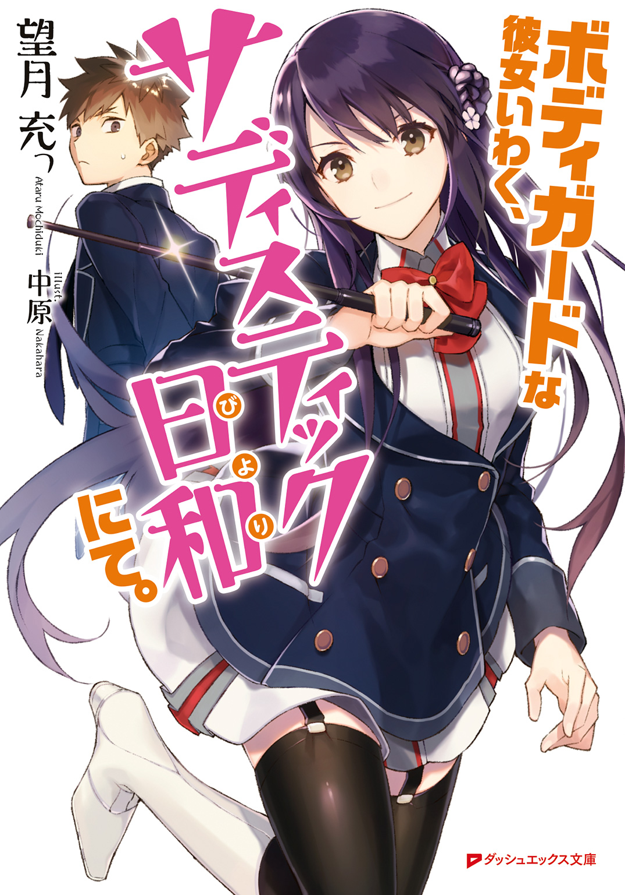
この本は縦書きでレイアウトされています。
また、ご覧になる機種により、表示の差が認められることがあります。
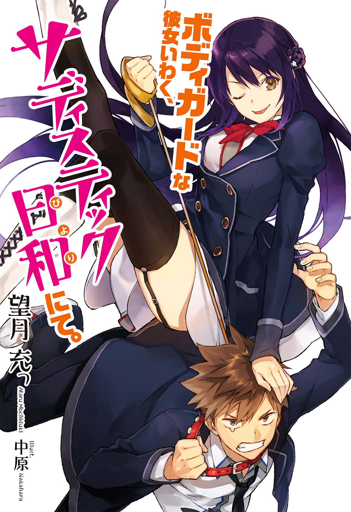

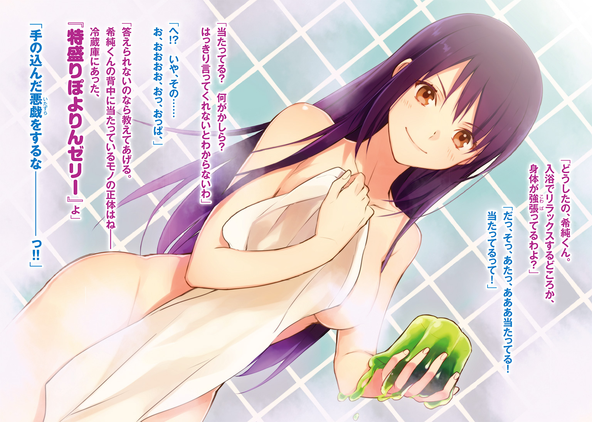
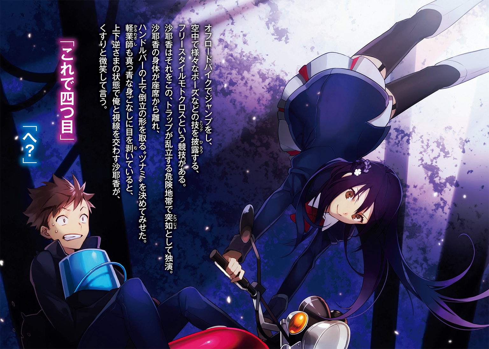
 ダッシュエックス文庫DIGITAL
ダッシュエックス文庫DIGITAL
ボディガードな彼女いわく、サディスティック日和にて。
望月 充っ
俺は『斗南の一人』、つまりは天下に並ぶ者がいないほど、破滅的に、神憑って、とことん運が悪い。
こんなことを言うと、世間をやぶ睨みするような根暗が、ネガティブな思考に取り憑かれているだけだと思われるかもしれない。けれど、信じてほしい。世界には幸運の女神様が敢えて目を背ける、手鏡に映った目尻の皺じみた存在がいるんだってことを。
実例を挙げてみよう。あれは一カ月ほど前、俺が搭乗していた飛行機で起こった出来事だ。
遠方の親戚の葬儀のため、十五になって初めて飛行機に乗る機会を得た俺は、恥ずかしながらけっこう興奮していた。離陸の際の加速Ｇに肝を冷やし、見渡す限りの雲海に阿呆のように口を開け、人知れずＵＦＯ探しを続けること小一時間。ようやく気持ちが落ち着いてきた俺は、自分がけっこうな尿意を催していることにふと気づいた。
一分一秒を争うような事態。俺はトイレに駆け込むため、両膝に力を込めて立ち上がろうとしたが、問題はまさにその時に起こった。若くて綺麗なＣＡが、深刻な表情で通路に立ち、客席を見渡しながらこう言ったんだ。
「急患が出ました。お客様の中にお医者様はいらっしゃいませんか？ お客様の中にお医者様はいらっしゃいませんでしょうか？」
俺は空気椅子状態で、ピタリと動きを止めた。
立てるわけがない。
この状況で立てるわけがない。
いま颯爽と席を立っていいのは、羨望の眼差しを一身に受ける資格のある者。人命を救うという使命に燃えた医師であって、決して尿意に負けた蓮音高校一年、向希純ではない。
首を伸ばして前方を窺ってみれば、腹部を押さえて苦しげに呻く、お爺ちゃんの姿が見て取れた。容態を心配する空気が乗客の中に広がっていく。ＣＡの顔に徐々に浮かんでくる焦燥感。神にほど近い天空にいるというのに、その加護から見放されたのかと蒼白い顔をするお爺ちゃんと、至極同感な尿意に苛まれる俺。
けっこう頑張った方だと思う。ＣＡが医者探しを諦めても誰も文句を言わない程度の時間は我慢したと思う。でも、うら若いＣＡの仕事に対する情熱はまだ燃えており、俺の膀胱は限界値というものをついに越えてしまった。
立ち上がったよ。
立ち上がったさ。
漏らすよりはいいから。自分の運のなさを呪いながら、ええいままよとばかりに勢いよく起立したよ。
――忘れない。
その瞬間、一斉に俺へと向けられた、救世主でも仰ぎ見るかのような乗客たちの眼差し。変化を敏感に嗅ぎ取って、溢れんばかりの笑顔で俺の方を振り返った、微かに潤んだＣＡの瞳。
かーらーのー。
針のむしろとは言い得て妙な、百を下らぬであろう、唾を吐きかけるような鋭い視線の嵐。当然だ。だって俺は葬儀に参列するために高校のブレザーを着ており、医者なんかじゃなく一介の学生だということは一目でわかるのだから。
読心術なんか会得していないが、その時のＣＡの心の声は、俺の脳裏にはっきりと響いた。ＣＡはどこか哀れむような表情を浮かべ、胸中でこう語りかけてきたんだ。
『そうよね。あなたぐらいの年頃って、破天荒なことをしてでも目立ちたいって思うものよね。わかるわ。お姉さんも昔はそうだったから。でもね、それを知った上で、敢えてこう言いましょう。空気読めやこの糞ジャリがぁっ!!』
違うんです尿意なんです、俺のどうしようもない尿意が席を立たせたんです！
心の中でそう泣き叫びながら、俺はトイレに駆け込んだ。着陸するので席にお戻りくださいというアナウンスを聞くまで、便座の上で真っ白になったまま、座席に戻ることはできなかった。ちなみに、急患のお爺ちゃんは軽い食あたりだったらしく、命に別状はなかったとのことだ。
ほらな？ 語るも涙な体験談だろう？
運が悪いのもここまでくればある種の才能だ。けれど、俺はまだ自分の才能を過小評価していたのだということを、初冬のとある日に思い知ることとなるのだった。
いつも通り、不運なことに。
第１話
『立てば芍薬、座れば牡丹、歩く姿は百合の花。
笑えば黒薔薇、触れれば茨、服用効果はトリカブト。』
まさか時代劇にハマるとは。
きっかけは風邪で学校を休んだことだった。暇を持て余していた俺は、昼間とも夕刻とも言えぬ中途半端な時間帯に、部屋でぼんやりとテレビを眺めていた。とはいえ、液晶に映るのは、ゴールデンタイムまでのお茶濁しといった感の、何とも退屈なものばかり。まあ、平日のこんな時間帯にテレビを視聴しているのは、現役を引退したご年配くらいのものだろうから仕方がないが。
そう諦めつつリモコンを操作していると、案の定高齢者をターゲットにしたものであろう、一昔前の時代劇が再放送されていた。番組タイトルは『流しの用心棒』。
特に惹かれるものを感じたわけではなかったが、何とはなしにその時代劇を眺めていた俺は、次第に姿勢が前のめりになっていくのを自覚した。そんなに斬新な展開があったわけではない。それどころか、ふらりと流れ着いた宿場町で悪人どもをばったばったと斬り捨てるなんていう、ありきたりな話に終始していたくらいだ。
それでも、俺は『流しの用心棒』に惹かれた。何と言っても主演の進さんが渋い。少し嗄れた声で紡がれる、
「あんたの笑顔を護らせておくんなせぇ」
という決め台詞に、血が沸き立つ感覚すら抱いた。
それからというもの、俺は毎週火曜日は寄り道することもなく、ダッシュで家路につくのが習慣となった。目的はもちろん、進さんの勇姿を拝むためである。
だというのに。
「はぁ!? 工事中!?」
俺は思わず素っ頓狂な声を上げてしまった。今朝は何の問題もなく通れていたのに、自宅への最短ルートとなる道路が通行止めとなっていたのだ。ご迷惑をおかけしますと頭を下げる作業員のパネルが、本当に申し訳なく思っているのかと胸倉を摑んでやりたくなるほど、迂遠な回り道を地図で指定している。
俺は腕時計に目をやると舌打ちした。迂回路なんか通っていたら間違いなく放送時間に間に合わない。ちなみに世の中にはレコーダーなる便利なものが存在するわけだが、俺が『流しの用心棒』にハマった途端、愛用のレコーダーはウンともスンとも言わなくなってしまった。保証期間を一カ月経過してからの故障という何とも間の悪い出来事は、俺の薄っぺらい財布では対応することが難しく、この案件はしばし保留という状況になっているのだ。
「あぁもう、どうすんだよ。進さん意外と血の気多いから殺陣シーン始まっちゃうよ。放送開始三分で決め台詞言っちゃうお茶目な勇み足だってあるのに、聞き逃しちゃうよ」
けっこう本気でテンパッていた俺だったが、ふとあることに気付いた。迂回ルートはすぐ傍にある、廃工場の広大な敷地をぐるりと大回りするように取られているためロスが多いのだが、中を突っ切ってしまえば大幅な時間短縮ができそうなのだ。
俺は『立ち入り禁止』の札が掛かる鉄柵へと歩み寄ってみる。柵の隙間から覗き込むと、手前には駐車スペースや資材置き場となるのであろう、だだっ広い空き地があった。その奥にはシャッターの閉まった、大きな廃工場が見えるが、当然ながら人の気配はなく、ひっそりと静まり返っている。
これなら誰かに見咎められることもなさそうだ。普段ならば多少なりとも躊躇する場面だろうが、今日ばかりは大した迷いもなく、一つ頷いて独白した。
「よし、背に腹は替えられん。進さんが俺を待っている」
俺は辺りに人がいないことを確認したあと、背丈ほどある鉄柵に足をかけ、よじ登って敷地内に侵入した。打ち捨てられたままの錆の浮いた軽トラが、闖入者である俺を物珍しそうに眺めているが、無視して奥に進む。
廃工場の前で立ち止まった俺は、どこからか中に入れないか、ぐるりと見渡してみた。するとシャッターの一部に、亀裂が入るようにめくれ上がっている部分を見つける。俺はその隙間に身体を滑り込ませると、工場内に足を踏み入れた。
工場の内部には、廃墟と呼ぶに相応しい、閑寂とした空間が広がっていた。所々へこんだドラム缶や、埃の積もったベルトコンベアーが、今や単なる遮蔽物として辺りに散乱している。穴の開いた天井から差し込む陽光が、それらに無理矢理スポットライトを浴びせるので、荒涼とした雰囲気が余計に際立っていた。
（何かお化けでも出そうなとこだな......）
さっさと通り抜けようと、足早に奥へ奥へと進み、工場の中ほどまで来た時だ。俺はぎょっと目を剝き、凍りついたように足を止める。
陽光の切れ間にある、澱んだような闇の中に、一つの人影がこちらに背を向けて佇んでいた。フード付きのケープで全身をすっぽりと覆っているその風体は、まるで幽鬼の類を思わせるものであり、俺は悲鳴を上げかける。
（うおぉ、ビビッた！ 何だ、ホームレスでも住み着いてたのか？）
昼間でなければお化けと見間違えたことだろう。しかし、今はまだお天道様が頭上で踏ん張っている時間帯である。ケープの裾からきちんと両足が覗いているのも確認した俺は、ほっと胸を撫で下ろした。
ホームレスなら相手も不法侵入者だし、怒られることもないだろう。そう判断した俺は、軽く会釈でもして通り過ぎようと、無造作に一歩を踏み出す。
位置が変わったことで、人影でブラインドになっていた部分が視界に入った。その瞬間、俺は驚愕に目を瞠る。俺の視界に飛び込んできたのは、地面に突っ伏したままピクリとも動かない、白髪の老人の姿だった。浮浪者仲間が爆睡しているわけではない。その可能性を否定するものがハッキリと見えている。
老人の背中に墓標の如く突き立っている、血に濡れたアーミーナイフ。
「なっ......！」
思わず声が洩れた。慌てて口を塞いだ。しかし運の悪い俺に、たまたま聞こえなくてセーフ、なんてことが起こるはずもない。ケープを着た人物が即座に反応し、バッと俺の方を振り返る。
今度は声も出なかった。目撃者対策だろうか。ケープの人物は、舞踏会にでも用いられるような、白いシンプルな仮面を被っていた。
横たわる死体に、仮面を被った怪人。
まるで真夏の陽炎のような、非現実的な景色の中に俺はいた。喉がひりついて呼吸もろくにできない。全身が総毛立ち、膝が小刻みに震え始める。
目の前にいる仮面の怪人が、肩を竦めるような動作をした。そして、どうやらボイスチェンジャーを仕込んでいるらしく、仮面の奥から異様に甲高い声が紡ぎだされる。
「オ互イニ運ガ悪イ。余計ナ仕事ガ増エタ」
怪人が一歩、俺の方へと足を踏み出した。平穏な日常を死の影が侵食してくる。
「う......わあぁぁっ！」
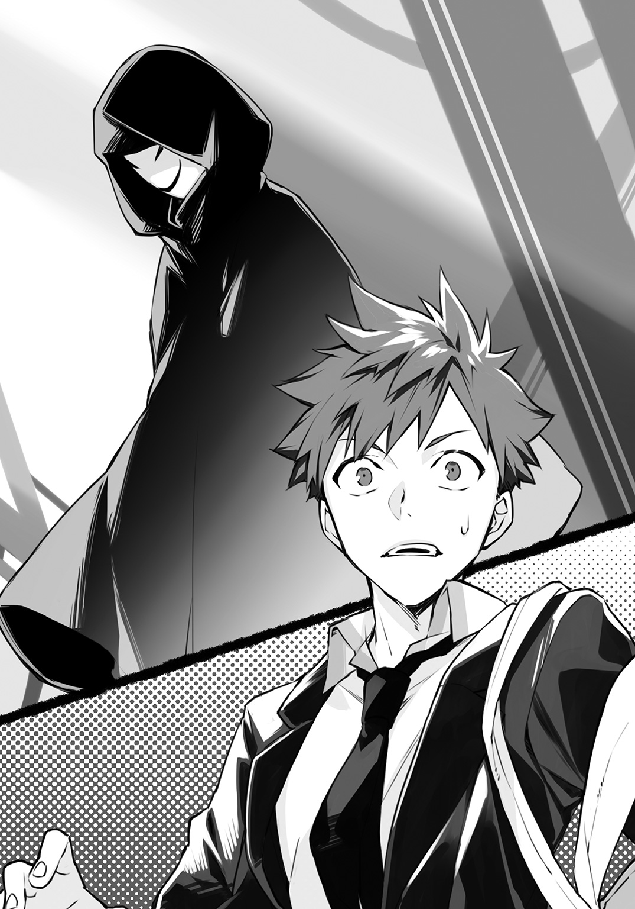
恐怖が弾けた。
自分の悲鳴によって呪縛が解かれた俺は、すぐさま反転して逃げ出した。極度の緊張から足がもつれて上手く走れない。それでも、途中にあった材木や段ボール箱、ありとあらゆるものを引き倒して即席のバリケードにしながら、がむしゃらに駆ける。シャッターの隙間をスライディングするようにすり抜け、鉄柵を一歩半でよじ登ると地面へとダイブ。勢い余って車道へと飛び出た俺の鼻先を、急ハンドルを切ったダンプカーが掠めた。
金切り声じみたブレーキ音を響かせて止まったダンプの窓から、いかついオッサンが顔を出し、口角泡を飛ばしながら大喝一声する。
「バカヤロウ、轢き殺されてえのか！」
俺は廃工場を振り返ってみた。足には自信があったのだが、振り切るまでにはいたらなかったらしい。怪人は鉄柵の向こう側まで迫ってきていたが、どうやらこれ以上の目撃者を作りたくないらしく、物陰へと音もなく姿を消した。
「おい、聞いてんのかクソガキ！」
ドスの利いた怒鳴り声で我に返った俺は、すぐさまダンプに駆け寄ると、息せき切って言う。
「おっちゃん、警察！ 警察呼んで！ 人が殺されてたんだ、そこの工場で！」
＊
飛行機で体験したトラウマが鮮明に蘇ってきた。あの時はすぐさまトイレに引きこもったおかげで実害はなかったが、今回はそうもいかない。
俺は工場の中で呆然と立ち尽くしていた。すぐ傍には通報を受けて駆けつけた、蓮音署の刑事二人がいる。室田万寿夫と名乗った、メタボ気味の壮年の刑事が、天然パーマの頭を搔きながら憮然と言う。
「......内容を整理すると、こうか。近道するためにここに不法侵入したら、背中にナイフを突き立てた男性の死体を見つけた、と」
万寿夫が掠めるようにして、横目で俺のことを見やった。俺はゴクリと唾を飲み込むと、先ほど死体を目にした場所――今は血痕一つ残っていない床を指差し、必死に訴える。
「いや、本当ですよ！ ここに人が倒れてたんですって！」
「そうは言ってもな。ないだろ、死体」
「それはホラ、仮面の怪人が死体を処理して――」
俺の言葉に失笑が被さった。刑事の片割れ、まだ二十代と思しき長身の宇山隼人が、口元に手をやっている。隼人は俺と目が合うと、悪気はないんだという風に、両手を合わせた。
「仮面を被った殺人鬼っていうのも、ちょっと荒唐無稽な話なんだよね。何かの見間違いなんじゃないかい？ たとえば、ここで酒盛りしてた浮浪者が、パーティーグッズを身につけてたとかさ。ナイフの件も、泥酔して寝転がってた浮浪者の傍に、光を反射した酒瓶が落ちてて、それが刃物に見えたとか。ありそうな話だろう？」
「見間違いなんかじゃないですって！ 俺、視力はいい方なんですから！」
二人の刑事は顔を見合わせ、どうしたものかと困惑を顔に浮かべた。俺の様子から悪戯の可能性は低いと思ってくれているようだが、目撃証言の内容自体はかなり疑っているらしい。
やがて万寿夫が、これ以上は時間の無駄だろうと幕引きにかかった。
「あー、蓮音高校の向希純くん、だったね？ ご協力ありがとう。いや、大いに助かったよ。捜査の方は進めておくし、何かわかれば連絡するから」
「ちょっと待ってくださいよ！ 仮面の怪人は俺を見て、『余計な仕事が増えた』って、追いかけてきたんですよ!? これって命狙われるってことじゃないんですか!?」
その言葉を聞いても、俺への対応が改善されることはなかった。隼人は俺の背後に回り込むと、「まぁまぁ」と宥めながら、背中を押して工場の出口へと向かわせる。
「この平和な日本で殺人鬼に付け狙われるって、そんなことまず起きないから。きっと聞き間違いだよ。浮浪者が『余分な脂肪が増えた』とか嘆いてただけじゃない？」
「あんたさっきからチョイチョイ強引な間違い押しつけてくるな!? というか強っ！ 背中押す力がハンパない！ もう聞く気ないだろ!?」
あぁ、これで俺の人生は終わってしまうのか。殺人鬼に切り刻まれるような不幸極まりない最期を迎えるのか。
とそのとき、俺の脳裏に『流しの用心棒』の進さんの顔が思い浮かんだ。進さんは刀傷の走る左頰を不敵に歪め、お得意の決め台詞を紡ぐ。
〝あんたの笑顔を護らせておくんなせぇ〟
俺は工場の敷地外へと押しやられながら喚いた。
「それじゃあ、せめて用心棒！ 進さんみたいな凄腕の用心棒をつけてくださいよ！」
万寿夫がピクリと眉を上げ、興味を引かれたように身を乗り出す。
「おっ？ もしかして『流しの用心棒』のこと言ってるのか？」
「ええ、俺ファンなんです！ 刑事さんも見てるんですか！」
「もちろん。渋いよなぁ、進さん。しかし高校生も虜にするとは、恐れ入った。......あぁ、でも今のところ事件性が疑わしいからな。警官を張り付けるわけにもいかんのよ。君のとこ、警備会社とか入ってないのか？」
「ウチは母子家庭っすよ!? そんな金ないですって！ 進さんみたいに、おにぎり一個を恩義に感じて護ってくれるような、そんな用心棒いないんすか!?」
「んな無茶な。今のご時勢、ボランティア感覚で用心棒をしてくれるなんて――」
そこまで口にしたところで、何か思い当たる節があったのか。万寿夫と隼人が「あっ」と声を洩らした。
「えっ、何です!? いるんですか、そんな用心棒！」
俺の期待に満ちた問いに答える代わりに、隼人が万寿夫に頷きかける。
「上から通達きてましたね。彼を例の件に推薦したらいいんじゃないですか？」
「確かにな。どうせお遊び程度にやってるんだ。ぴったりかもな」
「ですね。何か問題あっても、向こうの責任になりますからね」
当事者を蚊帳の外にして、何だか無責任そうな会話が交わされたあと、万寿夫が胸ポケットから手帳を取り出した。そこにサラサラとペンを走らせたかと思うと、ページを破って俺に差し出してくる。何だろうと思いつつ受け取ってみれば、ここからほど近い住所が書かれていた。
「話は通しておくから、とりあえずそこ訪ねて」
「それじゃあ、ここに行けば進さんみたいな用心棒がいるんですね!?」
光明を得た俺は、パッと顔を輝かせて万寿夫と隼人を見やった。
二人の刑事は、上司の家に招かれた際にブッサイクな赤ん坊を見せられ、「どうだ俺に似て男前だろう？」と問いかけられてどう返答していいかわからず、取り敢えず愛想笑いをしてお茶を濁しておこうというような、ははっ、という乾いた笑みを洩らした。
＊
「おいおい。本当にこっちでいいのかよ......」
指定された住所は、かつては大勢の人で賑わっていたであろう商店街の成れの果て、シャッター通りのそのまた奥を示していた。俺は番地の書かれたプレートとスマホの地図を頼りに、空き店舗に挟まれた薄暗い路地を抜けていく。我が物顔でのし歩く野良猫に威嚇され、長らく放置されたままと思しきゴミ袋の山を踏み越えながら進むことしばし。ようやく辿り着いた住所には、築四十年は経過しているであろう雑居ビルがぽつんと建っていた。
「ここ......だよな？」
俺は住所を二度ほど確認したのち、フロア案内に目をやった。どうやらこのビルも筋違いのシャッター通りよろしく、空きテナントばかりらしい。最上階である六階に唯一、『ＳＭＧ』と記されたプレートが入っていた。
躊躇いながらもビルの中へと足を踏み入れた俺は、正面に一つだけある狭苦しいエレベーターに乗り、取り敢えず六階を目指してみる。軋むような音を立てながらも俺を何とか目的の階に運び上げたエレベーターは、帰りは階段を使えとばかりに、乱暴に口を開ける。
エレベーターを降りた俺は、六階フロアを恐る恐る見渡してみた。黄ばんだ蛍光灯がシミやヒビの目立つ廊下を薄ぼんやりと照らしている。節電のためか消灯されている給湯室から、ぽたり、ぽたりと水の滴る音が響いてきて、まるでホラー映画のセットに迷い込んでしまったような感覚すら抱いた。
何とも気味の悪いところだが、ここまできて引き返すわけにもいかない。とにかく奥へ進んでみると、突き当たりに『ＳＭＧ』の札が掛かったドアを見つけた。俺は腹を括りノックする。
「どうぞ」
中から聞こえてきたのは若い女性の声だった。ドアを開けてみると、部屋の中は拍子抜けするほどの、何の変哲もない事務室だ。応接用のテーブルとソファに、整然とファイルが並ぶスチール棚。正面には会社の重役が使っていそうな大きなデスクが鎮座しているが、そこに腰掛けているのは俺と大して年齢が違わないであろう少女だ。艶を帯びた流れるようなロングヘアに、彫刻の如く整った顎先にかけてのライン。俺のことを見据える瞳は静かに澄み渡っていて、吸い込まれるような魅力がある。華美ではないが凜とした、一輪挿しでも充分な存在感を発する菊の花のような、静かな典雅さがそこにはあった。
部屋には他に人影はない。先ほどの声の主も目の前にいる少女だろう。巷ではちょっとお目にかかれないようなその美少女に見惚れていると、当の本人が席を立ち上がって俺のもとへと歩み寄ってきた。
「室田刑事から話は聞いているわ。向希純くんね。私は来栖沙耶香よ。よろしくお願いするわ」
「あ、どうも。こちらこそよろしく」
俺は沙耶香が差し出してきた手を握り返した。彼女の手は驚くほど滑らかで、ただの握手だというのに妙にドギマギしてしまう。
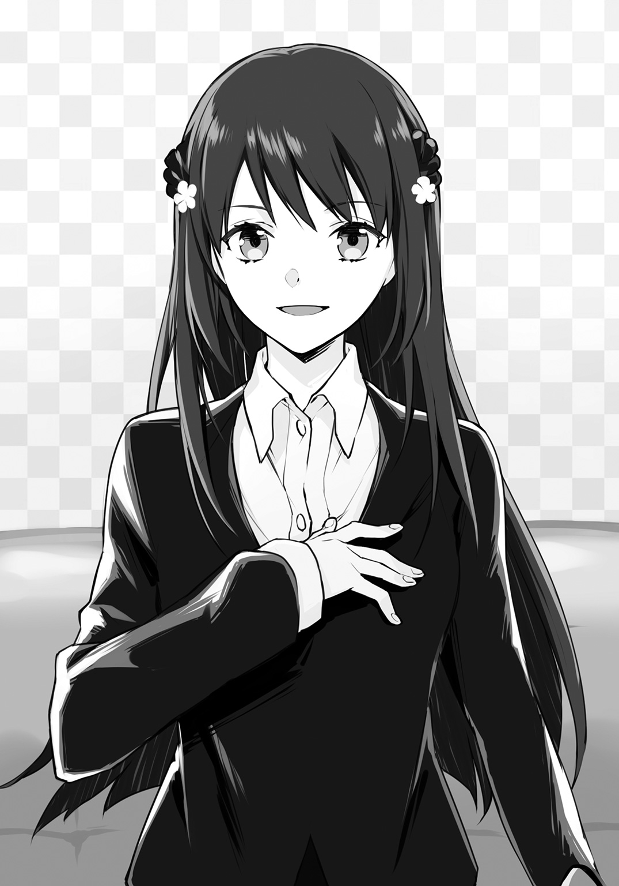
「それじゃあ、詳しい話を聞かせてもらいましょうか。どうぞ掛けてちょうだい」
「え？ 話を聞くって、来栖さんが？」
「沙耶香でいいわ。蓮音高校の一年生なんでしょう？ だったら私と同い年だから」
へぇ、そうなんだ。どうりで若いと思った。
......彼氏いんのかな？
「っじゃなくて。ほら、大人が対応してくれるんじゃないの？」
「ご心配なく。私はここの代表者だから」
「へ？」
「立ち話も何だから、どうぞ掛けてちょうだい」
多少の混乱のなか、沙耶香の言葉に促され、俺は応接用のソファに腰掛けた。沙耶香は俺の正面に座ると、急須からお茶を注いでくれる。
日本的な美を集約したような沙耶香は、おもてなしの心も十全に備えているらしい。湯飲みを手にした瞬間にわかったが、客人が飲みやすいように、お茶は既に適度な温度にまで下がっていた。万寿夫から連絡を貰ったあと、俺がここに到着する時間を予測して、前もって準備しておいてくれたらしい。
寒さが日に日に増す初冬であり、動き回っても暑いと感じるような時季ではないが、仮面の怪人から全力で逃げたり、この場所を捜し歩いたりしたおかげで、とにかく喉が渇いている。俺は礼を言って湯飲みを手にすると、一気に半分ほどお茶を呷った。
口腔に香り立つように広がる、日本茶特有の豊かな苦味。口から鼻に抜けていく、広大な茶畑を想起させるような青々とした苦味。咽喉を清らかに流れ落ちていく、染み渡るような苦味。胃酸にも負けない苦味。
「――ってマズッ！ 苦っ！ これ、なん、苦いっ！ もう苦いとしか言いようがない！ 何だこれ!?」
嫌な汗が全身から噴き出してくる。金魚のように口をぱくぱくさせながら沙耶香を見やると、彼女は淡々と俺の問いかけに答えた。
「世界一苦いとされる苦丁茶よ。お客様がみえると伺ったから、事前にじっくり蒸らして苦味を凝縮しておいたわ」
「え何で？ 客が来るとわかってて何でそんなことすんの？」
不信感が急激に膨らみ、俺は胡乱な眼差しで沙耶香を見やった。すると沙耶香は愁いを帯びた所作で目を伏せ、しおらしく呟く。
「......ごめんなさい。とても身体にいいお茶だから、喜んでもらえると思ったのだけれど。そうよね。私が淹れたお茶なんて、下水にも劣る代物よね」
「いや、別にそこまで言ってないんですけど......」
「気を遣ってくれなくてもいいわ。こんなもの、視界に入るだけでもさぞや不快でしょう。今すぐドブ川に捨てましょう」
「ちょっと待った！ 何かゴメン！」
湯飲みを手にして席を立とうとする沙耶香を、俺は慌てて引き止めた。沙耶香は浮かしかけていた腰を落ち着け、困惑したように小首を傾げる。
いや、可愛いなオイ。
俺は空咳をすると言った。
「そうだよな。健康のためだよな。悪かったよ、マズイなんて言って。喉カラカラだし、ありがたくいただくよ」
俺はドブ川行きの運命を免れたお茶を再び手に取った。ここまで来た以上、完飲せねばなるまい。俺は腹に力を入れると、残りのお茶をグイッと飲み干した。
（うおぉ苦い！ 雑草でも食ってるみたいに苦い！ でも飲み切ったぞこんちくしょう！）
どんっ！
とテーブルに勢いよく置いた空の湯飲みに、わんこそばのお代わりでも入れるような迅速さで、沙耶香が二杯目のお茶を注いだ。
「ウソぉ！ ちょっと何やってんの!? あんた何やってんの!?」
「喉が渇いていると言っていたから、一杯じゃ足りないと思って」
「言ったけどさ！ でもほら、俺には苦味が強すぎるし......そうだ！ 悪いけど、ちょっと水で薄めてくんない？」
「ごめんなさい。お恥ずかしい話だけれど、いま水道を止められているの」
ええぇぇぇ。じゃあこのお茶どうやって淹れたのー？
というか俺、この部屋来るまでに給湯室から水の滴る音を聞いたよー？
何かおかしい。何かがおかしい。俺は釈然としないながらも、礼儀とばかりにお茶に口をつけた。もう味覚が馬鹿になっていて苦いのかどうかもよくわからない。それでも湯飲みは膝元でしっかりと持ち、お代わりが注がれるのを防止すると、本題を切り出した。
「ところでさ。ここに来たら用心棒がタダで雇えるって聞いたんだけど、それって本当なの？」
「ええ。少し語弊があるけれど、だいたい合っているわ」
あっさり過ぎる沙耶香の返答に、俺は助かったと思うよりむしろ、警戒する気持ちが急成長していくのを感じた。藁にも縋る思いでこの場所を訪ねたが、タダで用心棒が雇えるなんて、あまりに話が旨すぎる。刑事からの紹介だし、新手の詐欺ということはないだろうが、何らかのリスクがあるんじゃないだろうか。
「質問しといて何だけど、ちょっと信じられないんだよな。だいたいここって何なの？ 警備会社でいいんだよね？」
「秘匿事項に引っかかる部分があるから、詳細を話すには少し段階を踏まないといけないの。先に私の方から確認しておきたいことがあるんだけれど、いいかしら？」
秘匿事項とはいったい何のことだろう。俺が当惑しながらも頷くと、沙耶香は俺のことをひたと見据えながら訊ねてきた。
「室田刑事から大まかなことは聞いているけれど、あなたが殺人現場を目撃して、命を狙われることになったというのは本当の話？」
僅かな機微さえ見逃すまいとするように、沙耶香はその透徹して澄み切った瞳で俺の反応をジッと見守る。
互いの呼吸すら感じ取れるほどの静寂。
シチュエーションが違えば何か勘違いしてしまうような状況だが、ここで変に意識して噓つきだと思われては敵わない。俺も沙耶香の目をしっかりと見返し、力強く答えた。
「ああ。間違いない」
「......わかった。信じるわ」
あまりにもあっさりと紡がれたその言葉に、俺の方が信じられない気持ちになり、何度も目を瞬いた。けれど沙耶香はそんな俺には委細構わず、矢継ぎ早に質問を投げてくる。
「被害者と面識はある？」
「え？ いや、ない......と思う。うつ伏せだったし、よくわからないけど」
「加害者の容姿を教えて」
「それが、白いマスクをしてたから顔は見てないんだ。身体つきも、フードつきのケープですっぽり覆ってたからよくわからない」
「身長はどれくらいだった？」
「必死だったからはっきりとは......でも、けっこう小柄だったと思う」
「他に特徴は？ 歩き方、利き手、声の調子」
「声はボイスチェンジャー使ってたし、怖くなってすぐ逃げたから、他は全然」
「そう。わかったわ。希純くんの警護を請け負うか決める前に、多少の説明は必要でしょうね。さっきも言ったけれど、秘匿事項に引っ掛かることだから、私がこれから話すことは他言無用に願いたいの。了承してもらえるなら話を続けるけれど、いいかしら？」
沙耶香は真剣な面持ちで確認を取ってくる。否と告げれば、間違いなくその場で話は終了。俺は進さんのような用心棒も持たぬまま、殺人鬼が闊歩する不運な日常に放り出されることになるだろう。
「わかった。誰にも言わない。約束する」
一も二もない俺の返答に、沙耶香は満足げに口元を緩めた。彼女は小さく頷いてみせると、滑らかに言を継ぐ。
「希純くんは『ＭＵＳＡＳＨＩ』という警備会社、知っているかしら？ 一応、国内シェアはナンバーワンだし、海外にも数多くの支社を持つ大手なんだけれど」
「ああ、もちろん知ってるよ。勉強机の引き出しから出てくる、目隠し線の入った猫型ロボットを、侵入者として迅速に捕まえるＣＭでお馴染みだからな。あと、警察の天下り先って、よく叩かれるとこだろ」
「お祖父さまの名誉のためにも、後者については少し訂正を入れさせてちょうだい。確かにお祖父さまの会社は警察関連の退職者を多く受け入れているけれど、それは天下り先になっているというより、有能な人間のヘッドハンティングという面が強いの。だからデスクワーク中心のキャリア組よりも、実務経験を積んでいる警備部の人間や、ノンキャリアの叩き上げといった人たちの再就職先として、広く門戸を開いているだけなのよ」
「......え？ ちょっと待った。お祖父さまの会社って、それはつまり――」
「お察しの通りよ。お祖父さまは警察庁のトップに上り詰めた、元警察庁長官の来栖源之助。けれど就任わずか一年足らずで職を辞し、民間の警備会社『ＭＵＳＡＳＨＩ』を創設した、まさに異色の人物ね」
現職ではないとはいえ、警察庁長官のお孫さん。
思わず謝ってしまいたくなった。下心を抱いた時点で公安が動いて亡き者にされるんじゃなかろうか。一瞬にして挙動不審になった俺に対し、沙耶香は僅かに口の端を上げる。それはまるで、実験用マウスが怯える様を見て、愉悦を感じているかのような――
虚を衝かれた俺はごしごしと瞼をこすり、沙耶香のことを観察した。彼女はこれまで通り、上品で凜とした様子を崩していない。
（......いかんな俺。警察庁の名前を聞いて、何か恐ろしげな幻覚まで見えだした。情けない）
沙耶香は小首を傾げ、問いかけてきた。
「どうかしたの？ よければ話を続けたいのだけれど、構わないかしら？」
「ああ、うん。悪かったな、話の腰を折って」
やっぱり気のせいだと得心がいく俺に、沙耶香の歌うような声が届く。
「防犯から要人警護、果ては海外への傭兵派遣まで手広く行っている『ＭＵＳＡＳＨＩ』だけれど、不得意な分野が一つだけ存在するの。それはね、未成年者に対する警護よ。たとえば、希純くんのような一般的な高校生ね」
話が見えないながらも自分のことを指差すと、沙耶香は静かに頷く。
「分別のある大人ならば、自分の置かれた窮状というものを理解して、隠れ家に長らく缶詰めという事態も受け入れてもらえる。こうなると、警護する側は負担が減るし、リスクも極力抑えることができるわ。けれどね、未成年者が相手だと、そう簡単にはいかないの。自分が危地に立たされていることをきちんと理解できないから、護衛がつくことは了承しても、後は普段通りの生活が送れるものと勘違いするのよ」
「え？ それって駄目なの？」
俺も進さんみたいな用心棒さえ雇ってしまえば、後は何とかなるだろうと考えていた。学校のような比較的安全な場所は問題ないだろうし、通学は続けるつもりだったのだが。
そんな俺の考えを告げると、沙耶香は一蹴した。
「馬鹿を言わないで。単なる不審者だって易々と侵入できるほど、学校のセキュリティはお粗末なものなの。本気で危害を加えようとしている襲撃者にとっては、高校なんて絶好の狩猟場よ。そのくせ、ボディガードを廊下に立たせておくなんていう当然の対応さえ、学校関係者は拒否するの。他の生徒が怯える、授業の妨げになると言ってね」
沙耶香はご不満の様子だが、それは仕方ないだろうと俺は思った。俺だって、黒服にサングラスのいかついオッサンが廊下から教室を覗いていたら、気になってしょうがない。
口にはしなかったが、俺のそんな思いは充分に伝わってしまったらしい。沙耶香はほぅと嘆息すると、しかし俺の甘い考えを叱りつけるでもなく言った。
「そうなのよ。確かに仕方のない部分はあるの。未成年者を狭苦しい部屋に匿って、二十四時間体制で警護するとなると、未発達な精神に甚大なダメージを与えることにもなりかねない。何より、命には代えられないとはいえ、一度きりしかない、かけがえのない学校生活をフイにするような警護方針は、今や時代に即していない」
沙耶香はそこで、俺のことを力強い眼差しで見詰め、毅然と言った。
「だから私は、スクール・メイツ・ガーディアン。『ＳＭＧ』を創設したの」
情報不足によって理解が追いつかない。俺の物問いげな視線に気づいたというより、興が乗ってきた街頭演説のように、沙耶香に喜色が滲んでくる。
「ここからが他言無用をお願いしている肝となる部分なのだけれど......希純くん、ここで見聞きしたこと、決して外部には洩らさないで。いいわね？」
沙耶香は有無を言わさぬ強い口調で釘を刺してきた。俺はその迫力に気圧されながら、ごくりと唾を飲み込んで訊ねる。
「もし誰かに話したら、俺どうなんの？」
処罰ははっきり定められているのだろうか。沙耶香は顎先に手をやり、悩む素振りを見せた。美人はどんな仕草をしても絵になるなぁと感心していると、沙耶香は訥々と言葉を紡ぐ。
「そう......ねぇ。口約束とはいっても、約束を反故にするということは、私に対してウソをついたということになるから。針千本でも飲んでもらおうかしら？」
「針千本って......」
思わず口元が緩んだ。警察庁長官のお孫さんに対する裏切り行為だし、監獄にでも入れられるのかと思いきや、まさか「ウソついたらハリセンボンのーます」のレベルの話をされるとは。綺麗すぎて取っつき辛い感じの女の子だと思っていたのだが、案外お茶目なところがあるのかもしれない。
そんなことを感じて、肩の力を抜いた時だ。沙耶香がにっこりと、天使もかくやといった笑みを浮かべ、こう問いかけてきた。
「待ち針でいいかしら？」
「............うん？」
俺は何のことを言われてるのかわからず、思わず聞き返した。それも当然だろう。これまでの人生で、「ウソついたらハリセンボンのーます」という話の後に、「待ち針でいい？」と問いかけられた経験は残念ながらない。会話の繫がりが理解できず混乱するのも仕方ないことだ。
だが、俺の抱いた謎は、沙耶香の快刀乱麻を断つような一言で解決した。
「飲んでもらう針の種類よ。見た目が可愛いし、待ち針でいいわよね？ 待ち針にしましょう」
「怖い！ 言ってること怖すぎだよ！ 冗談でも女の子がそんなこと口にすんなよ！」
「あら。私はやると言ったらやるわ。飲んでもらうわよ、待ち針千本」
沙耶香はスッと目を細め、妖艶に微笑む。
その、一点の曇りもない表情を目にした途端、俺は全てを理解した。お茶を出されたあたりから、「何か妙だなー。おかしいなー（稲川淳●の怪談風）」と思ってはいたが、とうとう確信に至った。
綺麗な外見に騙されてはいけない。
沙耶香は、人を苛めて快感を得るという、真性のサディス――
その時だった。部屋の壁にあるセキュリティー装置が、甲高い警報音を鳴らした。小さな液晶に１―Ｂと表示され、赤ランプが明滅する。
沙耶香が唐突に立ち上がった。その顔から笑みは一瞬で消え去り、代わりに抜け目のない炯々とした光が双眸に宿る。
「ど、どうしたんだよ？ あの音、何？」
「......一階に侵入者みたいね」
沙耶香の口から紡がれた不穏な台詞に、仮面の怪人のことが思い起こされた。俺は不安を拭うように、希望的観測を口にする。
「侵入者って、ただのお客じゃねえの？ 俺みたいに」
「その可能性は低いんじゃないかしら。『ＳＭＧ』は、実はまだ試験運営の段階だから、お客様は誰かの紹介を受けて初めてこの場所を知るの。希純くん以外の者が今日ここに来るという連絡は誰からも受けてないわ」
沙耶香はそう言うと、突然俺の腕を摑んで立たせ、部屋の出口へ向かいながら言う。
「まだ正式契約は交わしていないけれど、この場は警護に就くわ。退避しましょう」
「へ？ 警護に就くって、進さんみたいな凄腕の用心棒は？」
俺の切実な問いかけに対し、沙耶香は舞踏会でのステップターンを決めるような華やかさで俺のことを振り返り、不敵な笑みを浮かべて告げた。
「凄腕のボディガードならいるじゃない。あなたの目の前に」
「はあっ!?」
目を剝く俺には構わず、沙耶香はドアを開けて廊下の安全を素早く確認。呆けている俺を半ば引きずるようにして先に進むが、エレベーターを前にして足を止める。俺をえっちらおっちら六階まで運んでくれたエレベーターは、何者かが下でボタンを押したのだろう。今は一階へと降りていた。そして再び、二階、三階とランプを灯しながら上ってくる。
「エレベーターは駄目ね。こっちよ」
沙耶香が階段へと進路を転じた。引っ張られるだけだった俺も、そこでようやく我に返り、歩を進めながらも問いかける。
「おいおい。ボディガードって言ったら、ごっついオッサンとかだろ。何かの冗談か？」
「まさか。これがさっき言ってた秘匿事項の正体よ。未成年者への警護がメンタル的な問題、あるいはある種の聖域とも言える、学校という物理的な障害を抱えているなら、こちら側から大胆な一歩を踏み出すしかない。私は成人を迎えていない優秀な人材にライセンスを与えて登録社員とし、警護対象者のもとへと派遣する業務を試験的に行っているの」
「はあっ!? それってつまり、ここのボディガード、全員が学生ってことか!?」
「ええ。そういうこと」
階段に辿り着くと、沙耶香は殿を務めるように俺の後ろに回り、背を押してステップを駆け下りさせる。五階を通過し、四階へ。軽快な足音が響くなか、俺は軽い眩暈を覚えていた。進さんならいざ知らず、同年代の学生が護衛に就くというのは、何とも心許ない。
言葉を失っている俺に対し、沙耶香が周囲の警戒を怠らぬまま告げた。
「言いたいことはわかるわ。でも安心してちょうだい。私を含め、ライセンスを発行された警護人員については、厳選の上に厳選を重ねているわ。それに、利点の大きさはわかるでしょう？ 同年代のボディガードなら気兼ねもないし、学校のような特殊な環境にも溶け込める。護衛されていることすら失念してしまうような、これまで通りの生活が送れるわ」
「それはそうかもしれないけど、」
「止まって！」
鋭い制止の声に、俺は次のステップに足を下ろそうとした状態で、ピタリと動きを止める。
沙耶香は俺の足元にしゃがみ込むと、ステップから二十センチほどの高さを、何かをなぞるようにツツッと撫でた。目を凝らして見やれば、細いワイヤーが張ってある。ワイヤーは手摺りの間へと伸びており、その先には拳大ほどの黒くて丸い物体が括りつけられていた。俺の気のせいに違いないが、それはアクション映画でおなじみの、手榴弾にとてもよく似ている。
沙耶香が固まったままの俺を振り仰ぎ、さらりと言ってのけた。
「ブービートラップよ。そのまま足を出していたら、一瞬であの世まで吹き飛んでいたわ」
嫌な汗が一瞬にして噴き出した。その場にへたり込んでしまいそうになるが、手榴弾の傍に座り込むわけにもいかず、喘ぎながら蒼白い顔を沙耶香に向けるより他ない。
沙耶香は俺のそんな様子を目にして、不意にぽつりと呟いた。
「......あなた、やっぱりいい表情をするわね」
「は？」
「何でもないわ。それより、こちらの行動が読まれてる。きっとエレベーターも囮ね。希純くん、ついてきて」
沙耶香は今しがた降りてきた階段を駆け上ると、一つ上の四階フロアへと出た。左右に並ぶ、誰も店子の入っていない空き部屋の数々。突き当たりには明かり取りのためであろう大きな窓があるが、隣接するビルが日差しを完全にシャットアウトしており、非常灯だけが弱々しく廊下を照らしている。
「こっちよ」
端的に告げて先行する沙耶香を追いかけながら、俺は潜めた声で問いかけた。
「なぁ、これからどうすんだよ？ 取り敢えず下に向かった方がいいんじゃないのか？」
「馬鹿正直に下に降りたんじゃ待ち伏せの可能性があるわ。いいから黙ってついて――」
そこで沙耶香は言葉を切り、足を止めた。どうしたんだと問いかける前に、進行方向にある小ぢんまりとしたエレベーターホールから、耳障りな音が響いてくる。どうやら再びエレベーターが動き出したらしいと理解した時には、沙耶香が俺の腕を摑み、手近にある部屋へと引きずり込んだ。
「なん――」
俺の抗議の声は沙耶香の手によって塞がれた。沙耶香は次いで、押し倒すようにして俺を屈ませる。シャンプーのものか、とてもいい香りがフワリと鼻腔をくすぐった。俺の口に当てられている沙耶香のやわらかな掌の感触に、思わず息を止める。
先ほどとは違った理由で身体を硬直させる俺だったが、沙耶香は全神経を廊下の方へ向け、その形のいい眉をしかめる。
「......こっちは本命ね」
エレベーターはこの四階フロアで止まったらしい。ドアの向こうから、チーンという、少し間抜けな音が響いてきた。そしてその後に続く、何者かの足音。
コツ、コツ、コツ。
足音の主はしばらく廊下の様子を窺っていたが、すぐさま再び動き出した。エレベーターホールから最も近い、俺たちのいる部屋の二つ隣のドアを開ける。
侵入者が部屋の中を嘗め回すように、じっくりと視線を這わせる姿が目に浮かんだ。やがてその視線が俺を捉え、禍々しい人殺しの腕を、こちらにゆっくりと伸ばして――
「希純くん。希純くん！」
ハッと我に返ると、沙耶香の顔が息のかかるほど近くにあった。思わずのけ反ると、沙耶香はその分だけ身を乗り出し、押し殺した声で、しかしハッキリと言う。
「希純くん。私を専属のボディガードにする気はある？」
「え？」
「さっきも話したけれど、学生による護衛は試験運用の段階なの。そのため警護対象者はクライアントではなく、モニター扱いになる。それが無料でボディガードが雇える手品のタネよ」
ドアを閉じる音が聞こえてきた。侵入者は今度は斜向かいの部屋を捜索するらしく、ノブを回す気配が伝わってくる。沙耶香はさらに声を落とし、口早に言った。
「モニターの選別は私に一任されているの。本当は様々な条件があるのだけれど、事は急を要するし、希純くんを特例扱いで警護対象者に認定することはできるわ。後は希純くんの意思次第よ。どう？ 私に命を預けてくれる？」
沙耶香の真摯な眼差しが俺の双眸を捉えた。不安や恐怖を浄化してくれるような、たおやかなその視線に、強力に惹き込まれていくのを感じる。
気づけば俺は、コクリと素直に頷いていた。沙耶香はそれを見ると、優しく笑って俺の手を取り、自身の口元へと引き寄せる。
「声を立てないでね？」
そう囁いたかと思うと、沙耶香は俺の親指に唇をつけた。柔らかだが弾力のある感触が脳髄に焼き付く。と、次の瞬間。親指に走る痛み。
「ッ！」
俺は身じろぎするが、何とか声を洩らすのを堪えた。すると沙耶香が顔を上げ、よくできましたとばかりに口元を緩める。その唇は血の朱によって、紅を差したように妖しく輝いていた。
「ごめんなさい。一応、規則だから」
そう言って沙耶香がポケットから取り出したのは、折り畳まれた一枚の紙だった。『契約書』の文字が躍るその一角に、血の滲んだ俺の親指で拇印を押す。
命を狙われているのとは違った理由で、心臓がバクバクと跳ね回っていた。しかし沙耶香は平然とした様子で言う。
「ＯＫ。これで契約成立よ。後はこの場をどう乗り切るかね」
沙耶香が部屋の中をぐるりと見渡す。俺もそれに倣い、周囲を窺ってみた。辺りを見回す余裕すらなかったので気づかなかったが、ここは以前は休憩室として使われていた部屋らしい。埃の溜まった長テーブルに、散在するパイプ椅子。錆の浮いた流しには、放置されたままのガスコンロもある。
沙耶香が部屋の一角に目を留め、ポツリと呟いた。
「あれ、使えそうね」
そう言うや否や、沙耶香は音もなく移動。部屋の片隅に転がっていた消火器を手にすると、すぐさま俺のもとに取って返す。
「いい？ これから言うことをよく聞いて」
侵入者の気配が隣の部屋へと移動するなか、沙耶香の立てた退避プランを聞いた俺は、目を丸くして反論する。
「ちょっ、待てよ。そんな無茶な。他に何かいい方法あるだろ？」
「相手はこちらの動きを読んでいるし、どんな武器を所持しているかもわからない。多少はリスクのある行動に出ないと逃げ切れないわ」
「でも、」
「希純くん、警護で最も重要なことは、お互いの信頼関係なの。大丈夫。今いったルートは緊急退避のＦプランに沿ったものだし、その動線チェックは普段からしてある。きっとうまくいくし、これがいま取り得る最善手よ。だからお願い。私の指示に従って。契約通り、私にあなたを護らせてちょうだい」
俺の手を両手で握り締め、沙耶香は切実に訴えてくる。
まるで進さんだと、そう思った。俺の脳裏に閃くのは、進さんの例の決め台詞。
〝あんたの笑顔を護らせておくんなせぇ〟
この人に全てを任せてみようという気にさせる、絶対的な信頼感。まるで胎児の頃の記憶を呼び起こされたように、生命の海にたゆたうが如き安心感。
俺は了承の意を示すように、沙耶香の手をぎゅっと握り返した。沙耶香は一つ頷くと、鋭い視線をドアへと向ける。
侵入者が隣の部屋を後にし、廊下へと出たのが物音でわかった。そのまま俺たちのいる部屋のちょうど向かい、沙耶香によると倉庫になっている部屋へと歩を進めていく。
沙耶香は消火器を手にすると、ドア脇の壁に背を預ける。俺は事前の説明通り、反対側の壁に張り付き備えた。
沙耶香が目顔で「準備はいい？」と訊いてくる。正直、よくはないが、侵入者が心の準備を待ってくれるはずもない。向かいの部屋を調べ終えたらしく、俺たちのいる部屋の前まで気配が移動。ドアノブがガチャガチャと回される音がやけに大きく響く。
沙耶香が指を立てて合図。
......３、......２、......１、
ＧＯ！
侵入者によって微かな隙間が生じたドアを、俺がめいっぱい蹴りつけた。ドアが勢いよく開き、侵入者を弾き飛ばす。
沙耶香が消火剤を噴射しながら廊下へと躍り出た。視界が一瞬にして白く塗り潰され、方向感覚さえ朧になる。
「走って！」
沙耶香の号令で部屋から飛び出した俺は、すぐさま左に折れ、全力疾走に入った。白煙を抜けると、視界の先に廊下の突き当たりにある大きな窓がはっきりと映る。
肩越しに振り返れば、沙耶香が消火剤の煙幕を張りながら、すぐ後ろを追走していた。女だてらに見惚れるほどの快足だ。これなら減速する必要もなく、つまりは迷ってる暇もない。
窓ガラスが迫る。
沙耶香が身体を沈め、半身になるような斜め前方への力強い踏み込みをみせた。伸びきったその低い体勢から、まるで居合い斬りのように、消火器を前方へと投擲。
俺の頰を掠め、消火器が空を走る。尾を引く消火剤と相俟って、まるでロケット砲のようだ。赤い砲弾は窓ガラスを直撃して粉砕。幾百ものきらめきが生まれる。
「希純くん！」
「うああぁぁぁぁっ！」
俺は裏返った叫び声を上げながらも、窓の外へと身を躍らせた。沙耶香によれば、緊急退避経路の一つがコレらしい。すぐ隣にあるビルの一室、つまりは窓の向かいに位置する部屋は、ＳＭＧが借用している物件だそうだ。いつでも飛び込めるように窓は事前に取り外されているし、常時開け放たれているドアにも細工がしてあり、一度閉めたが最後、部屋の中からは開かない造りになっているらしい。つまりは、ビルからビルに飛び移れば、迅速にその場から離れられるし、部屋を出てドアを閉めてしまえば、追っ手がいても退避する時間は充分に稼げるとのこと。
だけど、ここは四階だ。下手を打って真っ逆さまとなれば、運が悪ければお陀仏だし、運が良くても骨折は免れない。
体感的には数時間にも及ぶような、怖気をふるう浮遊感が俺を襲った。隣接するビルとの間隔は二メートル程度という話だったが、奈落へと通じる崖の間を、百メートルにもわたって綱渡りするような、絶望的な隔たりを感じた。
俺の口から迸る悲鳴が、ビルの隙間に乱反射しこだまする。人生の最期に見ると言われる走馬灯を、期間限定で視聴する程度の恐怖は覚えつつも、やがて俺の両足は数十メートル下のアスファルトではなく、ビルの一室の床をしっかりと踏みしめた。
着地の衝撃で両足に走る痺れ。生きている実感。
思わず目尻に光るものが浮かぶが、生を嚙み締めている場合ではない。俺は今しがた飛び込んできた窓を振り返った。一人だけさっさと逃げる気なんて毛頭ない。身体を張って俺を護ってくれた少女を見捨てていくほど落ちぶれちゃいない。後に続く沙耶香を受け止めるために。あるいは落下しそうになった際に手を伸ばすために、俺は身構え振り返ったんだ。
そして、そこに見た。
あれぇ？ と思った。
俺が飛び込んだ部屋は、まるで誰かのお誕生日会でもあるかのように、さまざまな飾りつけがしてあった。色とりどりのウォールデコレーション。天井を彩る風船。そして、窓の上にある看板には、こう書かれていた。
『Congratulation! You are alive!（おめでとう！ 君は生き残った！）』
ぽかんと口を開けて看板の文字を読んでいた俺の目の前に、沙耶香がフワリと舞い降りてきた。俺が決死の覚悟で跳んだビルの谷間を、まるで道路にできた水溜まりでも跨ぐような気軽さで越えてきた。沙耶香は長い黒髪を右手でさっと後方へ払うと、優雅に微笑む。
「やっぱり私の目に狂いはなかったわ。あなた、いい声で鳴くわね」
「ちょっとゴメン、なに言ってんの？ ホントなに言ってんの？ え、これって......」
「あら、説明してなかったかしら？ 今のは単なる訓練よ」
沙耶香がチラリと後方を振り返り、小さく手を振った。向かいの窓にはまるでコントのように、全身消火剤塗れになった人影があり、手を振り返してくる。
俺は混乱の極みに達してしまい、喘ぎながら言う。
「え、噓。今までの全部訓練？」
「そうよ。あぁでも、訓練と言っても出来レースじゃないから。ブービートラップを見破ったのも、あなたをこのルートで安全に退避させたのも、全て私がフレキシブルに対応した結果よ。どう？ ボディガードとしての私の実力も見せることができたし、なかなか有意義な訓練になったでしょう？」
理解という名の落雷に打たれた。俺は即座にがなり立てる。
「ッんなわけあるか！ こっちは一歩間違えたらお陀仏の、決死のダイブまでしたんだぞ!?」
「大丈夫よ。さすがに訓練で死ぬようなことがあっちゃいけないから、窓の下に落下防止のための強化ガラスを張ってあるわ。ぱっと見わからないでしょう？」
「落下防止なら防護ネットでいいじゃん！ 何でぱっと見わからない強化ガラスにしたの!? 大事なことだからもっぺん訊くよ！ 何でぱっと見わからなくしたの!?」
「ふふ、欲張りね。そんなに知りたいの？」
「楽しそうだなオイ！ もういいよ何となくわかったよ、というか怖くて答え知りたくない！」
「それはね、落ちたら死ぬかもしれないという恐怖心に苛まれたあなたの、心の底からの絶叫を聞きたかったからよ。ビルの谷間にこだまして、それはそれはいい音色を奏でたわ」
「あっれ、俺けっこう大きな声で知りたくないって言ったのにぃ！」
本気で喚いたためか、はたまた押し寄せる安堵と徒労感のせいか。俺はその場でへたり込む。
「もういい。疲れた。さっきの用心棒の契約もナシだ。サディストの玩具になんかされたら、命がいくつあっても足りねぇ」
そう。沙耶香は間違いなく、真性のドＳだ。用心棒として雇ったりしたら最後、獅子身中の虫となって、俺に災いをもたらすに違いない。
俺のその言葉を聞いた沙耶香は、ぞっとするほど酷薄な、けれど麻薬のように中毒性のある、蠱惑的な微笑を浮かべた。彼女はもう猫を被る気もないらしく、楽しげに言う。
「残念だけれど、契約を途中で解除することは出来ないわ。そのことについては契約書にも明記されているでしょう？」
沙耶香は俺の目の前に、先ほど拇印を押した契約書をかざして見せた。慌てて目を走らせてみると、契約についてという欄に、
『契約の有効期間は一週間とし、更新については甲乙協議のうえ決定するが、契約の有効期間内は、警護対象者による契約解除は原則行えないものとする』
と書かれていた。俺は目を丸くすると、憤然となって反発する。
「これおかしいだろ！ こんな一方的な契約あるか！」
「でも希純くんはこの契約で拇印を押しているでしょう。それに私は無報酬で、命を懸けて希純くんを警護するのよ？ 充分なモニタリングもできないまま、一方的に契約解除なんかされたら、それこそ完全なるタダ働きになるじゃない。これぐらい当然の条件よ。ちなみに、それでも契約解除するというなら、違約金として百万円の支払い義務が生じるから」
「ひゃくっ......」
馬鹿な。自室のＤＶＤレコーダーさえ買い換えることができずにいる俺に、そんな大金払えるわけがない。
俺の思考を完璧に読み取ったであろう沙耶香は、勝ち誇った上から目線で述べた。
「希純くんは命の安全を確保することができて、私は日常生活を送る高校生を警護するノウハウを得られる。お互いに悪くない話でしょう？ 契約上、私に多少のイニシアチブがあるだけで、別に奴隷になれと言っているわけじゃないのだし」
「それはそうかもしんねーけど......」
というか今なんと？ ペット？
「だったら何も問題ないわね。それじゃあ改めて。これからよろしくね、希純くん」
沙耶香は握手を求めるように、前方へスッと腕を差し出し――不意にくるりと手首を返すと、掌を上に向けて言った。
「あなたにはお手がお似合いね」
「わぁすごい、こんな風に握手を求められたの初めて！」
かくして俺は、腕も容姿もＳ級、ついでに言えば性癖もドＳの、用心棒を雇うこととなったのだった――。
第２話
『暗殺者は仮面を被り、ボディガードは猫を被り、
俺はただひたすらに泥を被り続けるという不運。』
一夜明けて思う。夢だったに違いない。
いくら俺の運が悪いとはいえ、殺人現場に居合わせてしまい、そのため命を狙われるようになるなんて、起こり得るはずがない。挙句の果てには、保身のために雇ったのがＳっ気のある美少女ボディガードだなんて、それはもう現実離れしているにもほどがある。
目を覚ませ、俺！
俺は頰を両手でパシンと叩いて気合いを入れると、学生鞄を肩に担ぐようにして持ち、自宅のマンションを出た。普段通りの、気持ちのいい朝。初冬の冷たくも清澄な空気が、未だ残る眠気を彼方へと押しやってくれる。電線の上では雀が鈴なりになり、コーラスの練習をしていた。ランニングウェアで朝の散歩を続ける、近所の元気なお爺ちゃん。その向こうに見えるのは、頭隠して尻隠さずといった感じの、シックなボディの覆面パトカーだ。
覆面パトカーだあぁぁあ、やっぱ夢じゃねえじゃんよおおぉぉ。
俺は夢からではなく、自己催眠から覚めた。覆面パトカーの車内には万寿夫と隼人の姿がある。二人は俺がマンションから出てきたのを見て取ると、覆面パトカーを傍に寄せてきた。パワーウインドウが静かに開き、運転席にいる隼人が挨拶してくる。
「おはよう。昨夜はよく眠れたかい？」
「おはようございます。おかげさまでぐっすり眠れましたよ。ありがとうございます」
「お礼なんかいいよ。僕たちは上の命令に従っただけだからね」
「上の命令、ですか。何つーか、すんません俺のために」
俺は軽く頭を下げながら、昨日に沙耶香が話したことを思い返した。
俺に握手ではなく『お手』を求めてきた沙耶香は、直後こう切り出してきた。
「今からさっそく警護任務に就くための準備と手続きを進めるけれど、どうしても多少の時間は必要なの。明日の朝、希純くんが登校する頃までには万端整えておくから、それまではお祖父さまの伝手を頼って、警察に身辺警護を頼んでおくわ。安心してちょうだい」
そうして半信半疑ながら自宅に戻ってみたところ、マンションの前に覆面パトカーが停まっており、二人が乗っていたのである。
万寿夫が助手席で、不機嫌そうに欠伸を嚙み殺しながら言った。
「投げたボールが手元に戻ってくるとはな。迷惑な話だ。まあいい、これから学校だろう。乗っていけ。その方が俺たちも楽だ」
「えっ......。いや、遠慮しときます。連行されてるみたいになるし」
「ふんっ、そいつは確かにそうだ。まあ、徒歩でも問題ないだろう。昨夜も怪しい人影一つ見なかったしな」
今のは骨折り損したことへの嫌味か、あるいは単に事実を述べただけか。どちらか判断がつかず反応に困っていると、万寿夫は不意に真剣な表情になり、押し殺した声で言う。
「いいことだよ、本当に。紹介しておいてなんだが、警備会社の護衛なんて、何の役にも立ちやしねえんだ」
やり取りを聞いていた隼人がハッとなり、「室田さん、まずいですよ」と小声で諭す。しかし、万寿夫はその声が耳に入っていない様子で、ぎりっと歯軋りした。
「何が『腕利きを揃えたから安全』だ。あんなことになっても平然としてるような奴が、よくまあ未だに警備会社の親玉を気取ってられるもんだ。その上、孫娘が関わってるから、適当な人物がいればＳＭＧに紹介しろだと？ どの面下げて言ってやがんだ。俺たちは職業斡旋をしてんじゃねえんだぞ」
「室田さん、もうそれくらいにして、警護に集中しましょう」
隼人の強い口調に、万寿夫は我に返ったように目を瞬いた。万寿夫は白髪混じりの髪を撫で付けると、俺に向かって憮然とした顔で言う。
「いや、悪かった。お宅には関係のない話だった」
「でも、警備会社が何とかって」
「おっと、もうこんな時間だ。向くん、そろそろ学校に行った方がいいんじゃないかい？」
横合いからそう口を挟んできたのは隼人だ。少し強引な話題転換だったが、腕時計を見ると、確かに時間の余裕はそうなかった。俺は気になりつつも、軽く会釈して学校へと向かった。
＊
「希純、おはよっ」
遅刻することも襲撃を受けることもなく、無事に教室に辿り着いた俺に、すぐさま元気な挨拶が放られた。声のした方に視線をやれば、幼稚園からの幼馴染である歌川菜々美が、ピースサインを作っている。人目を引く豊かな胸元以外、すらりと健康的に引き締まったその肢体は、ラクロス部で鍛えられたものだ。髪を片側でアップにまとめたサイドテールにしており、肩口でふわふわと揺れるその様は、機嫌のいい猫がゆったりと尻尾を振る姿をどこか思わせる。
「おう。おはよ」
俺は心ここにあらずの態で挨拶を返すと、早々に席に着き、何も書かれていない黒板をぼんやりと眺める。
菜々美が小首を傾げ、小走りで俺の席へとやってきた。菜々美はその場でしゃがみ込むと、俺の机に顎を乗せ、その大きなくりくりした瞳で上目遣いに訊ねてくる。
「ねぇ、どうしたの？ 何か元気ないね。悩み事？」
「うーん。まあ、頭の痛い問題は抱えてるな」
仮面の怪人のことが最大の懸念事項ではあるが、二人の刑事が言っていた通り、その影も形も見当たらないことから、少し落ち着きは出てきた。そのため、いま頭の中を占めているのは、契約を交わした沙耶香のこととなっている。刑事たちの護衛は登校するまでと言っていたし、実際、俺が校内に入ってしまうと覆面パトカーは署へと戻っていった。それはつまり、引き継ぎが完了したということであり、沙耶香は恐らく――
そこまで考えが及んだところで、菜々美がふと告げた。
「あっ、わかった。とうとう『流しの用心棒』を見逃したんでしょ？」
その一言で目の前が真っ暗になり、俺はがっくりと肩を落とした。色んなことが起こり過ぎて忘れてた。俺の心のオアシス、進さんの活躍を見逃すなんて......。
「あっちゃー。図星だった？ 昨日も目の色変えて帰ってったのに、何かあったの？」
「色々あった。ホント色々あった」
「そっかぁ。希純は昔から運悪いもんね。野良犬に追いかけられるとかして、いつか放送見逃すんじゃないかなーとは思ってたけど、案の定だね」
「どうせ俺は運が悪いよ。毎週楽しみにしてたのに......」
俺が心底落ち込んでいるというのに、菜々美は試合でシュートチャンスを見出した時のように、いつも以上に活き活きとした光を瞳に宿らせた。菜々美は得意満面で続ける。
「仕方ない。それじゃあ、ＤＶＤに焼いたげる」
「へ？ 菜々美、『流しの用心棒』録画してんの？」
「今回だけたまたまだよ、たまたま。用心棒の前に情報番組やってるでしょ？ 昨日は面白そうな特集があったから、予約して見ようと思ってたんだけど、ちょっと操作をミスっちゃって。もう、見てびっくりだよー。何か時代劇始まっちゃうんだもん。だけどすぐ消さなくてよかったぁ。希純も年に一度くらいは運がいい時あるね。いやでも明日は大雨かな？ それとも大雪かな？ もしかしたら台風が――」
用意していた台本を読み上げるように、一気に饒舌になる菜々美。長い付き合いだから、何となくピンとくるものがあり、俺は遠慮がちに問いかける。
「もしかして、俺が見逃さないように録画しといてくれた？」
「ち、違っ！」
真っ赤になって立ち上がろうとした菜々美だったが、その際に机がゴンッと音を立てて三センチほど浮き上がった。すわ地震かと思い身構える俺だったが、菜々美が胸を押さえて再び蹲るのを見て、ぽかんと口を開ける。
「へ？ 今のって胸が引っかかったの？ お前もしかしてまた大きく、」
キッと睨みつけられ、俺はそれ以上の言葉を飲み込んだ。そういえば、胸の話題はタブーだった。男の性として視線が問題の箇所へと向かいそうになるが、俺は理性の力で目を明後日の方向へと逸らす。
「ええと、わざわざありがとな」
「だから別に。たまたまだって言ったじゃない。それで、いるの？ ＤＶＤ」
「レコーダー、いま壊れてんだよ。必死に帰ってたのそのせいだし」
「そうなんだぁ。あっ、だったら――」
中途半端に言葉が途切れた。続きがあるのだろうと思って待つ俺だが、菜々美は躊躇うように押し黙る。どうしたのだろうと怪訝に感じていると、やがて菜々美は俺から視線を外し、耳たぶまで赤く染めて言った。
「えと......それじゃあ、わたしの家で見る？ ちょうど今日の部活、ミーティングだけで終わるから、放課後空いてるんだ」
「へ？」
「いやその、毎週楽しみにしてたの知ってるし何か可哀想になってきたかなとか。同情だよ同情。それにわたしもちょっと気になるっていうか、一緒に見てもいいかなーって。案外面白そうだし、進さんが渋かったし――」
再び捲くし立てるような口調になった菜々美の手を、俺はガシッ！ と両手で握り締めた。
「ふぇっ!? ちち、ちょっと！ そういうのは教室ではっ、いや家でも困るんだけどっ、でも家ならちょっとは!?」
「だよな!? 渋いよな、進さん！ いやまさか菜々美が進さんの燻し銀の魅力に気づいてくれるとは！ んじゃお言葉に甘えて見に行くよ。一緒に進さんの魅力について語り合おう！」
「わ、わかった！ わかったから、て、手を離して！」
「あ、悪ぃ。力が入りすぎたか？」
菜々美は俯くと、手を胸元へと持っていき、キュッと握り締める。そんなに痛かったのかなと、少し心配になってきたとき、教室に担任の松本先生が入ってきた。それを合図としたように、菜々美はスッと立ち上がり、
「それじゃあ、放課後にね」
そう囁くように告げ、自分の席へと小走りに戻っていった。どうやら大したことはないらしい。よかったよかった。『流しの用心棒』もこれで視聴することができるし、珍しくラッキーだ。
そんなことを考えていると、松本先生が開口一番、戸惑いがちに言った。
「突然のことなんだが、クラスに新しい仲間が増えることになった。来栖、入ってきなさい」
その言葉に促され、沙耶香が楚々とした様子で教室に足を踏み入れる。
空気が変わった。それまでの弛緩した空間に不意に熱が生まれ、軽いどよめきが起こる。男女の区別なく双眸に浮かぶ、ミロのビーナスでも見るような、至上の美に対する好奇と羨望。
俺がそうであったように、クラスメイトも沙耶香の品のいい容姿に騙され、彼女に『お嬢様』といった印象を抱いたらしかった。しかし、本性は『女王サマ』の気質を持つ沙耶香のＳっ気が、その足元に滲み出ている。蓮音高校の女子が履くのは指定のローファーのはずだが、沙耶香が着用しているのは、蹴って良し踏んで良しといった感じの、白っぽいブーツなのだ。
みんなー、見惚れてないで異変に気づいてー。
先生ー、それ校則違反ー。
しかし、俺の声なき抗議は誰にも届くことはなかった。沙耶香が何事もない様子で、黒板に流麗な文字で自分の名前を書き、自己紹介をする。
「皆さんはじめまして。来栖沙耶香と申します。家族の仕事の関係で、急遽この蓮音高校に転入することが決まりました。どうぞよろしくお願いします」
......あぁ、やはり来たか。警察の護衛が外れたことで、きっと沙耶香が乗り込んでくるのだろうと思っていたが、案の定だ。俺の悩みの種が芽吹き、これから予想もつかないような食虫植物へと成長していくのだろう。
（いや、駄目だ駄目だ。マイナス思考は良くない）
俺はすぐさま自分にそう言い聞かせた。沙耶香は言っていたではないか。ＳＭＧは未成年の警護対象者に、それまでと何ら変わらぬ平凡な生活を送らせるために創設された、画期的な警備会社だと。これから沙耶香は、俺や周囲の者にそれと知られることなく、警護の任務を遂行していくのだろう。だったら俺は、ものすごい美少女が転入してきたクラスの一般生徒Ａを、何気なく演じればいいだけじゃないか。
そう考えると、気分がだいぶ楽になった。松本先生の指示で、沙耶香は一番後ろの空いている席へと向かう。沙耶香は初登校で緊張しているといった雰囲気を上手く醸し出しながら、遠慮がちにクラスメイトの顔をチラチラと窺いつつ進み、やがて俺の席の傍までやってきた。
そこで唐突に沙耶香の歩みが止まる。
彼女の手から学生鞄がするりと抜け落ち、床で大きな音を立てた。何事かと皆の注目が集まるが、沙耶香の驚きに見開かれた双眸は、俺のことを真っ直ぐ捉えたまま微動だにしない。小刻みに震える華奢な手が、嗚咽を堪えるように彼女自身の口元を覆った。潤んだ瞳からは今にも涙が溢れ出しそうだ。
そして沙耶香は、悲劇によって引き裂かれた恋人よろしく、情感をたっぷり込めて呟いたのだった。
「あぁ、神様。希純くんと、こんなところで再会できるなんて......」
しまったこいつドＳだった！
大女優にも劣らぬ沙耶香の名演は、俺の平々凡々な学校生活を一瞬にして突き崩した。二人の過去にいったい何があったんだと、息を呑んで見守るクラスメイト。菜々美は全身をわなわなと震わせながら、まるで親の仇でも見るような目で俺を睨みつけてくる。
考えが甘かったと猛省した。俺の不運は未だ継続中なのだ。
＊
「さっきのはいったいどういうつもりだよ？ 俺に何か恨みでもあんのか」
「人聞きの悪いこと言わないでちょうだい。深い仲だと思われた方が、こうして二人きりで行動しても怪しまれないし、警護もしやすいでしょ？」
「それはそうかもしんねーけど......あ、ここが保健室な。んで向こうにあるのが家庭科室」
「そう。見取り図通りね。警護プランを変更しなくていいから助かるわ」
休み時間に入るや否や、沙耶香は校内の案内をしてほしいと、俺に白羽の矢を立てた。俺としても色々と言いたいことがあったし、何より質問攻めをしようと手ぐすね引いて待っていたクラスメイトから逃れられるということもあり、今こうして校内を見て回っているのである。
「というか、昨日の今日でよく転入してこれたな。元警察庁長官のコネか？」
「それもあるけれど、今回すんなりと転入が叶ったのは、日本政府の後押しのおかげよ」
「は？ 政府？」
「そう。ここだけの話だけれど、ＳＭＧは陰ながら政府の支援を受けているの。テロの時代に入ってから政府も要人警護の体制見直しを推し進めていて、そのアキレス腱である未成年者の警護について、革新的な警護プランを持つＳＭＧに目をつけたわけ。今は秘密裏に、超法規的な措置によって未成年の警護人員にライセンス許可を出しているけれど、ＳＭＧが実績を上げ有用性が認められれば、法整備も進められるはずよ」
なんともでかい話だ。俺は呆気に取られつつ問いかける。
「おいおい。そんな重要な役割を一介の女子高生が担っていいのかよ。おじいさんの会社が運営した方がいいんじゃないの？」
「馬鹿を言わないでちょうだい。この警護プランの提唱者はあくまで私だし、学びの園に足を踏み入れることすら困難な大人に実権を握られたら、うまく回るものも回らなくなるわ。普通の会社ならまだしも、警護人員と警護対象者の人命がかかっている以上、妥協は許されない。私が会社を興し、自身で警護に就くのも、この経験をダイレクトに会社の警護マニュアルに反映させるためよ。それが最も効率的で、リスクも最小限に抑えられるでしょう？」
「スゲェな。高校生が会社を運営するってだけでもとんでもない話なのに、そんなことまで考えてるのか」
俺が本気で感心していると、沙耶香は口の端を吊り上げた。クラスメイトの前では見せなかった、背筋に鳥肌が立つような、小悪魔的な笑み。
「......とまあ、その程度のことだと思ってもらえればいいわけ。今のところはね」
「へ？」
「私には兄弟がいないの。だからＭＵＳＡＳＨＩの未来のオーナーという立場なのだけれど、女に警備会社のオーナーが務まるわけがないと考える幹部役員も多いわけ。実際、お祖父さまの後釜に座ろうと、今からせっせと裏工作を進めている連中もいるようだしね。でも、将来的には未成年の警護は一大マーケットになること請け合いだし、ＳＭＧが本格運用に入れば、そのノウハウを独占的に持つことになる」
化学室の前を通り過ぎた。劇薬の並んだ棚が目の隅に映るが、沙耶香の方がよっぽど危険物に思えるのは俺の気のせいだろうか。
「ＭＵＳＡＳＨＩの後ろ盾があるとはいえ、独立した会社を起こしたのは敵対する役員に手柄を横取りされないためでもあるのよ。わざわざあんな寂れた雑居ビルを選んだのも、おままごとのような会社経営を経験値にして、オーナーの資質を認めてもらおうとしているのだと、そう思っておいてもらうためよ。でも実際に私が手に入れるのはそんな玩具じゃない。ＳＭＧが大臣クラスのお子さんやお孫さんを警護する機会も出てくるでしょう。そうすれば、政財界にお祖父さま以上のパイプを作ることも不可能じゃない。そういった諸々を手土産にすれば、頭の固いお歴々も口を噤むしかなくなるでしょうね。たかが小娘と侮り続けてきた連中がどんな顔をして私の前にひれ伏すのか、今から楽しみで仕方ないわ」
沙耶香は俺の方を向くと、傲然と告げた。
「要するに、希純くんはそのための試金石。あなたは私の踏み台になるの。光栄でしょう？」
うわぁ、女子高生が俺の命を権力争いの道具にしてるー。
恐ろしい子っ！
俺は軽い眩暈すら覚えつつ、旧校舎、部室棟、体育館、中庭などなど、校内の案内を半ば義務のようにこなした。沙耶香の頭の中には既に校舎の見取り図がインプットされているようだが、やはり目視でチェックするのは色々と得るものがあるらしく、様々な反応が返ってくる。
曰く、
「見取り図では行き止まりになっているけれど、この窓から飛んでも中庭の木がクッションになって助かりそうね。希純くん、物は試しよ。自分は飛べると勘違いした間抜けなペンギンのように、ここから無様に落下して、骨折程度で生還してきてちょうだい」
曰く、
「この防火扉なら襲撃者が銃器を持ってきても貫通することはないわね。どこまでの火力に耐えられるか、希純くんを扉の向こうに立たせて実験してみようかしら。ふふっ。銃声と悲鳴の二重奏を聴きながらのティータイムなんて素敵ね」
曰く、
「ここが弓道場ね。弓矢の保管もずさんだし、ここに襲撃者を誘い込めば、動く的を狙い撃ちできるのね。ちょっと練習してみたいのだけれど、怯えた野ウサギのようにその辺を駆け回ってくれる、的にするしか使い道のないような、無能で、残念な、同情する価値もない人間がどこか近くに......あら、希純くん。あなた、今この瞬間のために生まれてきたんじゃない？」
ひどぉい。
およそ学校案内を受けている転校生のものとは思えぬ、物騒かつ無礼な発言の数々。怒る気力まで挫かれるほど終始圧倒されていた俺は、校内を一通り見て回る頃には、クタクタにくたびれていた。それでもようやく役目を果たし、ホッと安堵した俺は、近場にあったトイレを指差して言う。
「これで案内は終了だ。俺ちょっとトイレ寄って戻るから、何なら先に帰っててくれよ」
「何を言ってるの。私が警護対象者から目を離すわけないでしょう。あなたは自分の立場というものをもう少し理解した方がいいわ」
「へいへい。踏み台なんだろ」
「............」
「否定しろよ！ 泣くよ!?」
俺が溜め息混じりにトイレのドアに手をかけたとき、沙耶香が割って入った。
「待って。一応チェックするわ」
「え？」
言うが早いか、沙耶香が俺の代わりにドアを開け、男子トイレの中に何の躊躇いもなく足を踏み入れる。
小用の便器の前に、先客が一人いた。見知らぬ生徒だ。まあ、校内を案内するため、今は自教室のある第一棟から遠く離れた、第四棟にいる。恐らく三年の先輩だろう。
先輩は突如現れた沙耶香に泡を食い、次いで彼女の容姿に見惚れ、最後にハタと我に返って慌ててナニをしまう。
沙耶香はその無様な挙動から襲撃者ではないと判断したのだろう。同時に俺の反応を窺い、どうやら接点もないと確信。今後の警護のために何の支障もないと一瞬にして見て取ったのか、クラスメイトの前みたいに猫を被るでもなく、先輩めがけてフッと冷淡に一笑してみせる。
「そのサイズじゃ、慌てて隠したくなる気持ちもわかるけれど......」
空気が凍った。
一拍の静寂の後、突如として駆け出す先輩。手も洗わず出口を目指す。俺のすぐ脇を抜ける際、先輩の目尻から零れ落ちる一滴の煌き――。
俺は先輩を追って廊下に飛び出し、その背中めがけ叫ぶ。
「すんません先輩、こいつ悪気あるんだ！ 見えてないから！ 本当は見えてないからー!!」
廊下を全力疾走する先輩の耳に、果たして届いたかどうか。
俺が自分の無力さを嚙み締めつつトイレに戻ると、沙耶香はトイレの掃除用具入れのドアを開け、中の安全を確かめているところだった。俺は義憤に駆られ、少し声を荒らげる。
「ちょっとやり過ぎなんじゃないか？ こんなとこに何の危険があるっていうんだよ」
「希純くんの証言が気になったから、お祖父さまの伝手を頼って、警察のデータベースを覗いてみたの。そうしたら、あったわ。仮面の怪人のデータ」
「え？」
沙耶香は用具入れのドアを閉じると、今度は手前から個室を一つずつ覗き込み、チェックしていく。その作業の間にも紡がれる言葉。
「殺し名は『ファントム』。希純くんは単なる殺人鬼とでも思っていたみたいだけれど、どうやら依頼を受けてターゲットを殺すプロの暗殺者のようね」
「暗殺者？」
予期せぬ単語に虚を衝かれ、俺は目をぱちくりさせる。いったい何の冗談だろう？ ハリウッド映画の中ならまだしも、この平和な日本にそんなものが存在するはずがないというのに。
「信じられない？ でも本当のことよ。人を殺す際に、変装をして顔や体型を悟らせないというのは、ままあることかもしれない。でも、仮面にケープ、ボイスチェンジャーまで用いるというのは、単なる殺人鬼にしては準備が整い過ぎていると思わない？」
「いや、それはそうかもしれないけど......ホラ、何て言ったっけ。快楽殺人？ ああいう、人殺し自体を楽しんでいるような奴なら、そんな格好しててもおかしくないんじゃないの？」
「確かにね。容疑者にそういった特性があることも否定はできないわ。でも、私が最も注目したのは、警察が到着した頃には死体も血痕も綺麗に消え去っていたという点よ。記録も読み返してみたけれど、通報があってから室田刑事と宇山刑事が到着するまで、僅か十分足らずだった。その短い間に、血痕と死体を処分し、誰にも見られることなく現場から離れるなんて、恐るべき手際よ。素人にできるようなことじゃない」
指摘されて初めて気がついた。言われてみれば確かにその通りだ。暗く不穏な雷雲が、俺の胸の中に急速に広がっていく。
チェックが全て済んだらしく、沙耶香が個室のドアにもたれかかりながら俺を見た。彼女は様になる腕組みをし、居丈高に言う。
「ようやく状況が飲み込めたかしら？ でも大丈夫よ。ファントムは狙撃のような直接的な暗殺方法じゃなく、トラップなどの間接的な方法を好んで使うみたいなの。だから今のように、私の指示通りきちんとチェックを受けてさえいれば、当面の危険は回避できるわ」
「そんな、プロの暗殺者って......で、でも、俺は顔を見たわけじゃないし、このまま見逃されるってこともあるんじゃないか？」
「そんな甘い考えでいられたら、護れるものも護れなくなるわ。少しレクチャーしてあげる。国内でもまれに起こる立て籠もり事件だけれど、特殊部隊が明け方に突入することが多いのはなぜだと思う？」
突然の話題の変化に戸惑い、そのまま押し黙っていると、沙耶香は得々と述べた。
「それはね、犯人も夜中のうちは突入を警戒して、気を張り続けているからよ。でも明け方になって空が白んでくると、夜を乗り切ったという安堵感が押し寄せてくる。その隙を衝くの。だからきっと、ファントムも同様。拙速に動いてくれなかった分だけ手ごわい相手と見た方がいいし、油断なんてもっての外よ。自分の命を護るためにも、私の指示には従うこと。いいわね？」
どうやら俺の不運は自分が思うよりも重篤な域に達しているらしい。何にせよ、命が懸かっているとなれば俺に否はない。素直に頷いてみせると、沙耶香は満足げに微笑んだ。
＊
リズミカルな足音と息遣い。適度な有酸素運動が血流を速め、心地よい発汗を促す。抜けるような昼下がりの青空が冬将軍の勢力を弱め、六時限目の体育の授業を、マラソン日和と呼ぶに相応しい条件で満たしていた。
ただし、俺の周りを固めるのはスポーツマンシップに則ったランナーではなく、好奇心と嫉妬に狂った亡者どもではあったが。
「希純ぃ、おまっ、いい加減、吐けよぉっ」
吐きそうな蒼白い顔でそう詰問してくるのは、クラスメイトの浦原京也である。運動は苦手だったはずだが、このハイペースにここまでついてくるとは。ちゃらちゃらした外見と普段の言動からは想像がつかないが、意外と根性があるのかもしれない。
「だから何度も言ってるだろ。沙耶香とは単なる知り合いだって」
「んなわけ、あるか、あんな、親しげに、しといてっ」
「親しげって、あれはそんなんじゃねえんだけど......だいたい、京也には関係ないだろ」
「関係ある！ 沙耶香ちゃんみたいに、可憐で、清楚な、女性は、いない！ 才色兼備とは、彼女の、ために、ある言葉だろ！ どこで、誑し込んだっ！ 教えろ！ 教えてください！」
煩わしい長髪を振り乱しながら、必死の形相で訊ねてくる京也。俺はほぅと嘆息する。
もう少しペースを上げて振り切ろうとも考えたのだが、これがなかなか骨が折れる。休み時間になる毎に、質問攻めからダッシュで逃げていたため、クラスの男子間で秘密協定が結ばれたらしい。マラソンが始まった途端、俺の前後左右を足に自慢のある運動部が固め、逃げ切りを防ぐ陣形を取ったのである。
こうなると隙間をこじ開け飛び出すしかないが、サッカー部、野球部、柔道部などなど、即席の混成チームのくせに、連携が上手くて隙が見出せない。海岸沿いの道に入った今も、海風が会話をジャミングしないよう、左翼に展開する野球部が間を詰めて防風壁を形成。その際にできたスペースを後続の予備人員、バスケット部が即座に埋めて陣形を再構築している。そういった一連の動きを司るのが、中央で俺と並走する京也の手信号。
気持ち悪いなお前ら！
ここまで統制取れてると気持ち悪いよ！ そのチームワークを各々の部活で発揮しろよ！
（まあ、ここまで必死になるのもわからんでもないか......）
俺はふと、今日一日の沙耶香の様子を思い返した。ただでさえ目立つ容貌だというのに、授業で披露した彼女の才能は、まさしく才色兼備を地でいくものだ。しかしその地面の下には、Ｓっ気という根っこがあるものだからタチが悪い。
たとえば一時限目の英語。
英語を担当する下田先生は四十を過ぎても独身であり、その理由が納得いくほどには性格が悪い。自分より可愛い女生徒、つまりは女子全員を妬んでおり、彼女らを導くことよりいびることに力を入れているのだ。
そんな下田先生が、転入してきた美少女を目の敵にしないはずがない。かつてアメリカに短期留学した経験のある下田先生は、その語学力を駆使して、わざと聞き取れないほどの早口で英文を読み上げ、沙耶香に回答を要求した。恐らく三年生でも答えることの叶わぬ超難問。誰しもが同情と心配を禁じえず沙耶香を見守るなか、沙耶香は少し不安げに口を開いた。
下田先生の発する英語がジャイ●ンの歌声ならば。
沙耶香のそれは、聖歌隊が紡ぐような天使のメロディーだった。
思わず聞き惚れるような、沙耶香の流暢な英語。これまで下田先生の口から吐き出されていたのは泥水だったのだと皆に自覚させる、澄み切った滝から発せられるマイナスイオンじみた、何とも心安らぐ発音。
勝負はその瞬間に決していたのだ。
しかし沙耶香が手を抜くわけはないのだ。
その後の、質問をするために挙手する沙耶香と、沙耶香が手を上げた瞬間に板書を始めたり教科書へと目を落とす下田先生との、精神的攻防は熾烈を極めた。クラスメイトには、勉強熱心な沙耶香が手を上げるが、下田先生がいつも通りの嫌がらせで無視していると、そう映っていたことだろう。しかし俺には見えていた。あれは穴倉に籠もる日本兵に対し、物量戦で絨毯爆撃を加えるアメリカ兵の構図と何ら変わらない。アメリカ兵の高笑いまで聞こえてきそうだ。
他にも三限目の美術。
今日の授業はデッサンだった。皆が石膏像を囲み、せっせと鉛筆を走らせていくこと三十分。互いの出来映えを見て笑い合うため、席の近いもの同士がクロッキー帳を覗き込んでいるとき、とある女子が沙耶香のデッサンを見せてくれるようせがんだ。
クラス中の視線が沙耶香に集まるなか、彼女は自信なさげにクロッキー帳を開いてみせた。
「......どちらの画伯ですか？」
そう訊ねてしまいそうな、馬鹿げた出来映えのデッサンがそこにはあった。売れると思った。十万くらいかなと思った。
いや、それだけならもはや何も言うまい。そんなハイスペックな女子高生もいるんだねー、で済む話だ。しかし、彼女が描いたものに真の問題があった。沙耶香が描いたのは石膏像ではなく、その向こうで黙々と鉛筆を動かしていた、この俺の姿だったのだ。
想像以上の画力と、予想外の展開に、誰もが当惑して俺と沙耶香を見比べた。そんななか、沙耶香はクロッキー帳で恥ずかしそうに自分の顔を隠す。しかしすぐさま、クロッキー帳を鼻の位置まで下げ、俺のことを上目遣いに見やった。照れ臭そうに紡がれる、消え入りそうなか細い声。
「ご、ごめんなさい。好きなように描いていいって言われたから、つい......」
――ハッ！ みんな騙されるな、これは罠だ！
心の中で叫んだものの、不覚にも可愛いと感じてしまい、赤面した俺の声が届くはずもない。一部の女子から上がる黄色い歓声。男子全員から注がれる殺気のこもった視線。
「希純は何を描いたの!?」
どこか怒ったような表情で俺のクロッキー帳を取り上げた菜々美は、そこに描かれている不細工な石膏像を目にして、強張っていた口元を緩めた。笑えるほど下手くそだろうかと不満に思っていると、横合いからクロッキー帳を覗き込んだ京也が、こちらは目を吊り上げ、男子代表とばかりに怨嗟の声を紡ぐ。
「てめぇなに沙耶香ちゃんじゃなく石膏像なんか描いてんだコラァ」
「あれぇ？ 今って石膏像のデッサンする時間だよね？ 俺間違ってないよね？」
そんなやり取りをしている間、まず間違いなく、クロッキー帳の奥で底意地の悪い笑みを浮かべている沙耶香。
そんな風にして、人知れず他人を蹴落としながら、その美貌と才知を振り撒いていた沙耶香が、注目の的にならないはずがない。俺だって何も知らぬ部外者だったなら、聞き耳ぐらい立てているはずだ。
「早く、二人の、仲を、教えろ。どうやって、知り合った！」
京也がゼハゼハ喘ぎながら問い詰めてくる。前後左右を固めているのだからペースを落とさせればいいだけなのだが、そこまで頭が回らないのがコイツの残念なところだ。
（ったく、これ以上付き合ってらんねーな。仕掛けるか、面倒くさいけど）
俺は根負けしたとばかりにかぶりを振ると、吐息混じりに語り始める。
「......あれはうだるように暑い夏の日だった。俺が道端のベンチでへばってると、目の前の横断歩道を、めちゃくちゃ可愛い女の子が歩いてるのを見つけたんだ」
「そ、それが、沙耶香ちゃんか？」
「ああ。気になったからしばらく目で追ってたんだけど、途中で異変に気づいた。どうやら沙耶香は熱中症になってたみたいで、足取りが覚束ないんだよ。大丈夫かなと思って腰を浮かした途端、沙耶香が歩道の中ほどでへたり込んでな。そのとき、ちょうど信号が赤に変わっちまって、さらに間の悪いことに、スピード違反のトラックが交差点めがけて突っ込んできて――」
「沙耶香ちゃんの、大ピンチ！」
「俺は走ったよ。この場で足が千切れてもいいと思うぐらいに、全力で沙耶香のもとに駆けた。そして間一髪、沙耶香を抱えて安全な場所に逃れたんだ」
「なんと、お前は、沙耶香ちゃんの、命の恩人だったのか？」
「それだけじゃないな。沙耶香はどうしても俺にお礼をしたいといってな。両親が不在の一軒家に、俺を招待してくれたんだ」
「......ゴクリ」
「しばらく他愛もない話をして、さてそろそろおいとましようかと、俺が帰りかけた時だ。沙耶香が俺の手を取って引き止めたんだ。どうしたんだろうと思ってると、沙耶香はおもむろに、ブラウスのボタンを外し始めて――」
『おおぉっ』
思春期男子の妄想力はたくましい。作り話に踊らされて沸き立つ京也たちのイメージ映像が、俺の脳裏にも鮮明に浮かび上がった。前をはだけたブラウスの隙間から覗く、菜々美ほど豊満ではないが、適度な膨らみを見せる滑らかな双子の丘。晒された肌は透けるように白く、綺麗にくびれたウエスト周りは、小さなおへそまで美しく見えるほど。沙耶香の細い指がスカートのホックにかかり、やがてアゲハ蝶の脱皮のようにするりと脱げ落ちる。
沙耶香はそのまま床に横になると、潤んだ瞳を逸らし、熱い吐息混じりに告げる。
「私にできる恩返しは、これくらいのものですから......」
俺の左翼を固める純朴な坊主頭、野球部の面々が心なしか前屈みになった。その不自然なランニングフォームのため速度が落ち、陣形が僅かに乱れる。隙間が空く。
「そこだぁっ！」
俺は急に方向転換して野球部の間を抜けると、そのまま加速して集団を引き離しにかかった。相手は運動部だが、俺だって基礎体力には自信がある。これまでずっと風除けの中で走っていたから余力はあるし、何よりも――
俺はチラリと集団を振り返ってみた。俺の突然の行動に対応し切れない運動部の面々が、即席リーダーである京也に指示を仰ぐ。
「隊長、どうしますか！ 追いますか!?」
「隊長、ご命令を！」
「ちょっ、まっ、う、オェェェッ」
ふらつきながらえずく京也。こうなることを見越して、すぐには仕掛けなかった俺の作戦勝ちだ。俺は笑みを閃かせ、快哉を叫ぶ。
「ふははははっ、所詮は烏合の衆よ！ ちなみにいま言ったエピソード、全部ウソだからな！」
「なっ、てめっ、オ、オエェッ！」
「隊長、追うんですか!? えずいてるだけですか!?」
「ハッキリしてよ隊長！」
命令系統が瓦解し、動くに動けない集団を置き去りにして、俺は快走する。しばらく行ったところで振り返ると、集団が足を止めて京也の背中をさすっていた。あの分だと追いつかれることはあるまい。
コースはここから、海岸に迫る山の稜線へと折れる。緩やかな坂道は舗装されてはいるものの道幅は狭く、木々が覆い被さるように左右に並んでいる。木漏れ日が足元に斑に影を落とすその道は、冬のひっそりとした静けさを湛えた穴場のランニングコースといった風情だ。
俺は一定のペースで坂道を駆けていく。吐き出す息が微かに白い。そろそろ天気予報で雪の便りが聞かれるようになってもおかしくないなと、そんなことを考えた時だ。道の先に、落ち葉が薄く積もっている箇所を見つける。
枯葉を踏む際の乾いた音は、今も足元から時折響いてきている。しかし落ち葉のピークは少し前に過ぎているため、道の一部を埋め尽くすほどの落ち葉は、時期的に珍しい。何か引っかかるものを感じながら、落ち葉の絨毯に差しかかった時だ。沙耶香が暗殺者について語っていた言葉を不意に思い出す。
『ファントムは狙撃のような直接的な暗殺方法じゃなく、トラップなどの間接的な方法を好んで使うみたいなの』
――パキッ。
落ち葉を踏んだ感触に違和感を覚えた。刹那、俺は咄嗟に跳ね上がり、捻りを加えてアスファルトの見える地面へと身を躍らせる。その過程で見えたのは、やはり何か下に仕掛けがあったのだろう、まるで生き物のように勢いよく波打つ落ち葉の群れ。そしてそこから飛び出す、丈夫そうなワイヤー。
地面に転がり体勢を立て直すと、道路側に撓るように垂れていた樹木の枝が、弾かれたように屹立する姿が視界に映った。ワイヤーの端はその枝に結ばれているらしく、輪っかを形作った状態で空中にぷらぷらと揺れている。この手の仕掛けならサバイバル番組で見たことがある。足元に丸く輪を作ったワイヤーを張っておき、撓らせた枝が立ち上がる反発力で、獲物の足首を捕らえて宙吊りにしてしまうトラップだ。番組ではウサギか何かを獲っていたと思うが、アスファルト上に仕掛けたこの規模のものとなると、狙いは小動物などではあるまい。
背筋に冷たいものを感じたとき、ボイスチェンジャーで変換された、甲高く耳障りな声が響いてきた。
「驚イタ。アレハ咄嗟ニカワセル類ノ罠ジャナイ」
ハッと顔を上げると、ワイヤーを結んでいる樹木の陰から、ファントムがすっと姿を現した。
（クソッ、やっぱこいつの仕業かよ！）
沙耶香の警告もあったことだし、多少の心構えはしていたつもりだが、やはり実際に対峙すると全身が緊張で強張った。そんな俺とは対照的に、ファントムは悠然とした態で、日常会話を続けるように問いかけてくる。
「罠ノ存在ニ事前ニ気ヅイタノナラ、ナゼ足ヲ踏ミ入レタ？」
「あ？ 確かにちょっと違和感あったけど、あんな罠があるなんて思うか。踏み込んでから、ヤバイと思って避けただけだ」
「信ジラレナイ。ソンナコト、並外レタ反射神経ト身体能力ガナケレバ不可能」
「その二つになら自信あるぞ」
逃げ出すタイミングを計りつつという状況ながらも、俺は自然と口の端が上がるのを感じた。
そう。反射神経や身体能力には自信がある。でなければ、運動部で構成されるマラソン集団を振り切ろうなんてそもそも考えないし、罠の存在に勘づいた瞬間に避けるなんて芸当、実際にできるはずもない。
「こちとら幼少期から居眠り運転の車に轢かれたり、解けた靴紐を踏まれて階段から転げ落ちたり、とにかく不運が因で死にそうな目に何度も遭ってんだ。そういった事態に対処するために、物心ついた頃から必死に身体鍛えてんだよ」
反応速度が上がると聞けば速読だってマスターしたし、身体能力向上のために小学校の頃からジム通いもした。そんな涙ぐましい努力のおかげで、不意打ちの事故に遭って大怪我をすることもほとんどなくなったのだ。
ファントムは俺の言葉が信じられないようで、小首を傾げてみせる。
「ターゲットノ情報ハ調ベタ。今ノ話ガ本当ナラ、何ラカノ大会デ好成績ヲ収メテイテモ不思議ジャナイ。ダガ、ソンナモノハナカッタハズ」
「俺の運のなさを舐めるな！ 陸上やってた時もあったけどな、大会前日にインフルエンザに罹るとか日常茶飯事なんだよ！ だから練習で大会新記録は連発したけど、公式記録はゼロだ！ 恐れ入ったか！」
自分で言ってて何だか虚しくなってきた。入部当初は期待の新人としてチヤホヤされたが、俺の不運を理解した際の、顧問や先輩方の眼差しは今も鮮明に脳裏に焼きついている。あれはそう、ものすごいご馳走を口にしようとした途端、それが単なる食品サンプルでしかないとわかった時のような、何ともやる方ない視線。
嫌な記憶を思い出してちょっと涙ぐんでいる俺のことを、ファントムはしばし無言で見詰めていた。やがてファントムは、暗殺者とも思えぬ、気遣うような口調で言う。
「......付ケ狙ウノ、ヤメヨウカ？」
「本気で同情してんじゃねーよ！ 泣くぞコラ！ 高校生の号泣見せてやろうか!?」
俺がそう嚙みつくと、ファントムは一つ溜め息を零した。
「ワカッタ。ソレジャア、当初ノ予定通リニ」
ファントムがケープの中から筒状のものを取り出した。テレビの中などでしかお目にかかったことがなったので最初はぴんと来なかったが、どうやらそれは散弾銃のようだ。
「......おいおい。ウソだろ」
引きつった笑みが零れるのと同時に、銃口が俺の方を向いた。
「！」
脊髄反射の如き超反応で横っ跳び。直後、思ったほど大きくはないが、腹に響くような発砲音と、乾いた破裂音が連鎖する。恐る恐る振り返ると、俺の背後にあった路傍の樹木に、大きな凹みが生まれていた。傍には弾丸らしきものが転がっているが、それは想像していたような鉛の玉ではない。これはいったい何だと違和感を覚える俺に対し、ファントムが淡々と言う。
「安心シロ。ゴム弾ダ。殺傷能力ハナイ」
いったいどういうことだ？ 目撃者である俺を殺しに来たんじゃないのか？ そんな疑念を抱いて眉をひそめていると、ファントムは付け加える。
「簡単ニ殺シテハツマラナイ」
散弾銃のスライドが前後に往復され、装弾が完了。俺は本能が鳴らす警鐘に従い、舗装された道路から山林めがけ走った。そこへ更なる銃声が迸る。
「おわぁっ！」
俺はすんでのところで地面に転がったため被弾を免れたが、すぐ近くに張り出していた枝が吹き飛び、目の前に落ちてきた。いくらゴム弾とはいえ、海外では暴徒鎮圧に使われているのだ。直撃を食らえば打撲程度で済むかどうか。
（クソッ、冗談じゃねえぞ！）
林立する樹木の間を縫うように走り、俺はがむしゃらに逃げた。突き出した枝葉に腕や頰を切り、鋭い痛みが断続的に襲いかかってきたが、そんなことには構っていられない。時折肩越しに振り返り、ファントムとの距離と、銃口の向きを確認。追い詰められ鋭敏になった感覚で、風を穿ち肉薄するゴム弾を、遮蔽物を背にして何とかやり過ごす。
「本当ニトップアスリート並ノイイ反応ト、身体能力ダ」
純粋な賞賛がファントムから投げられるが、相手も軽捷な動きで追走してくるので、距離がなかなか開かない。きちんと対峙して初めてわかったが、ファントムは俺よりもずいぶん小柄だし、山林で振り切るのは至難の業かもしれない。
（やっべぇ。こっちはマラソン途中で体力も削られてんのに......）
緊張で息も荒くなっていたのだろう。段々と顎が上がり、足元が覚束なくなってきた。俺は手近にあった大きな幹の裏に回り込んで寄りかかり、額の汗を拭う。肩を上下させつつ、幹からそっと顔を出して背後を窺った。ファントムはさらに差を詰めてきていると思いきや、散弾銃を肩に担いだまま、足を止めている。不審に思って眉宇をひそめると、ファントムは上を見ろとばかりに、頭上を指差してみせた。
うなじの毛が逆立つような嫌な予感。次いで覚える、天が落ちてくるかの如き圧迫感。
俺は振り仰ぐより先に、地面を蹴ってこの場から離脱しようとした。しかし、俺の思惑は未然に防がれる。頭上から突如降ってきた大きな網によって。
「なっ!? クソ！」
俺はパニック状態になってもがくが、暴れれば暴れるほど、網が身体に絡みついて動きを束縛する。ファントムはそんな俺の様子を、まるでゴキブリホイホイにかかった虫でも観察する風情で、じっと見詰めながら告げた。
「トラップヲ張ル時ハ、二手先、三手先ヲ読ンデ仕掛ケルノガ常識。デモマサカ、最初ノトラップヲカワサレルトハ思ッテナカッタ」
その言葉で、第二の罠がある場所へまんまと追いやられたことを悟った。お釈迦様の掌で飛び回っていた孫悟空も、こんな敗北感を覚えたのだろうか。
ファントムがゆっくりと歩を進め、俺の方へとやってくる。
身動きの取れない俺は、絶望的な思いでその歩みをただただ見守る。
ファントムが肩に担いでいた銃を構え直した。銃口から俺の位置までは約二メートル。目を瞑っても外さない距離だ。こんな至近距離で食らえば、いくらゴム弾といえど命の保証はないのではないか。実際、海外ではゴム弾を頭部や腹部に食らい、絶命したケースもあると聞く。
俺は恐怖に顔を逸らし、両腕で頭を庇って蹲る。トリガーに指がかかるのが気配で察せられた。俺へと収斂していく明確な害意。心臓が馬鹿みたいに跳ね回り、聴覚を麻痺させる。
俺が死を覚悟した、まさにその時だ。
「希純くん！」
心音で染まった聴覚の壁を突き破り、沙耶香の鮮烈な声が俺のもとへと届いた。俺はハッとなり、声のした方を見やる。
体操着姿の沙耶香が木立の間から突如として現れ、電光の速度でファントムの懐へと飛び込んだ。手にしている伸縮式の特殊警棒を一閃。銃口を跳ね上げ、狙点を強制的にずらす。
俺の頭上すれすれを、颶風を纏って駆け抜けるゴム弾。沙耶香は間髪を容れず踏み込み、回し蹴りをファントムの腹部へと放った。鈍い音が響き、ファントムが半ば吹き飛ばされるようにして跳び退る。
「おぉっ！」
まるで進さんのような、颯爽とした頼もしい登場シーン。俺は自分の置かれた窮状を一瞬忘れ去り、パチパチと盛大な拍手を送った。しかし、沙耶香は自分に向けられた賞賛に気を良くするどころか、俺を一瞥して氷点下の冷たさで言い放つ。
「希純くん。私の言いつけ、覚えてるわよね？ ファントムの手口からいって、人目があるところで犯行に及ぶとは思えないから、マラソンの授業は安全のため集団の中にいなさいって」
「うっ。いや、それは色々あって......」
「言いつけを守らない子にはお仕置きだから。覚悟しておくことね」
「聞いてないぞそんなこと！」
ドＳの沙耶香が考えるお仕置きなんて、想像するだに恐ろしい。身の危険を覚えて戦慄していると、ファントムが銃口を沙耶香に転じ、有無を言わさず発砲。
――俄には信じられないものを見た。
沙耶香は特殊警棒を恐るべき速さで翻し、自らの身に迫る魔弾を叩き落とした。足元で土が爆ぜ、衝撃の残滓で震動する警棒が甲高い唸りを微かに洩らす。弾丸を見て反応したというわけではあるまい。銃口の向きから着弾点を予測し、トリガーを絞る挙動を察して警棒を振るったのだ。それはまさしく、進さんがテレビの中で披露した神業と同じもの。
俺は沙耶香の神々しいまでのその勇姿に、思わず心奪われる。ファントムが半歩退き、俺たちから距離をとった。しかし、沙耶香の力量に怯えたという風ではない。僅かに顎を引き、沙耶香のことを仮面の奥から観察する。
「並外レタ手並ミダ。サスガ警察庁長官ノ孫娘。練達ノ武術集団デモアル警察庁ノ面々カラ、幼少ノ頃ヨリ指導ヲ受ケテイルダケハアル」
沙耶香がぴくりと身じろぎした。それに反応するように、ファントムがさらに半歩だけ後退。樹木の陰に入る。
ファントムは仮面をわずかに横に向け、マラソンコースとなっている林道へと目をやった。俺もつられて視線をやると、先ほど振り切った先頭集団の姿が、木立の隙間から僅かに見える。リタイヤしたかに思われた京也は、屈強な柔道部員に両脇から抱えられ、負傷兵の様相で行軍を続けていた。
「......少シ時間ヲカケスギタ。今日ノトコロハ退コウ」
ファントムはその言葉通り踵を返すと、山林の奥へと消え去った。俺は安堵のため深く吐息するが、やがてハッとなる。
「沙耶香、追わなくていいのか!? 今ならあいつ捕まえられるかもしれないぞ！」
勢い込んでそう訴えかけたが、沙耶香は特殊警棒をしまうと、俺に向かい冷静に訓戒した。
「希純くん。あなたが雇ったのは暗殺者を狩り立てるハンターではなく、自分の身を護るボディガードでしょう？ 敵を撃退できたいま、深追いする必要はないわ」
「だけど、ようやく相手が現れたのに」
「撤退したこと自体が罠かもしれない。希純くんは身動きが取れないようだし、私が今ここを離れるのは得策ではないわ。とりあえず今回の襲撃であなたが実際に狙われているということははっきりしたわけだし、犯人の追跡はその道のプロである警察に任せましょう」
沙耶香はそう言うと、突如として体操着をめくり上げた。
「ちょ、なっ!?」
俺は慌てふためくが、沙耶香は別に体操着を脱ぐわけではなかった。中に特殊警棒などを収納する内蔵サスペンダーを着けており、そこからスマホを取り出す。
沙耶香は悪戯っぽい笑みを浮かべて言った。
「希純くん、何か変なこと期待したでしょ？」
「ち、違う！ その、網を解こうとしてただけで......」
沙耶香は愉快そうに目を細めたあと、スマホを操作して通話を始めた。相手はどうやら室田刑事のようだ。この襲撃場所や、ファントムが逃げていた方向など、詳しく説明していく。
その間に、俺は沙耶香の言う通りだと思うようになっていた。二手先、三手先を読むことが肝要だと、そうファントムは言っていたじゃないか。もしファントムが退いた振りをしていただけで、万全の準備を整えて追跡者を待ち伏せしていたら、今度は沙耶香の命が危険に晒されてしまう。彼女の達人技を目の当たりにした直後だったので失念していたが、沙耶香は俺と同い年の女の子だった。
「そうだよな。そんな危ないことさせられるわけなかった。無茶言って悪い」
俺は半ば独白のように呟いたのだが、沙耶香は聞き洩らさなかったらしく、形のいい眉をぴくりと上げた。用件は伝え終えたようで、室田刑事との通話を切ると、俺の前に仁王立ちする。
「え？ な、なに怒ってん......ですか？」
「何か勘違いしてないかしら？ 私は我が身可愛さにファントムを追わなかったわけじゃない。そもそも私は自分の命を勘定に入れていないわ。警護対象者に危険が迫ったとき、ボディガードである私がやるべきことはたった二つだけ。あなたを迅速に安全な場所へと退避させるか、あるいはこの身を盾にしてでもあなたの命を護るかよ」
「この身を盾にって......そんなこと、女の子にさせられるわけないだろ」
「そういった発言は侮辱以外の何ものでもないわ。性別なんて関係ない。私はプロのボディガードとしてあなたを護っている。そのことを忘れないでちょうだい」
沙耶香の口調には不快さが露骨に滲んでいる。確かに生死を賭した世界には、年齢も性別も関係がないのかもしれない。それでも、俺は言わずにはいられない。
「沙耶香が怒るのも無理ないかもしれないけど、俺はやっぱり女の子に無茶させたくないよ。元はといえば、俺が殺人現場なんか見ちゃったせいだし。なあ、俺にできることはないのか？」
「知らないわよ、そんなこと。逃げ足でも磨いたら？」
「――よし、それでいこう」
俺の即答に、沙耶香は呆気に取られたように俺のことを見返してきた。俺は言葉を続ける。
「俺はこれから、ファントムから逃げることに全力を傾けることにする。もしまたファントムが現れても、沙耶香もまずは俺と一緒に逃げることを最優先してくれ。危険な選択肢はナシだ。生き延びよう、二人で」
真剣な眼差しで沙耶香を見詰め、返答を待っていると、彼女ははたと我に返ったようだ。沙耶香はどこかばつが悪そうに視線を逸らすと、ほぅと溜め息をつく。
「馬鹿ね。その言い方じゃ、まるで逃避行の相談じゃない」
「え？ あっ、いや、別にそんなつもりじゃ......」
「俺にできることはないのか、なんて雄々しいことを言うから、戦い方を教えてくれとか、俺が護ってやるとか、そんなことを言い出すのかと思っちゃったわよ。まぁ、そんなこと言い出してたら、私は希純くんに護られるほど柔じゃないってことを、その身にとことん思い知らせてやるところだったけれど」
「恐ろしいこと言う奴だな。あんな神業見せられた後で、そんな身の程知らずなこと言わないって。だいたい、俺がへまして人質にでも取られたら、二人してアウトになるじゃないか」
「あら。わかってるじゃない。でもいいの？ 女の子に護られたくないっていう男の子が、まずは逃げることを最優先にするなんて、プライドが許さないんじゃない？」
今度怒るのは俺の番だった。俺は声を荒らげ、沙耶香に反発する。
「ふざけんな。俺が逃げなきゃ、沙耶香が盾になるんだろ。お前の命が懸かってんのに、男の面子なんか気にしてられるか。んなプライド、ドブ川にでも捨ててやるよ。見くびるな」
俺の憤りは予想外だったのか、沙耶香が少し戸惑ったように口を噤んだ。お互いそのまましばらく無言だったが、やがて沙耶香が根負けしたとばかりに、呆れ顔で言う。
「わかったわ。基本方針はそれでいきましょう。......まったく。私の立場はきちんと話して聞かせたっていうのに。希純くんは私の地位を確立するための単なる駒なの。利用されるだけは癪でしょう？ だったら、私を有効に活用することだけ考えて、心配なんてしなければいい。わかるわよね？」
「いいや全然。プロのボディガードに男も女も関係ないみたいに、それこそ今の状況とは関係ない話だろ」
「はいはい。そう言うと思ったわ。この話はこれでお終いね」
そう結んでおきながらも、一言付け加えずにはいられなかったらしい。沙耶香はクスッと、心とろかすような微笑を浮かべ、溜め息混じりに呟いた。
「......護り甲斐のない人ね、あなたって」
直前に怒っててよかったと、そう思った。頭に血が上ってて本当によかった。
たぶん俺は、いま顔が赤い。もちろん、怒りのためではなくて。
俺はフイとそっぽを向くと訴えた。
「いいから、早くこの網を外してくれよ。一人じゃ無理っぽい」
沙耶香の機嫌も直ったようだし、すぐさま叶えられる願いだと思っていた。しかし、俺は失念していた。気分のいい時こそ本領を発揮する、彼女の性癖を。
チラリと沙耶香のことを窺うと、彼女の天使じみた笑みが、ちょっと目を離した隙に移り変わる回転寿司のネタのように、小悪魔的なものへと変じていた。
沙耶香はさも楽しげに言う。
「......ところで。私の言いつけを守らなかった罰がまだだったわよね？」
「え？」
「希純くんが殺人を目撃して通報してから、十分足らずで警察はやってきた。さて。邪魔者がやってくるまで、あと何分かしら？」
「ち、ちょっと待て。落ち着け。き、京也ー！ 俺はここだ助けて――って、もういない！ あんだけ付き纏われてたのにここでスルーされるって、俺どんだけ運ないんだよ!? な、なぁ。その枝どうすんの？ 何で強度の確認してんの？ ねえ何か答えてよ！ イヤ――――っ!!」
＊
万寿夫は樹木に穿たれたゴム弾の跡、そして俺が今しがたまで捕らえられていた網を調べると、うぅむと唸り声を洩らした。
「まさか本当に命を狙われてるとは......向くん、俺の認識が甘かったようだ。申し訳ない」
「大丈夫デス」
「また詳しく事情を聞くことになるが、構わないか？」
「大丈夫デス」
「おい、本当に大丈夫か？ 死んだ魚のような目をしているぞ。よほど怖い目に遭ったんだろうな......。隼人、あったかい缶コーヒーでも買ってきてやれ」
「了解です。向くん、微糖でいいかい？ それとも、甘いカフェオレにしておこうか」
「大丈夫デス」
「......わかった。目が覚めるブラックにしておくよ。すぐ買ってくるから休んでてくれ」
隼人はそう言い置くと、一秒でも早く届けようとばかりに、駆け足で林道の方へと向かった。どうやら相当参っているように映ったらしい。
俺はのろのろとした動作で地べたにへたり込む。正直、精神的ショックの大半は襲撃されたことではなく、その後の沙耶香によるお仕置きが原因なわけだが、それを説明する気力すら起こらない。俺はぼんやりと空を見詰め、九九を呪文のようにひたすら唱える。
万寿夫はそんな俺を痛ましそうに見やったあと、沙耶香に向き直った。その眼光には刑事としての厳格さが備わっている。
「市民の命が危険に晒されていると判明した以上、指を銜えて見ているわけにもいかねぇな。俺たちも向くんの警護に就こう」
「その必要はないわ。希純くんには私がボディガードに就いているのだから」
渡りに船の申し出に思えたが、沙耶香はにべもなくそう言い放った。
万寿夫の表情が険しくなる。刑事としての責務がそうさせるというより、沙耶香個人に対して、どこか苛立ちを感じているようにも思えた。その証拠に、万寿夫は沙耶香に食ってかかる。
「なに悠長なことを言ってんだ。現にお嬢ちゃんがボディガードをしていても、こうして襲撃は起こっただろうが」
「けれど撃退には成功した。私が単なる案山子じゃないことは、これで証明されたはずよ。だいたい、犯罪を未然に防いだり、犯人を確保したりは警察の仕事であって、ボディガードの仕事ではないわ」
「こっちに責任転嫁するつもりか？」
「責任の所在を明らかにしているのよ。希純くんが最初に通報したとき、単なる勘違いで済ませたそうじゃない。初動捜査の遅れは明らかにあなた方の落ち度だと思うけれど？」
万寿夫の額に青筋が怒張する。何だか雲行きが怪しくなってきたのを感じて、俺は遠慮がちに声をかけた。
「沙耶香、そんなキツイ言い方しなくたって――」
「希純くんは黙ってて。これはＳＭＧと警察の問題なのだから。ここで横槍を許せば、ＳＭＧの信用が揺らぐわ」
ぴしゃりと言い切られ、俺はぐっと口を噤んだ。まぁ確かに、沙耶香はＳＭＧの有用性を示すために俺のボディガードを無償で引き受けているのだ。ここに来て警察と共同で警護に当たったとなれば、ＳＭＧの信用はがた落ち。最悪の場合、試験運用の段階で、全て白紙に戻ってしまうかもしれない。
沙耶香と万寿夫は睨み合う竜虎のように対峙し、火花散る舌戦の第二ラウンドへと突入した。
「未成年者の警護を専門的にするなら、警察のＳＰと縄張りがかち合う心配もない。実際に水面下で綱引きが行われたわけでもないし、話し合いはついているはずよ」
「そんなことを言ってるんじゃないんだよ、お嬢ちゃん。それにどうせ、元長官の人脈を使って、上の連中を黙らせたんだろ」
「ご明察。ＭＵＳＡＳＨＩの息のかかった人間は警察内部にけっこういてね。色々と情報は入ってくるのよ。蓮音署も色々と問題があるみたいね。常態化している裏金作りの実態や、証拠品保管庫から消えた爆弾とか、表に出ちゃうとマズイでしょう？」
「その年でそんなあくどい真似をするなんて、末恐ろしいな。さすが来栖元警察庁長官の孫娘。ほんとに、本当に、考え方から何から、よく似てやがる......」
万寿夫の口振りが不意に変わった。これまで押し殺していたものが臨界を迎えたように、明らかな害意が噴出する。
「来栖が好き勝手なことさえしなけりゃ、咲は......っ！」
無意識の行動か、はたまた意図したものか。万寿夫が上着を僅かに開いた。そこから覗く、吊り下げたホルスターに収めた拳銃。万寿夫の手が移動し、グリップに指先がかかる。
俺がぎょっと目を剝き、沙耶香が身構えたその時だ。ジュースを買って戻ってきた隼人が、場の空気ではなく、ジュースの成分表を読みながら割って入った。
「向くん、ブラックは売り切れてたから、この納豆ジュースを買ってきたよ。つぶつぶ果実と一緒で、中に納豆が入ってるみたいだから。よく振ってから――......あれ？ どうしたんです、室田さん。何かありました？」
万寿夫が拳銃から手を離し、苦々しげに吐き捨てる。
「何でもない。来栖んとこの嬢ちゃんと、被害者に対する警護方針が嚙み合わないだけだ」
その端的な台詞だけで、隼人にはピンと来るものがあったらしい。隼人は取り成すように、折衷案を提示する。
「それじゃあ、こういうのはどうですか？ ボディガードはこのままＳＭＧにお任せして、僕たちは襲撃犯を捕まえるために、向くんの周辺で張り込みをする。これだったら、警護と捜査、互いの領域は守られるでしょう。その辺を落とし所にするということで、どうです？」
「お前も余計な知恵がついたな。まあいい。警備会社になんか任せられるか。それでいこう。嬢ちゃんも構わないな？」
「ええ。警護人員を回されてはたまらないけれど、犯人逮捕のため、あなた方が張り込むのは自由よ。好きにしてちょうだい」
どうやら一触即発の状況からは脱したらしい。俺は安堵しつつも、万寿夫の横顔を盗み見た。
沙耶香を未だ睨みつけている、万寿夫の双眸に宿る感情。
それは、明らかな憎悪だった――。
＊
ベッドが軋む音に交じり、怯えたような声が洩れる。
「や、優しく。優しくして」
「大丈夫。力を抜いて」
わざと焦らすような間を挟んだあと、恐怖心を誘うものが、身体に一気に押し付けられた。全身を突き抜ける、痺れるような痛み。
「――っ！」
「大丈夫だから。そのまま身を任せて」
「でも、うあっ」
押し殺せぬ声が思わず口から洩れた。痛みで悶える度に、シーツの衣擦れの音が嫌らしく身体に纏わりつく。
「あぁ、気持ちよくなってきた......」
沙耶香がうっとりとした吐息を洩らした。何の変哲もない学校の保健室が、今日ばかりは別世界のように映る。鼻腔をくすぐる消毒液の匂い。
俺は悲鳴を上げる。
「っだから痛い！ 沁みる！」
「相変わらずいい声で鳴くじゃない。癖になりそう」
「いつまでアルコール消毒続くんだよ！ 次のステップ行けよ！」
俺が痛みに腰を浮かす度に、腰掛けているベッドが軋み、シーツが衣擦れの音を立てる。それでも沙耶香はどこか恍惚とした表情で、アルコールをたっぷりと染み込ませた、恐怖心すら誘う脱脂綿を、擦り傷のある箇所へと押し付けてくる。
身体を貫く痛み。
「ぐはぁっ！ もういい！ それ治療じゃなくて拷問じゃねえか！」
俺は差し出していた左腕を引き、それ以上の拷問行為を中断させた。沙耶香は不満そうに口を尖らせる。そんなに俺が苦しむ姿を見たかったか。さすがドＳ。
俺と沙耶香が校内へと戻ってきた時には、とっくに六時限目の体育は終わり、放課後となっていた。体育教師たちは授業ボイコットかと目の色を変え、京也たちは逢引かと血の涙を流したため、沙耶香は転入してきたばかりでコースを誤り、迷子になっていたことに。そして俺は、山から下りてきた猪に追われ、必死に逃げていたという、何とも間抜けな作り話をするハメとなった。前者はまだしも、後者は疑われてしかるべき言い訳だが、俺の不運体質は周知の事実となっているため、「大変だったネ」の一言であっさり済まされたのである。
......あれぇ。信じるんだぁ。
俺は体操着から覗く、切り傷だらけの腕に目をやった。消毒液塗れの腕は何だかスースーするが、先ほどまであった出血も止まり、あとは絆創膏でも貼っておけば問題ないだろうと思えた。単に苦痛を与えられただけに思えた治療も、実は止血のための的確な圧迫になっていたようだ。沙耶香はボディガードという立場上、応急処置の仕方も完璧に頭に入っていると言って、治療を買って出たのだが、その言葉に噓はなかったらしい。
俺は少し躊躇ったあと、ポツリと感謝の意を告げる。
「その......ありがとうな」
「あら。あれだけの無意味な荒療治にお礼を言うなんて、希純くんには素質があるのかしら？」
「取り消しまーす。今の全面的に取り消しまーす」
俺は握り締めた拳をわなわなと震わせる。やはりコイツは単なるドＳだ。
沙耶香は愉悦の表情を浮かべるが、俺の拳にも出来ている小さな傷を目にすると、少し考え込むように顎先に手をやった。やがて沙耶香は、訝しげに呟く。
「......それにしても、ファントムに狙われて、よくこれだけの怪我で済んだわね」
「ん？ まあ、俺にしては運がよかったよな。相手が狩りでもするような遊び感覚で襲ってきたってのもデカイだろうけど」
「そこが一番解せないところなのよ。仮にもプロの暗殺者が、ターゲットを取り逃す危険を冒してまで、あんな手口で襲いかかったりするかしら？ 一発で仕留められるような、例えば毒ガスを噴霧する罠でも張っておけば、苦しむ姿を眺めつつ確実に息の根を止められるのに」
「こ、怖いこと言うなよ......」
思わず想像してしまった俺は冷や汗を流すが、沙耶香はにべもない。
「何を言ってるの。当然の選択肢よ。それなのに、殺傷能力のない武器や罠を終始使い続けるなんて。......もしかしたら、ファントムには何か別の目的があるのかもしれない」
「別の目的って、いったいどんな？」
「それがわかれば苦労しないのだけれど......」
俺と沙耶香はその場で沈思黙考する。答えの出ない思案をしばらく続けていたが、不意に肌寒さを覚え、クシュッとくしゃみを洩らした。そういえば、マラソンと必死の逃走劇で汗をかいたというのに、まだ着替えも済ませていない。このままでは風邪をひいてしまう。
俺が二の腕をさすっていると、同じく体操着だが、こちらは平然とした風の沙耶香が、ほぅと溜め息をついて言った。
「寝込んでくれた方が警護が楽だけれど、そういうわけにもいかないわよね。治療も済んだことだし、着替えましょう」
「あぁ。そうだな」
迷子と猪の事情を知った菜々美が、部活のミーティングに行く前に、俺と沙耶香の帰り支度を整え、着替えと一緒に保健室に運んでくれている。俺が自分の制服を手にしてベッドから立ち上がろうとすると、沙耶香が腕を摑んで引き止めた。
「いったいどこに行くつもり？」
「え？ どこって、トイレでも行って着替えるんだけど......」
「授業中なら人目も多くて安心だけれど、放課後に一人でとなると不安だわ。ここで着替えましょう」
そう言うや否や、沙耶香は自らの体操着の裾を摑み、スッと持ち上げた。サスペンダーが目隠しする部分なんて高が知れているため、見事にくびれた腰が俺の目の前に晒される。新雪のように滑らかで白い肌は芸術的ですらあり、おへそさえも魅惑あるパーツへと昇華させていた。
一瞬の思考停止。次の瞬間、俺は沙耶香の両腕を押さえ、脱衣を阻止して言う。
「ちょっ、何やってんだ!? ここで着替えるって、沙耶香もか!?」
「私も体操着なんだし、当然でしょう？ 着替えをする時は無防備なのに、別々の場所にいたら、希純くんに何かあっても護れないじゃない」
「それはそうかもしれないけど、せめて何かで仕切って目隠しするとか、やり方あるだろ!?」
「あのね。襲撃を乗り切った後は気が抜けがちだし、危ない時間帯なの。第二波に備えてしばらくはあなたから目を離せないのよ。いいからその手を離してちょうだい。さもなければ、襲われたと言って騒ぐわよ？」
沙耶香ならやりかねない。俺が咄嗟に手を離すと、沙耶香は嫣然と微笑み、
「視界が完全に塞がれちゃうから、任務中に服を脱ぐ時は迅速に。ボディガードの鉄則よ」
そう告げると、その言葉通りに、躊躇いもなく体操着を脱ぎ捨てる。
露になる腰から上のボディラインも、完璧としか表現できないほど美麗だった。すらりと伸びる腕が乱れた髪をゆっくり持ち上げると、ミルク色の肩口と、触れれば折れてしまいそうなほど華奢な鎖骨が現れ、精緻なガラス細工めいた造形美を強調する。そこから僅かに視線を落とせば、形のいい張りのある胸が、黒いレースの下着に包まれ、滑らかな曲線を描く谷間を形作っていた。
「そっ、なっ......！」
弾かれたようにベッドの上を後退った俺は、勢い余って後頭部を壁にぶつけてしまう。目の前で火花が散り、俺は鈍い痛みに声も出せず悶絶した。
特殊警棒を吊っていたサスペンダーを外し、学生鞄の中へとしまっていた沙耶香が、呆れたように言う。
「何してるのよ。保健室で怪我を増やしてどうするの。ほら、見せてみなさい」
ベッドの上に膝を乗せ、沙耶香が四つん這いになって身を乗り出す。一膝にじり寄る度に、スプリングが軋んだ音を立て、淫靡な効果音となって耳に響いた。
「ち、ちょっと待った！ ストップ！」
「あら、どうして？ 何をそんなに慌ててるの？」
沙耶香は楽しげに口角を上げている。もう絶対に俺の反応を見て遊んでいる。しかし、女豹のように擦り寄ってくるそのポーズは胸を自然と強調するし、意地悪く細められた瞳は魅惑的で、抗い難い力で俺の言動を封じてしまう。
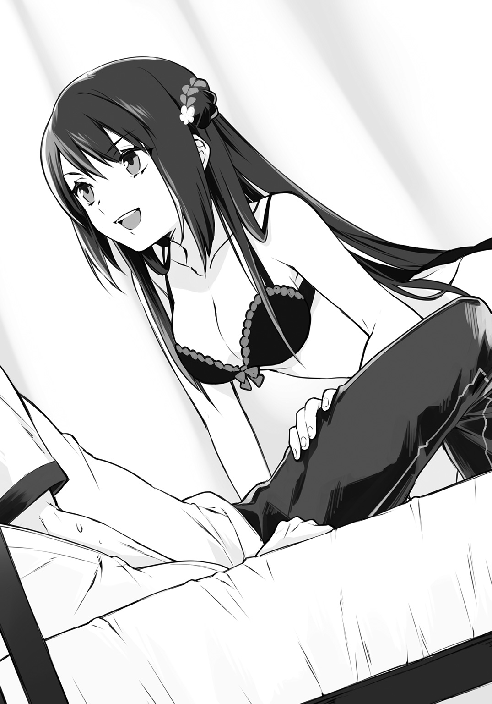
「たんこぶが出来たの？ いいわね、それ。触りたい。大丈夫よ安心して。痛くするから」
発言のおかしさにツッコミを入れることも出来ぬまま、沙耶香が馬乗りになるのを許してしまった。気がつけば俺の目と鼻の先、息のかかるほど近くに挑発的に揺れる胸元が迫っている。身じろぎするだけで触れてしまいそうで、俺は呼吸すらできなくなってしまった。沙耶香は勝ち誇ったような表情を浮かべ、ゆっくりと俺の後頭部へと腕を回して――
「ごめん希純、ミーティング長引いちゃってさ」
ノックもなしに保健室のドアが開き、菜々美が姿を現した。菜々美は俺たちの、誤解される以外にない状況を目にして、彫像の如く固まってしまう。
氷河期のような沈黙が落ちた。
わかっていたことではあるが、運も悪けりゃ間も悪い。タイミングが少しずれていたら、沙耶香の拷問じみた治療も受けずに済んだだろうに、よりによって今この場面を目撃されるとは。
そんな風に、どこか他人事で状況を分析していた俺は、おかげで逸早く我に返ることができた。俺は説得力など雀の肺活量ほどもないと知りながら、慌てて菜々美に訴える。
「ち、違う！ お前がいま想像してるようなことでは決してないから落ち着け！」
「違うの!? ここで着替えようとしてた来栖さんの下着姿を何らかのアクシデントでたまたま見ちゃって、動転して壁に頭を強くぶつけたところを助け起こされてるだけだと思ってたんだけど、違ったの!?」
「うわけっこう当たってた！ それだ！ その解釈でほぼ満点だ！」
「だって希純、さっき違うって言ったもん！」
「それに関してはゴメンとしか言いようがない！」
俺と菜々美がテンパッたやり取りを続けていると、沙耶香が脱ぎ捨てた体操着を手にし、胸元を隠した。さすがに悪戯が過ぎたと思ったのか、助け舟を出すように口を挟む。
「歌川さん、誤解です。希純くんと話している時に、私の体操着の中に蜂が入ってきて、驚いて脱いだところだったんです」
今は初冬ですよー！ 性癖以外はパーフェクトガールなのに、けっこう噓が下手ですね！
「えっ、蜂！ 刺されてない大丈夫だった!?」
お前もそんな噓に騙され――いや騙されてください！ 不自然さに気づくな！
「ええ。心配してくれてありがとう」
「そっかよかったぁ。えへへ、何か変な勘違いしちゃって、ちょっと恥ずかしいな」
よぉしいい子だ！ 君は純粋無垢にすくすくと育った！ だから胸にも栄養いったんだ！
安堵の表情を見せる菜々美だったが、すぐさまはたと気づき、ラクロス部で鍛えた健脚でベッドへと駆け寄ってきた。俺と沙耶香の間に割って入ると、両腕を大きく開いてブラインドとなり、俺を一喝する。
「ちょっと、いつまで見てるの！ 取り敢えずあっち向いて！」
「お、おう。わかってるよ」
少なからず後ろ髪を引かれながらも、俺はベッドの上で回れ右をした。
「来栖さん、今のうちに着替え......うわぁ。スタイルいいなぁ」
「そんなことないです。歌川さんほど豊かではないし」
「へ？ いやこんなの単なる脂肪の塊で――ひゃんっ！」
「すごい。おっきいですね」
「来栖さん、ちょっ、やめっ、んぁっ！」
背後でいったいどんなことが行われているのか。俺は振り返りたい衝動を抑えるため、保健室の壁に貼られた人体解剖図を、全神経を集中させて眺めるのだった――。
＊
閑寂としたすすき野で、進さんの太刀が夜気を切り裂いて跳ね上がった。斬られた浪人が錐揉み状態で地面に倒れるが、生まれたての子鹿のように両手足をプルプルさせながら立ち上がろうとする。
「......ま、まだだ。まだ終わらんよ。動け、動け、動いてよ。いま動かなかったら何にも......ぐはぁっ！」
パタリ、と。再び突っ伏し動かなくなる浪人。
「ぅおのれよくもぉっ！」
賭場の元締めが進さんに打ちかかる。一合、二合と太刀を合わせたのち、手に汗握る鍔迫り合い。互いに睨み合って跳び退ると、気合いの雄叫びを上げながら突進し、すれ違い様に凶刃を振るう。
一拍の空白。
進さんと元締めの頭上を、やけに大きな満月が彩っている。
やがてすすき野の静寂を破る、元締めの断末魔の叫び。
「うぎゃああぁっ、うあ、ああぁぁ、ひぎゃああぁぁ！ ......うああぁ！ ............うおぁぁっ！ ..................ああぁぁぁっ、やられたぁぁぁ！」
よろけながらカメラに向かい、一歩、二歩、三歩四歩五歩六歩近い近い近い汚い、どアップで白目を剝いて、ぱたりと事切れる元締め。斬られ役のこのウザさ――もとい、迫真の演技も『流しの用心棒』の魅力である。
悪が潰えた瞬間に拳を突き上げようとした俺だったが、先んじて菜々美が飛び上がった。
「きゃあ、進さんカッコイイ！ 希純、今の見た見た!? ズバッ、ズバァッ、だよ!?」
菜々美が殺陣を真似て腕を振るい、キャッキャッと飛び跳ねる。その度に揺れる胸元に抗い難い魔力を感じた俺は、理性を総動員して視線を右隣から左隣へと移した。するとそこでは、真剣な眼差しでテレビを見やる沙耶香が、ぶつぶつと独白している。
「進さんはどうやら古流剣術の素養もあるみたいね。浪人を切り捨てた際に見せたのは恐らく、現代剣術よりも低い姿勢をとる、三角矩の構え。となると、柳生心眼流か......」
いやはや、時代劇の楽しみ方というのも十人十色である。俺は意外な新発見に満足しつつ、進さんに敬意を払って組んでいた正座を崩すと、くまさんクッションの上で胡坐をかく。
俺と沙耶香がお邪魔しているここは、菜々美の私室である。今朝の約束通り、『流しの用心棒』を見る流れになったわけだが、本物の用心棒である沙耶香が俺の傍を離れるわけもない。そんなわけで、急遽二人でお邪魔しているのだ。
菜々美は幼少の頃と変わらずファンシーなものが好きらしく、部屋のいたるところに人形やらぬいぐるみやらが置かれている。いくら幼馴染とはいえ、女の子の部屋なんてそう訪れるものではない。物珍しさも手伝って、改めて見渡していると、菜々美がはたと気づいて言う。
「そ、そんなにじろじろ部屋見ないでよ。散らかってるし、恥ずかしい......」
「散らかってる？ いや、めちゃくちゃ綺麗じゃん」
「き、きれい？」
菜々美は頰を赤らめると、手近にあった大きなパンダのぬいぐるみを抱き締め、照れ隠しするように顔を埋めた。
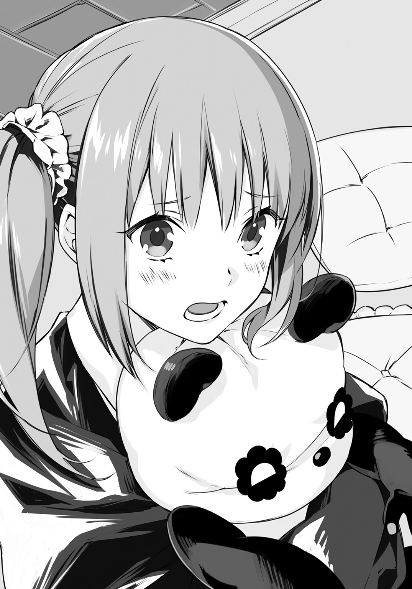
「......でも、あれでしょ？ 人形やぬいぐるみばっかあるし、子供っぽいとか思うでしょ？」
「別にそんなことはないけど。可愛い趣味なんじゃないか？」
「かわっ、かわいいって......」
パンダを抱き締める腕に力が込められ、ぬいぐるみの原形が変わっていく。
（おおぉ。バンダってくびれが出来ると気持ち悪いな）
そんなことを考えていると、菜々美がパンダの後頭部からチラリと顔を覗かせた。菜々美はエンドロールまでしっかりと視聴している沙耶香を窺うと、少し躊躇うような間を挟んだあと、恐る恐るといった様子で問いかける。
「あの......来栖さんはどうやって希純と知り合ったの？ 前からの知り合いみたいだけど、私は紹介されたこともないし」
できれば避けたい話題だったが、とうとう質問されてしまった。上手いこと出会いのシーンを捏造してくれよと、俺は祈るような気持ちで沙耶香を見やる。
沙耶香は『流しの用心棒』の次回予告が終わるのを待ってから、菜々美へと向き直った。その際に、任せておきなさいとばかりに、俺に目配せする。沙耶香は昔を懐かしむように、虚空に視線を馳せた。
「......あれはうだるように暑い夏の日でした。私は横断歩道を歩いていたのですけれど、夏の日差しにやられたのでしょうね。熱中症になってしまって」
うん、うん。悪くない滑り出しだ。
それでそれで？
「まるで雲の上でも歩いているみたいに、足元が覚束なくなっていた私は、赤信号に変わった横断歩道の中ほどでへたり込んでしまって。そこにすごいスピードでトラックが突っ込んできたんです」
うん、うん？
何かどっかで聞いたような話だな。
「トラックが目前に迫り、私は死を覚悟しました。でも間一髪のところで希純くんが飛び込んできて、私を抱えて安全な場所に運んでくれたんです」
いやこのエピソードって、間違いなく......。
「私はどうしてもお礼がしたくて、両親が仕事で不在の家に希純くんを招待しました。しばらく他愛もない話をしていたのだけれど、希純くんがそろそろおいとまするって言い出すから。私は勇気を振り絞って彼を引き止めて、おもむろにブラウスのボタンを外して――」
「ちょっと待ったー！ それ俺が京也に話したエピソードじゃねえか！ いったいどこで聞いてたんだ!?」
「私があなたの傍を離れるわけないじゃない。きちんと気配を殺して追走していたわ」
「まるで忍者ですね!? というか、あの話って襲われる直前にしてたんだけど!? それってつまり、もっと早くに助けに入れたってことじゃないの!?」
俺のその言葉を聞いた沙耶香は、それはもう、お釈迦様でもありがたがるような、満足げな笑みを浮かべてみせた。
「希純くんがあまりにもいい表情で逃げ回っていたから、つい......」
「つい!? そんな理由で俺は死にかけたの!?」
「あなたは死なないわ。私が護るもの」
「このタイミングで名言ぶっ込んでくるんじゃねーよ！ いま俺は怒ってんだよ!? わかってんの!?」
興奮でしばし我を忘れていた俺だったが、今の状況をハッと思い出し、慌てて口を噤んだ。そういえば、沙耶香との関係を菜々美に説明している最中だった。沙耶香が俺の用心棒だということは、細心の注意を払って秘匿しなければならないというのに。
菜々美の様子をそろりと窺ってみると、彼女は顔を真っ赤にした状態で、目をくるくるさせながら、熱に浮かされたようにうわ言を繰り返している。
「ブラウス、ボタン、外して、ブラウス、ボタン......」
「よっし聞いてない！ じゃなくて、今のエピソードは噓だから、信じるな！」
「......え？ ウソ？」
菜々美は潤んだ瞳で、縋るように聞いてきた。何だか罪悪感を覚えつつも、更なる噓で塗り固める。
「ええと、前半だけ本当のことだ。たまたま、偶然、沙耶香のピンチを助けただけ。それで仲良くなったんだよ。なっ？」
話を合わせろとばかりに、俺は沙耶香に目顔で合図を送った。ファントムに襲われてもすぐさま助けなかった件をこれでチャラにするつもりか、沙耶香はあっさりと俺の言に追従する。
「ええ。希純くんの言う通り、彼は私の命の恩人なんです」
菜々美は俺と沙耶香を交互に見やったあと、なぜか泣きそうになっていた顔をパンダの後頭部でごしごしと拭ってリセット。普段通りの明るい笑顔に戻ると、晴れやかな声で告げる。
「そうだったんだぁ。そういうことなら早く言ってくれればよかったのに。根も葉もない噂、けっこう流れてたんだよ？ 京也くんなんか、希純が来栖さんの弱味を握っているに違いない、俺が魔の手から救い出すんだーって、張り切ってたんだから」
「あぁ、あいつはアホだからな。放っとけばいい」
「そういうわけにもいかないじゃない。いいよ。クラスのみんなには、わたしの方から上手く説明しとくから。希純は運が超絶に悪いから、また変な誤解とか受けそうだし」
「あ、それ助かる。サンキュー」
さすが菜々美だ。俺の不遇をよく理解してくれているし、面倒見がいい。これで質問攻めからは逃れられると安堵していると、菜々美は傍に置いてあったリモコンを手にして言った。
「この『流しの用心棒』って、すっごく面白いね！ 初めて時代劇を最初から最後まで見たよ」
俺が力強く肯定し、進さんの魅力を熱く語り出す前に、沙耶香が同意するように深く頷いた。
「ええ、本当に。ストーリーは王道で安心して見れますし、殺陣シーンも迫力がありますね。残念なのは、もう何十話も進んでいるから、初期設定がいまいちわからなかったところでしょうか。せめてあと数話見れば、その辺も何となくわかるのでしょうけれど」
「あっ、それじゃあ何話か遡って見てみる？ 十話くらいなら録り溜めてるよー？ どうせ希純は運悪く見逃すことあるだろうと思って、毎週録画予約を――」
リモコン片手にそこまで言ったところで、菜々美は自分の失言に気づいたらしく、ピタリと動きを止めた。菜々美はそのまましばらく微動だにしなかったが、やがて彼女の親指だけがスローで動き出す。そして、これさえ押せば今の発言は口の中に戻ると確信しているかのように、巻き戻しボタンをたしたしたしっと連打し始めた。
俺は空気を読まずに土下座する。
「このご恩は一生忘れません」
菜々美が弾かれたように、ガバッと俺の方を向いた。まるで野いちごの成長過程を早回しで見ているかのように、彼女の顔が見る間に赤く染まっていく。
「ち、違っ！ たまたまだから！ 十話ぐらい連続でたまたま録画してただけだから！」
「もうそれ必然だろうありがとうございます」
「だから違うのにぃ......」
菜々美は拗ねたように呟くと、ふいっとテレビ画面に向き直る。そのままいじけた様子でリモコンを操作し、何週間か前の『流しの用心棒』を再生し始めた。
沙耶香も菜々美も、俺の予想以上にハマッたようで、進さんの勇姿を食い入るようにして見守る。俺はその様子に満足すると、トイレに立つことにした。進さんが戦っている時に中座するなど本来なら考えられないことだが、今回のは一度見た放送分だし、まあ良しとしよう。
「ちょっとトイレ借りるな」
「うん。場所わかるよね？」
「ああ。昔はよく遊びに来てたしな」
もしかすると沙耶香もついていくと言い出すかもしれないと思ったが、沙耶香は進さんの剣術を目に焼きつけるのに夢中になっている様子だった。まあ家の中で危険も何もないだろうし、外には『番犬』もいる。トイレくらいは問題なしとしているのだろう。
菜々美の自宅は一般的な二階建て住宅であり、菜々美の私室は二階の角にある。俺は部屋を出ると一階に下り、トイレに入った。用を足しながら、目の前にある小窓の隙間から外を眺めると、そこには仕事熱心な『番犬』の姿が見て取れる。犯人逮捕のため、覆面パトカーの中で俺のことを張っている、万寿夫と隼人である。
何とはなしにそのまま二人の方に視線をやっていると、やがてパトカーのドアが開き、隼人が姿を現し歩き出した。慌てた様子もないし、何か不測の事態が起きたというわけでもなさそうだ。俺と同じでトイレ休憩か、あるいは飲み物でも買いに行くのだろう。
「おっ、チャンス」
俺は急いで用を足し終えると、隼人を追って家の勝手口の方へと向かった。ドアを開けて小さな裏庭に出ると、生垣越しに隼人の姿を捜す。
隼人はすぐ傍の自販機でジュースを買っているところだった。表の方に止めてある覆面パトカーから死角になっていることを確かめた俺は、隼人に向かって声をかけた。
「宇山刑事、宇山刑事」
取り出し口からジュースを拾い上げていた隼人は、俺の声に振り返ると、目を丸くした。
「向くん、そんなところで何してるんだい。君は狙われてるんだから一人になっちゃ駄目だ。早く中に入って」
「その前に一つ聞きたいことがあるんです。室田刑事、何か沙耶香――というか、沙耶香のおじいさん恨んでるみたいな風でしたけど、何かあったんですか？」
その質問を耳にした隼人は、慌てたように生垣のすぐ傍までやってきた。覆面パトカーの止めてある方を気にしながら、潜めた声で言う。
「そういったプライベートな質問には僕からは答えられないよ。わかるだろう？」
「そこを何とか。さっきは宇山刑事が割って入ってくれたから何とか収まりましたけど、あのままだったら沙耶香に銃口が向いてもおかしくない状況だったんですよ？ 沙耶香は俺の用心棒だし、まったくの無関係でもないでしょう？」
「それはそうなんだが......」
「頼みますよ。刑事さんたちは最初、俺の話をまったく信じなかったじゃないですか。借りを返すと思って」
少し卑怯な言い方だったが、効果はてきめんだった。隼人は苦虫を嚙み潰したような顔になると、渋々といった態で口を開く。
「室田さんは以前、『死神』というコードネームを持つ殺し屋を追っていたことがあるんだ」
「殺し屋？ 俺を狙ってるファントムみたいな奴ですか？」
「狙われている向くんにとっては何の慰めにもならないかもしれないが、正直言って格が違うよ。年齢不詳、性別不明。誰もその姿を見たことがないとされる死神は、国際警察もＳ級犯罪者として警戒する、プロ中のプロだ。そんな危険人物の情報が、ひょんなことからウチの署に入ってきてね。誰もが腰が引けるなか、室田さんが火中の栗を拾う形で捜査に当たることになったんだが......」
隼人はそこまで話すと、沈鬱な表情を浮かべて押し黙ってしまった。俺が辛抱強く次の言葉を待っていると、それに気づいた隼人が、溜め息混じりに続ける。
「室田さんはスッポンのように粘り強く捜査する、昔気質の刑事だからね。どうやら死神が容認する一線を越えてしまったらしくて、室田さんに直接警告が来たんだよ。『これ以上捜査を続けるようなら、お前は大切なものを失うことになる』ってね」
俺はゴクリと唾を飲み込んだ。まるで映画の世界の出来事だ。フィクションなら死亡フラグだが、現実はどうだったのか。俺は恐る恐る先を促す。
「それで、どうなったんです？ 室田刑事はピンピンしてるし、捜査止めたんですよね？」
「まさか。警告が逆に室田さんの刑事魂に火をつけたみたいでね。僕らが止めるのも聞かず、捜査を続行したんだ。ただ、室田さんには奥さんの忘れ形見である、大事な一人娘がいてね。娘さんを危険に晒すことだけは避けたいと、上司に直談判して、優秀なＳＰつきの、安全な隠れ家が提供されることがほぼ決まっていたんだ。けれど......そこに横槍を入れてきたのが、来栖源之助なんだよ」
「沙耶香のお祖父さんが？ いったい何をしたんです？」
俺は沙耶香と万寿夫が睨み合っていた場面を思い返した。沙耶香に源之助の面影を見て、拳銃に手をかけた万寿夫。彼と源之助には、いったいどれほどの因縁があるというのか。
隼人は再度、覆面パトカーの方を窺ったあと、万寿夫の気持ちを代弁するように吐き捨てる。
「来栖源之助は、死神からの警護実績があれば、運営する警備会社にとって最大のＰＲになると考えたらしい。警察の上層部に裏から手を回して、警護を半ば強引にＭＵＳＡＳＨＩに委譲させたんだ」
結果は、聞くまでもないことのように思えた。
隼人は一つ頷き、深い苦悩が刻まれた顔でぽつりと呟く。
「室田さんの大切なもの、一人娘の咲さんは、完璧な警備体制を敷かれたはずの自宅の浴槽で、何者かによって溺死させられたよ。警護についていたＭＵＳＡＳＨＩの警備員は、誰一人として異変に気づかなかったそうだ」
「そんな......」
俺が言葉を失って立ち尽くしていると、隼人は途方に暮れたように、自分の左手へと視線を落とした。どうやら既婚者らしく、薬指には結婚指輪が光っている。
隼人は訥々と言葉を紡いだ。
「......僕にだって大切に思う者はいる。君だってそうだろう？ それなのに、来栖源之助の金儲けのために、室田さんは最愛の家族を失ったんだ。室田さんが来栖源之助に、そして祖父と同じく、自らの欲のために君の警護を続けようとする、来栖沙耶香に憎しみを募らせるのは当然だと僕は思うね」
何と言い返せばいいのか、そもそも反論すべきなのかもわからず、俺はただギュッと拳を握り締めた。隼人はそんな俺を気遣うように、努めて明るく言う。
「少し意地悪な言い方だったかな。あまり持ち場を離れていると室田さんの大目玉食らうから、僕はもう戻るよ。向くんも早く家の中に入った方がいい。あっ、これ飲むかい？」
隼人は手にしていたジュースを差し出す。缶には『最高に臭い！ くさやジュース』とあった。この前の納豆ジュースといい、凄いチョイスである。
俺が固辞すると、隼人は残念そうな顔をして覆面パトカーの方へと戻っていった。俺はその後ろ姿を見送ったあと、家の中に戻ろうと踵を返す。
「あっ......」
いったいいつからそこにいたのか。勝手口に背を預ける形で、沙耶香が佇んでいた。俺は何だか後ろめたい気持ちになり、誤魔化すように問いかける。
「どうしたんだよ、こんなところで。『流しの用心棒』はもういいのか？」
「アレもなかなか興味深いけれど、もっと面白いものが聞けたからいいわ」
「うっ。やっぱ聞いてたのか、今の」
「まったく。火の粉を払う役目のボディガードが、自ら火薬庫になっていたら世話ないわね」
「そんなこと言わなくたっていいじゃないか。室田刑事が本当に目の敵にしてるのは、沙耶香のお祖父さんであって、沙耶香自身じゃないだろ」
「逆恨みだろうがなんだろうが、ボディガード自身が敵視されることは許されないわ。護衛に向けられた刃が警護対象者を巻き込むようなことが起きれば笑い話にもならない。そんな事態はどんな犠牲を払ってでも避けなければいけないの」
沙耶香はそう言うと、覆面パトカーが止めてある方を見やり、ぽつりと呟いた。
「ファントムだけで手一杯なんだから、変な気を起こさなければいいけれど」
そのとき、階段の方から菜々美のリズミカルな足音が聞こえてきた。菜々美はトイレの方に回ったあと、俺たちを探して勝手口の方へとやってきて、きょとんとした様子で小首を傾げる。
「あれ？ 二人とも何でこんなとこにいるの？ トイレの場所わからなかった？」
「ええと、あんまり長居しても何だしさ。そろそろ帰ろうかなと思って」
「そっち勝手口だけど？」
「ああ、そうだな。ちょっと間違えた」
俺は笑って誤魔化しながら玄関の方へと足を向けた。沙耶香は視聴途中の『流しの用心棒』に後ろ髪を引かれているのか、二階を気にしつつも俺に続く。
玄関で靴を履いていると、菜々美がどこか慎重な口振りで、そっと切り出した。
「もう少ししたらパパもママも帰ってくるから、どうせなら夕飯食べていけばいいのに。前はよくうちで食べてたでしょ？ その......もしかしたら、まだあの時のこと気にしてたりする？ わたしはもちろんだけど、パパもママも、もう全然気にしてないんだよ？」
思わず靴を履く動きが止まった。同時に脳裏にフラッシュバックする、回転灯の鮮やかで不吉な赤。
異変に気づいたのか、隣でブーツの紐を結んでいた沙耶香が、眉をひそめて俺の顔を覗き込んできた。俺は瞼を閉じて一つ深呼吸すると、平静を装って言う。
「そんなんじゃないよ。暗くなるまでに沙耶香を送ってやんなきゃいけないだろ」
「あぁ、そっか。そうだね」
しゅんとなって俯く菜々美は、まるで捨てられた子犬みたいで何とも心許ない。俺は玄関を出る前にぽりぽりと頭を搔くと、別れの挨拶代わりに言った。
「今日はありがとな。それと......また見に来るから、これからも録画頼む」
菜々美は俺の台詞にパッと顔を輝かせると、胸をドンと叩いて弾んだ声で応じる。
「うん、任せといて！」
そのやりとりを聞いていた沙耶香が、横から話に入ってくる。
「歌川さん。その時は私もまたお邪魔していいですか？ 初めて見ましたけれど、とても面白い番組でしたから」
「うん、もちろん！ 同じものを好きになって、同じ話題で盛り上がれるって素敵だよね。今度は何か美味しいお茶でも用意しておくから、ぜひまた来てね、来栖さ――」
途中まで言いかけたところで、菜々美はふと言葉を切った。そして、初めて目にする魚に怯え、おっかなびっくり前足を伸ばす猫のように、おずおずと続ける。
「その......さっちゃんも、ぜひまた遊びに来てね？」
沙耶香は虚を衝かれたように目を丸くした。そういえば、沙耶香は今日転校してきたばかりだし、その完璧すぎるスペックに、誰もが腫れ物でも触るようにして彼女と接していたように思う。あの京也でさえ、沙耶香にあだ名をつけて気軽に呼びかけたりはしていないのだ。
フライングしちゃったかなと、心細そうな表情を浮かべる菜々美を前にして、沙耶香はチラリと俺の方を窺ってくる。
うん？ 何だろね。
気のせいに違いないが、いま一瞬、お手とおかわりを同時に要求された子犬じみた、〝どうしよう？〟みたいな表情が浮かんだような。
俺が何のリアクションも取らないでいると、沙耶香は少しだけ恨めしげな眼差しを寄越してきたあと、一つ吐息を零した。そして、菜々美に対してにっこりと微笑みかけ、いいとこのお嬢様の雰囲気を十全に発しながら、如才なく別れの挨拶を交わす。
「よかった。それじゃあお言葉に甘えて、また遊びに来ますね。今日は本当にありがとう。おやすみなさい......菜々美さん」
沙耶香の性格上、菜々美のようにくだけた表現で『なっちゃん』とか『ナナみん』とは呼べなかったのだろう。それでも菜々美は大満足のようで、喜色を浮かべて手を振る。
「うん、おやすみ！ 希純もまた明日、学校でね！」
まるで春の日差しのような温かい笑顔に見送られ、俺たちは菜々美の家を後にし――
そして。
ファミレスの夜勤に入るため、つい今しがたまで寝てました感を丸出しの、ハワイの曇り空めいた母親の寝ぼけ眼に迎えられて、俺は自宅であるマンションの一室に帰り着いた。
俺の母親である向緋香里は、引きつった笑みを浮かべる俺と、その隣に寄り添うどこぞの女神めいた沙耶香を見比べたあと、開口一番こう言った。
「あんたらもうヤッたの？」
＊
宵闇の満ちた世界に、変換された甲高い声が陰々と響く。
「......ターゲットノ利用価値ハ理解シテイル。タダ、生ケ捕リトイウノガ、ナカナカ難シイ」
仮面の横に添えられたスマホ。闇に満ちた斜面に蹲るようにして影を落としているファントムは、通話相手の応答を黙然と聞き、一つ頷いた。
「ワカッテイル。問題ナノハ、生餌ノ活キガ良スギルコト。下手ニ抵抗サレレバ不測ノ事態モ起キカネナイ」
夜風にケープがはためく。犬の遠吠えが長く尾を引く。
やがてファントムは天を仰いだ。オリオン座が冬の大気で瞬いている。
「要望ニハ応エル。生餌ヲ釣ル餌ヲ撒クコトニスル」
通話を終えたファントムが立ち上がる。パステルカラーの住宅の瓦屋根の上。ファントムは眼下に望める明かりの灯った窓を、仮面の奥からジッと見詰める。
ファントムの視線の先にあるのは。
自室でくつろぐ、歌川菜々美の無防備な姿だった。
第３話
『もしもトリニダード・スコーピオン・ブッチ・テイラーと
キャロライナ・リーパーを活用したパンジステークを作ったら。』
『タージ・マハルが見えた』
それが、沙耶香お手製のカレーを食した直後、緋香里が零した第一声だった。そこから緋香里は、ものすごい勢いで、黙々と、ただ黙々とカレーを胃の中へと流し込み、お代わりのためにカレー皿を突き出して宣言する。
「カレーは飲み物でした！ もう一杯！」
「お口に合ってよかったです。いっぱい作りましたから、たくさん召し上がってくださいね？」
沙耶香はそう言って皿を受け取ると、かいがいしく山盛りのカレーをよそっていく。
緋香里はその間に、ニヤニヤとした嫌らしい目付きを俺へと寄越し、茶化すように言った。
「まさか希純がこんなに美人な彼女を連れてくるなんてねぇ。菜々美ちゃんは知ってるの？」
「だからそんなんじゃないって言ってるだろ。つか何で菜々美の名前が出てくんだよ」
「はいはい。彼女じゃなくて、止むにやまれぬ事情で家を飛び出してきた家出少女ね。んで、生活サイクルの違いから――別にサボってるわけでも何でもなく――あまり家事をしないあたしの代わりに労働力を提供するから、空いてる部屋に何日か泊めてほしいと。そういう話ね。......ところでこの話、菜々美ちゃんの耳には入れてあるの？」
「だから何で菜々美が関係するんだって。というかさ、もちろん駄目だよな。そうだよな。沙耶香もお袋の許可を貰えなかったら諦めるって言ってるし、ここは大人の見識でもって、一般的な結論を出そう。な？ な？」
俺は意図を込めたスルーパスを、針の穴を通す正確さで放った。どうぞシュートしてください決めてくださいとばかりの、完璧なお膳立て。
しかしそこに、沙耶香がカレーを用いたインターセプトを仕掛ける。
「はい、おかわりどうぞ。それにしても、緋香里さんのお口に合って、本当に良かったです。時間が許せば、ビーフストロガノフや、豚肉のソテープロヴァンス風や、ローストチキンのロースト根菜添えとかも作れますよ。どれもとても美味しいので、機会があればぜひ召し上がっていただきたいんですけど......」
ちらり、と上目遣いになる沙耶香。
じゅるり、と涎を拭う緋香里。
「うん、まあ三食――じゃなくて、一泊するくらいならいいんじゃない？ ご自宅にはあたしの方から電話しておくし」
いま三食って言った！ 一泊を食べられる料理換算で言った！
思春期なのに実母がカレーで餌付けされる瞬間を目の当たりにする俺の不運!!
思わず泣きながらこの場を去り、自室に引きこもりたい衝動に駆られるが、俺はすんでのところで踏み止まった。高校生活は既に、沙耶香によってめちゃくちゃにされているのだ。自宅にまで魔の手が伸びるのを許せば、俺の心安らぐ空間はどこにもなくなってしまうではないか。
俺はテーブルをドンと叩き、毅然と抗議する。
「そんな簡単に決めていいのか！ ここには俺も住んでるんだし、公序良俗に反するようなことがあったらどうするんだ！」
「あぁん？ あんたにそんな度胸あったら菜々美ちゃんはとっくにウチの嫁になってるだろうが親の決定に口を挟むなこのっ、玉無しヘタレ童貞がぁ!!」
「えっ、思った以上にひどい言われよう......」
心がへし折られる音を聞いた俺は、それ以上の反論ができなくなってしまった。すると緋香里は、掛け時計に目をやって、「やべっ」と声を発して立ち上がる。
「あたしそろそろ出かけなくちゃなんないから。家の細々としたことは馬鹿息子に聞いてちょうだい。希純、沙耶香ちゃんに失礼なことしたら、この家から追い出すからね」
「俺、実の息子なんすけど......」
そんな抗議の言葉には耳も貸さず、緋香里はリビングにある姿見の前で、手櫛で髪をささっと整えていく。何とも大雑把な身支度だが、女手一つで俺を育ててきた緋香里にとっては、出勤というより、戦闘準備といった感覚なのかもしれない。
「希純ー、そこのバッグ取ってー」
俺がのろくさと立ち上がっているうちに、沙耶香が外出用のバッグを手にし、緋香里のもとへと駆け寄った。沙耶香はバッグを差し出しながら、深々とお辞儀をして言う。
「緋香里さん、お許しをいただいてありがとうございます」
「いいっていいって。お礼を言うのはこっちだしさ」
「え？ それはどういう意味です？」
緋香里はバッグを受け取ると、つと俺の方へ視線を向けた。その瞳に、普段は見せない慈愛の色を見て取り、俺は戸惑う。
緋香里は独白するように呟いた。
「......あいつはさ、不運な上に不器用で、他人を極力寄せつけないようにしてるとこあるから。多少強引でも、踏み込んできてくれる子がいて助かったって、あたしはそう思う」
「他人を寄せつけない？ クラスのみんなとも仲がいいし、そんな風には見えませんけど......」
沙耶香は俺の方を振り返る。その顔には演技ではない、困惑の表情が窺えた。
物問いげに見詰められたって、俺だって何のことを言われてるのか、正直ピンと来ない。どう反応すればいいのか決めかねていると、緋香里が不意に沙耶香の頭に手をやり、乱暴にぐしゃぐしゃっと撫でる。
「えっ、なっ......」
「あはは。まあそういうことだから、希純と仲良くしてやってよ、沙耶香ちゃん。それじゃあたしはもう出るから。あっ、見送りはいいよー。そんじゃねー」
緋香里はそう言うと、一陣の風のように出勤していった。後に残されたのは、乱れた髪を両手で押さえつけている沙耶香と、呆然と立ち尽くす俺だけだ。
免疫力の違いだろう。逸早く我に返った俺は、溜め息混じりに肉親の非礼を詫びる。
「いや、何か悪いな。うちのお袋パワフルだからビックリしたろ」
「確かに、少し驚いたわね......」
少しと言っておきながら、沙耶香はまるで狐につままれたようにポカンとしている。そんな無防備な姿は初めて目にするので、俺は思わずプッと噴き出した。沙耶香が不愉快そうに柳眉をしかめる。
「ちょっと、なに笑ってるの」
「いや、何でもない。それより飯食おう。お袋の食いっぷりに呆れてたから、まだ一口も食べてないし」
俺が笑いを嚙み殺しながら座り直すと、沙耶香も渋々といった様子で椅子に腰を下ろした。
一瞬でインドの情景が思い浮かぶというカレーとは、果たしてどれほど美味なのか。複雑だが、空腹感を呼び起こすスパイス特有の香りに期待を膨らませながら、俺は両手を合わせる。
「いただきますっ」
スプーン山盛りのカレーを口の中に運んだ途端、タージ・マハルが見えた。
けれど次の瞬間、唐辛子いっぱいの籠を頭の上に乗せた、インド人の大集団がそのタージ・マハルから出てくる。
「ッ!?」
俺は反射的に水の入ったコップに手を伸ばすが、指先が触れる寸前、飛燕の速度でコップを奪い去られてしまった。尋常じゃない量の汗が噴き出し始めた俺に向かい、沙耶香は手にしているコップを弄びながら言う。
「私のことを笑うなんて、まだ躾が必要ね。ところで、私の手料理の味はどう？ 希純くんの分だけ、特別な隠し味を使っているのだけれど」
「おまっ、これっ、何を、」
「唐辛子の一種、ハバネロって、知ってる？」
「そうかキサマ、」
「それじゃあ、ハバネロの辛さを上回る、トリニダード・スコーピオン・ブッチ・テイラーって、知ってる？」
「そんなよくわからんものを、」
「それ以上の、辛さ世界一でギネス記録にもなった、キャロライナ・リーパーって、知ってる？」
「それ入れたならひと思いにそう言って！ 段階踏まれると辛さ理解しちゃうから！ 辛さ倍増しちゃうから！」
俺の当然の抗議に対し、沙耶香はうっとりとした表情を浮かべると、悪びれることもなくこう応じた。
「ええ。知ってる」
＊
まだ辛い。
唇が痛い。
俺はようやく一人になれた自室で、ベッドでごろ寝しながら、氷囊で唇を冷やすという人生初の体験をしていた。ここまで甚大なダメージを負ってしまったのは、何だかんだで沙耶香の作った激辛カレーを、完食してしまったからである。
別に強制されたわけではない。それはまあ、「せっかく作ったのに残さないわよね？」という無言のプレッシャーはあったものの、無視できないほどのものではなかった。本当に抗えなかったのは、沙耶香のカレーが超絶に美味だったからだ。
そう。辛かったけど、美味かった。毎日カレーを食すインド人の気持ちが理解できてしまうほどに。激辛だとわかっていても、気づけばスプーンを口に運んでいるという単純作業を続けるうちに、沙耶香は実はスタンド使いで、本名はトニオ・トラサルディーというのではと勘繰ってしまうほどに。
かくして、料理の腕も天下一品だということを証明してみせた沙耶香は、今は労働力を提供するという緋香里との約束を律儀に守り、台所で後片付けに奮闘している。
俺は氷囊を口から離すと、ほぅと吐息して呟く。
「まったく。相変わらずのパーフェクトガールだよな。あれでＳっ気さえなけりゃあ......」
無意識のうちに口を衝いて出てきた言葉に、俺は面食らう。
なけりゃあ、何だというのだ？ いま何と続ける気だったんだ？
俺は腕を組んでウーンと唸るが、あまり深く考えると精神衛生上よろしくないような気もする。思考を放棄してテレビでも見ようかと思ったとき、不意にスマホから着信音が流れてきた。手に取ってみると菜々美からだ。俺は何の気なしに電話に出る。
「おう、どうした？ 明日の宿題とかなら俺に聞いても無駄だぞ」
『心配シナクトモ、ソンナ用件ジャナイ』
俺はベッドから跳ね起きた。ボイスチェンジャーで変換されているその声は、間違いなくファントムのものだ。
「何でお前が菜々美のスマホを......」
『落チ着ケ。私ノ言ウ通リニ動ケバ、彼女ノ命ハ保証シヨウ』
俺は絶句した。最悪の事態が起こったことを痛感し、身体が小刻みに震えだす。
ファントムはそんな俺の動揺など意に介さず、淡々と告げる。
『今ハ自宅ダナ？ 誰ニモ気取ラレルコトナク、一人デ廃工場ニ来イ。私ノ仕事ヲ目撃シタ、アノ廃工場ダ』
「待て、菜々美は無事なん――」
『必ズ一人デダ』
そこで通話は一方的に切られた。俺はすぐさまかけ直すが、向こうが電源を落としたらしく、電話は繫がらない。
「噓だろ。菜々美が......」
どうすればいいかわからなかった。自身の安全さえ確保していれば、そのうち警察がファントムを捕まえてくれると、安直にそう考えていた。周りの人間が俺のせいで割を食う事態に発展するなんて、想像すらしていなかった。
（とにかく、沙耶香に相談しないと......）
俺はベッドから立ち上がるが、ドアノブに手をかける寸前、ファントムの念押しの声がふと脳裏を過ぎる。
〝必ズ一人デダ〟
沙耶香は俺のボディガードだ。事情を話しても、俺の身の安全を優先して、廃工場に近付くことすら許してくれないかもしれない。いや、きっとそうなるであろうことを俺は確信する。今日一日だけでも、充分にわかったじゃないか。沙耶香はプロフェッショナルに徹している。それはまあ、Ｓっ気が度々顔を覗かせて、窮地をしばらく放置するという場面もあった。けれどそれは、本当に危なくなった時には必ず助けに入る、救うことが出来るという、ギリギリの死線をすぐ傍で見極めていたからこその行動だ。ファントムの要求通り、たった一人で虎穴に入ろうとすれば、沙耶香は黙ってはいまい。
（沙耶香にはどこか近くで身を潜めてもらっといて......いや、駄目だ。見つかった時のリスクが大き過ぎる）
最善策は何だ？
そんなものが存在するのか？
ミラーハウスの中に迷い込んでしまったように、どこを向いても懊悩する自分しか見出せない。眩暈すら覚えて立ち尽くしていると、部屋にノック音が響き、ドアが開いた。
「希純くん、今ちょうど――え？ どうしたの、こんなところに突っ立って」
沙耶香はドアの前で棒立ちしている俺を見て、虚を衝かれたように目をぱちくりさせる。
――助けてくれ。
思わず零れ落ちそうになったその言葉を、俺は強い意志で飲み下した。
俺は『斗南の一人』、つまりは天下に並ぶ者がいないほど、破滅的に、神憑って、とことん運が悪い。
それを自覚しているからこそ、俺はけっこう諦めが早い。運の悪さはどうしようもないからと、他人の手を借りることも、必要な手段としてあっさり割り切れたりする。
けれど。
俺の、唯一ともいえる誇りが。幼少の頃からの、絶対に曲げられない信念が。沙耶香に今の時点で助けを求めることを、否と断じた。
怪訝そうな表情を見せる沙耶香に、俺は極力平静を装って言う。
「いや、ちょうど飲み物を取りに行こうとしてたんだよ。俺に何か用？」
「お風呂が沸いたから伝えに来たの。ファントムから逃げ回ったから汗かいてるでしょう？」
「ああ、サンキュ。でも今は......」
そこでふと閃くものがあった。沙耶香に助けを求めない以上、どうやって彼女に気づかれず廃工場に向かうかが課題となるわけだが、お風呂というのは使える。俺は勢い込んで言った。
「俺は後でいいから、先に入れば。沙耶香だって汗かいてるだろ」
「それはそうだけれど、表向きは居候の身分だから。一番風呂をもらうなんて図々しい真似はしないわ。私は希純くんの後に入るから、お先にどうぞ」
「そんなこと気にすんなって。危ないところを助けてもらったし、お礼だと思ってさ」
「お礼？ 菜々美さんの部屋では、もっと早く助けられたはずだって、怒っていなかったかしら？ いったいどういった風の吹き回し？ それとも、何か企んでるの？」
「いや、何も企んでなんかないって！ 本当だって！」
「ふぅん......。まあいいわ。それならやっぱり希純くんが先に入ってちょうだい。台所のシンク周りが汚れていたから、そこの掃除をしてから入るわ」
これ以上食い下がれば、さすがに裏があると勘づかれてしまうだろう。俺の後に入るという沙耶香の言葉に賭け、渋々ながらも頷いた。
＊
（なに呑気に風呂なんか入ってんだよ、俺は......っ！）
そんなことを思いつつ、俺はボディソープを馬鹿みたいにつけた泡塗れのタオルで、身体を乱暴に洗っていく。
本当ならば、シャワーを頭から被り、入浴した体裁だけ整えて出ていきたいところだ。しかし、そんなことをすれば、沙耶香の疑念を確信に変えてしまう可能性が高い。身体と頭を洗っても、急げば十分少々で出られるのだ。取り敢えずそうやって入浴を済ませ、いつもカラスの行水だから早いんだ、今から入ればまだお湯も温かいぞと、沙耶香がすぐお風呂に入るよう仕向ければいい。
（沙耶香が入浴しているうちに外に出ればこっちのもんだ。刑事さんたちはマンションの玄関を張ってるみたいだし、非常階段使えば問題ないだろ）
一人で廃工場へ向かうためのシミュレーションをしつつ、シャンプーを頭にぶっかけてゴシゴシと洗いだした時だ。脱衣所の方で人の気配がし、次いで沙耶香の声が響く。
「バスタオル、ここに置くわね？」
「ああ、悪い。もうすぐ出るから」
「なに言ってるの。さっき入ったばかりじゃない。きちんと温まらないと風邪ひくわよ」
「お袋みたいなことを――あぁいや。うちのお袋だったら、後が閊えてんだからさっさと出てこいってガラス戸を蹴り始めるな」
新鮮な対応だなと少し感動していた俺だったが、やがてあることに気づいて小首を傾げた。沙耶香の気配が脱衣所の方からなかなか消えないのだ。すりガラス越しに伝わってくるのは、脱衣所から聞こえてくる衣擦れの音――。
不審に思う間もあればこそ、ガラス戸が唐突に開く。
「へ？」
肩越しに振り返ると、そこにはミルク色の肌を惜しげもなく晒す沙耶香が佇んでいた。
いや、さすがに全てを露にしているわけではない。左腕で胸元を押さえ、そこから垂らしたタオルで太ももの付け根あたりまでを覆ってはいる。しかし、艶やかな乳房は溢れるようにして彼女の手から零れているし、引き締まったウエスト、そして張りのあるヒップラインは、目隠しには明らかに面積が足りていないタオルの横からばっちりと覗いている。
いったいどれくらいの間、阿呆のように口を開け、沙耶香の身体を不躾に眺めていただろうか。沙耶香が後ろ手にガラス戸を閉める音で、俺はようやく我に返る。
そこからの俺はＦ１のピットクルーにも負けない迅速さで動いた。あっち向いてホイの世界記録に挑戦するような高速で前に向き直り、泡まみれのため見られてはいないと思いつつも、手近にある洗面器で大事な部分を隠す。そして、頭のてっぺんから絞り出すような声で叫んだ。
「キャ――――――ッ！ もうお婿に行けない！」
「ふふっ。そんな声でも鳴けるのね」
「余裕あるなコイツ!? ちょっ、ななな、なに入ってきてんだよ!?」
「どうしてそんなことを聞くの？ さっきも言ったじゃない。『私は後から入るから、お先にどうぞ』って。予告通り、後から入ってきただけでしょう？」
「あれってそういう意味!? 斬新！」
沙耶香が俺の背後へ迫るのが感じられた。台所仕事で冷えてしまったのだろう。ひんやりとした彼女の右手が俺の肩口にそっと触れる。沙耶香は俺の耳元で、囁くように告げた。
「誤解しないでね。これも警護の一環よ。私の入浴中に、ファントムが音もなく希純くんを襲撃したら、対応できないでしょう？」
「だ、だからって、一緒に入るかフツー!?」
「あら。希純くんは私との混浴、そんなに嫌なの？」
甘ったるく妖艶な声だが、そこには隠しきれぬ悦楽の響きが宿っている。沙耶香の悪癖が出て、俺をからかって喜んでいるのだろう。俺の肩口に添えられていた沙耶香の右手が、焦らすようにゆっくりと首筋、そして胸板へと移動してくる。それに伴い、沙耶香の身体が肉薄してくるのが察せられた。そして――
ふにっ。
俺の背中に、マシュマロのように柔軟で、けれど滑らかな弾力のあるモノが押し付けられる。
「 っ!?」
っ!?」
全身の血が沸騰するような感覚があった。脳内が鮮やかなピンク色に茹で上がり、思考が完全に停止してしまう。身じろぎ一つできないでいると、沙耶香の吐息めいた問いかけが、俺の耳たぶに吹きつけられた。
「どうしたの、希純くん。入浴でリラックスするどころか、身体が強張ってるわよ？」
「だっ、そっ、あたっ、あああ当たってる！ 当たってるって！」
「当たってる？ 何がかしら？ はっきり言ってくれないとわからないわ」
「へ!? いや、その......お、おおおお、おっ、おっぱ、」
「答えられないのなら教えてあげる。希純くんの背中に当たっているモノの正体はね――冷蔵庫にあった、『特盛りぽよりんゼリー』よ」
「手の込んだ悪戯をするな――――――っ!!」
それ俺のオヤツだーぃっ！
けっこう楽しみに取っておいたやつだーぃっ！
俺は全身をわなわなと震わせる。そうか。さっき後ろ手に戸を閉めたのは、そこに隠し持つゼリーを悟らせないためか。オヤツを搾取された挙句、その感触にドギマギする様を観賞されるなんてあんまりだ。いくら運のない俺だとて、こんな不当な扱いを受ける謂れは......コラ止めなさい。ゼリーを鼻にぐりぐり押し付けるのは止めなさい。冷静になってみればすっごくベタベタしてるから止めなさい。
（ああもうっ、んなことやってる場合じゃねえんだよ!!）
ここまでペースを握られてしまっているのだ。普段ならば、翻弄され、慌てふためく様を娯楽として沙耶香に提供するのが関の山に違いない。
けれど今だけは、そんな状況に陥るわけにはいかなかった。俺のこれからの一挙手一投足が、菜々美の命運を握っているのだから。
俺は腹を括ると、シャワーの栓を勢いよくひねった。適度な温水が、俺と、俺の背後に寄り添っている沙耶香に降りかかる。沙耶香の短い悲鳴が耳元で上がり、身を引いたのがわかった。俺はシャンプーの泡が流れ落ちたのを確認すると、躊躇いなく振り返って言う。
「よし、入浴終わり！ 俺はもう出るけど、沙耶香は風邪ひかないように、よく温まって......」
出ろよ、と続けて、颯爽と浴室を後にするつもりだった。それは難しいことではないと判じていた。だって、沙耶香は何だかんだでタオルで裸体を隠しているのだ。水着と同じで露出が多いだけだと思えば、変に意識することもない。
俺は完璧に失念していたんだ。沙耶香の右手はついさっきまで俺の身体に触れていたということを。そして、沙耶香の左手はゼリーを摑み、俺に押し当てていたということを。
つまりは、沙耶香の両手は既に塞がっていて――
「!?」
心臓が止まった。まん丸に見開かれた俺の目には、床にはらりと落ちているタオルと、文字通り一糸纏わぬ姿の沙耶香が映り込む。
綺麗だった。
沙耶香の生まれたままの姿には一切の無駄がなく、純粋な美しさが凝縮されている。ほっそりとした首筋に、きゅっとくびれた腰。女性的な柔和さをもつ太ももの陰影や、すらりと伸びる手足までもが、非の打ち所がない芸術作品のように俺の脳髄を魅了した。シャワーで濡れそぼった沙耶香の長い髪から、水滴がぽたりと零れ落ちていく。それはどこか挑発的な造形美を持つ彼女の胸の、剝きたての卵のような張りのある肌で弾かれ、ミクロの王冠を形作ってみせた。
沙耶香は一方的にからかえると、そう思っていたのだろう。だから俺の反撃――というか、この突飛な行動は完全に予想外だったらしい。しばし虚を衝かれたように目をぱちくりさせていたが、やがてニッコリと微笑んだ。それはまるで天上から舞い降りてくる天使が浮かべるかのような、要するに命を落とすとき限定で垣間見られる、怖気をふるう笑顔。
沙耶香が左腕を鞭のようにしならせた。掌に載っていたゼリーが初速二百キロに迫る豪速球と化し、至近距離にいる俺の顔面めがけ殺到する。
「のわぁっ！」
俺は落雷じみた速度で身を沈めて避けた。鍛え抜かれた反射神経というより、生存本能が引き出した超反応。ゼリーが浴室の壁に激突し、原形を留めないほどに爆散する。しかし、オヤツが見るも無残な姿になったことを嘆く暇など今の俺にはない。沙耶香が追撃に移る前に叫ぶ。
「あーっ！ 浴室汚したな!? お袋は怒るな、絶対に！」
沙耶香がピクリと動きを止めた。緋香里の奔放さに押され気味だったし、僅かな後ろめたさが生じたのだろう。
逃げ出すだけなら、その一瞬で充分。
俺は恐怖と背徳感に足蹴にされ、浴室からこけつまろびつ飛び出した。バスタオルを引っ摑み、その辺に放っておいた着替えとスマホを拾い上げると、脱衣所からも遁走する。網膜にはっきりと焼きついている沙耶香の裸体が、破裂しそうなほどに心臓を激しく高鳴らせていた。
沙耶香が出てくるのを待ってきちんと謝罪しようかとも考えたが、これはチャンスだと思い直す。いくら沙耶香でも、裸で俺を追いかけてくることはないだろうし、ゼリーの惨状も二の足を踏ませるはず。廃工場に向かうなら今だ。
俺はろくに身体を拭きもせず、玄関に向かいながら衣服を身につける。そして一度だけ浴室の方を振り返り、自宅を後にした。
＊
月明かりが注ぐだけの、蒼闇に沈む廃工場は、まるで無機質な死骸のように沈黙を守っていた。俺は先日と同じく鉄柵を乗り越えると、めくれ上がったシャッターの隙間をすり抜け、工場の中へと足を踏み入れる。穴だらけの天井から零れ落ちる月光が、幻想的な紗幕となって辺りを微かに照らしていた。
「おい、約束通り一人で来たぞ！ さっさと出てこい！」
俺の呼ばわる声が虚ろに反響した。油断なく辺りを見渡しながら反応を待っていると、俺の位置から二十メートルほど離れているだろうか。様々な機材が積み上がり、小さな丘のようになっている場所に、ファントムが音もなく姿を現す。
ファントムは淡々と言葉を紡いだ。
「周辺ノ赤外線サーモグラフィーニモ反応ナシ。一人デ来タトイウ言葉ニ噓ハナイヨウダ」
「菜々美の命がかかってんだ。下手な小細工なんかしない。こっちは約束を守ったんだ。菜々美を解放してくれ。あいつはどこにいるんだ？」
「............」
ファントムは無言で、俺の方に向かって何かを投じた。一瞬身構えたが、綺麗な放物線を描くそれがスマホだとわかり、俺はそのままキャッチする。間近で確かめると、そのスマホは菜々美の愛用品だった。菜々美が以前自慢していた、限定品の猫型イヤホンジャックアクセサリーが、緊張感なく俺に笑いかけている。
ファントムは機材の山に腰を下ろすと、眉をひそめている俺に向かい平淡に言う。
「約束ヲ交ワシタ覚エハナイガ、人質ハ望ミ通リ解放シタ」
「なに言ってんだ、菜々美はどこだよ！」
「私ガ連レ去ッタノハソレダケデ、歌川菜々美ハ今モ自宅デノンビリシテイル」
「は？」
呆気に取られ、ぽかんと口を開けていると、手にしている菜々美のスマホが着信を知らせてきた。液晶を見やれば、歌川家の自宅電話からだ。俺が通話状態にすると、電話の相手が虚を衝かれたように、素っ頓狂な声を上げる。
『あれっ、繫がった。何で？』
その声には聞き覚えがあった。俺は勢い込んで話しかける。
「おい、菜々美か!?」
『ふぇっ？ 希純？ え、やっ、わたしこんな格好で――』
「お前無事か!? 今どこだ!?」
『へ？ どこって、家だけど？ というか、何で希純がわたしのスマホ持ってるの？ 家でなくしたと思って鳴らしてたのに......』
菜々美の声に困惑の色は滲み出ているが、逼迫した様子はない。どうやら自宅にいるというのは本当のようだ。
俺は安堵で力が抜け、その場にへたり込んだ。事情を知らない菜々美が、今度は俺の代わりに慌てふためく。
『わたしのスマホ、勝手にいじっちゃ駄目だからね！ その、あの、隠し撮りとかしてないんだけど、写真とか絶対に見ないで！』
「はぁ。わかった。わかったよ」
『何よその気のない返事！ いま家よね!? すぐ取りに行くから！』
「あー、いや。俺もう寝るから。明日学校で返す。おやすみ」
『え、そんな待っ――』
俺は有無を言わさず通話を切った。菜々美の性格上、俺が寝ると言った以上、安眠妨害となる電話をかけてくることはないだろう。今頃は電話を握り締めて地団駄を踏んでいるだろうが、それぐらいは許してもらおう。
心底ホッとしていると、ファントムが冷水をかけるように、厳然とした事実を述べる。
「安心シテイイノカ？ 今回ハ人一人ヲ運ブ手間ヲ惜シンダダケ。オ前ノ親シイ者ノ家ニイツデモ侵入シ、人質ニ取レルトイウコトハコレデ証明サレタ」
俺はその一言にぴくりと身じろぎする。
ファントムは得々と言葉を続けた。
「人質ヲ実際ニ取ルノハ三流。最適ナノハ、ヤロウト思エバイツデモ危害ヲ加エルコトガデキルト納得サセ、言動ニ足枷ヲ付ケルコト」
ファントムの脅迫はこれ以上なく有効だった。俺の全身が小刻みに震えだす。緊張、安堵、恐怖。感情の振り幅が大きすぎて、気持ちの整理が追いつかない。明確なものは、唯一つ。
「ソンナニ怯エナクテモイイ。正直ナトコロ、オ前ノ命ニ興味ハナイ。オ前ハ――」
「おい」
俺の呼びかけに、ファントムが口を噤んだ。仮面を被っているので感情を読み取るのは難しいが、初めて当惑の色が滲み出るのを感じる。
まあ、訝しく思うのも無理はない。
俺が発した声には、ファントムが言うような怯えなど、微塵も含まれていなかったろうから。
地面にへたり込んでいた俺は、ゆっくりと立ち上がる。
「お前に狙われるようになったのは、俺がとことんツイてないからだ。それは重々わかってんだよ」
俺は『斗南の一人』、つまりは天下に並ぶ者がいないほど、破滅的に、神憑って、とことん運が悪い。
それを自覚しているからこそ、俺はけっこう諦めが早い。運の悪さはどうしようもないからと、他人の手を借りることも、必要な手段としてあっさり割り切れたりする。
けれど。
「絶対に、これだけは諦めない、これだけは割り切っちゃいけないってもんがあるんだよ」
それが俺の、唯一の誇り。
幼少の頃からの、絶対に曲げられない信念。
俺は双眸で射殺さんばかりにファントムを睨み据える。先ほどまでの武者震いはとうに治まっていた。漲っていた高揚を声に乗せ、轟然と言い放つ。
「俺の不運に他人を巻き込んどいて、『仕方ない』の一言で済ませるほど、俺は腐っちゃいねーんだよ!!」
地面をめいっぱい蹴り、ファントムめがけ一目散に突撃した。きっと罠が仕掛けられているだろうが、そんなものは関係ない。自分の近しい者にまで手を出すとわかった以上、俺が、ここで、たとえこの命と引き換えにしても、目の前にいるクソ野郎をぶっ飛ばさなければならない。
「おおぉぉぉっ！」
俺の反撃も予想の範疇内だったのだろうか。ファントムは機材の山から腰を上げることもなく、泰然とこちらに視線をむけている。そして、俺の足元でピンと弾ける、細いワイヤー。
トラップが発動する。俺の全力疾走を追撃してくる、背後から響く風の鳴動。肩越しに振り返ると、天井から吊り下げられていたらしいドラム缶が、振り子の原理で弧を描いて肉薄していた。
ゾーンに入る、という言葉がある。プロのスポーツ選手が極限の集中状態の際に体験するという無我の境地。球技であればボールが止まって見えるといった体験をする、最高のパフォーマンスが発揮される瞬間。
必ずファントムをぶっ倒すという強固な意思が、これまで俺が地道に磨き上げてきた身体能力、反応速度に恩恵をもたらした。時間が粘性を帯び、脳が情報を高速処理する。
（――このドラム缶はフェイクだ）
直感的な閃きが告げる。昼間の俺の動きを念頭に置けば、こんなトラップを食らうとは考えないだろう。となると、狙いは恐らく次の一手。このトラップをかわした先に、きっと本命の仕掛けがある。
ドラム缶が唸りを上げて襲いかかる。直撃まで恐らく一秒とかかるまい。その僅かな時間に、俺は対処法を検討。
（左右に跳んでかわすか？）
否。それが最も安直かつ安易な行動だ。俺だったら左右どちらにも完璧な布石を打つ。
（前方へ身を投げ出してやり過ごすか？）
これも否。振り子の高さを考えればそれも可能に思えるが、もし直撃を受けて吹き飛ばされるという状況をシミュレーションした場合、前方には必ず何らかの罠が待ち受けるはず。
それなら――
俺は意を決した。これはむしろ千載一遇のチャンス。両足に力を込めると、今まさに襲いかかろうとするドラム缶にタイミングを合わせ、弾けるように跳び上がった。罠を避けるのではなく、その正面へ自ら身を躍らせる。
巨人が振るう拳の如き一撃を、中空でその拳に着地するように、両足で受けた。撓めた膝で衝撃を吸収するが、それでも痛烈な打撃に骨が震える。
ギリッと歯を食いしばり激痛に耐えた俺は、猛る。
「いっけえぇぇ！」
振り子運動の振幅の頂点で、カタパルト射出のように踏み切って飛翔。風を巻き、矢となってファントムを目指す。
「ナニッ!?」
ファントムがここにきて初めて、驚愕の声を上げた。十メートル以上開いていた彼我の距離を、こんな突拍子もない方法で瞬時に詰めてくるだなんて、思いもしなかっただろう。俺を捕縛する、ひいてはファントムの身を守るご自慢の罠の数々も、空を飛ぶ人間は想定していまい。
ファントムが狼狽して立ち上がる。が、もう遅い。
「うらあぁぁぁっ！」
爆発的な勢いでファントムに迫った俺は、その身体にタックルするように飛び込んだ。機材の山を二人して転がり落ち、盛大な不協和音を工場内に響かせる。
転落の終点はコンクリートのベッドだった。俺は背中をしたたかに打ちつけ、一瞬呼吸が止まるが、すぐさま体を入れ替えてファントムを組み敷く。俺の突進を受けて意識が朦朧としているのか、ファントムは抗う気配すらない。
無茶をし過ぎたか、全身が悲鳴を上げていた。それでも俺は満面の笑みを零し、快哉を叫ぶ。
「やったぞちくしょう！ ファントムを捕まえてやった！ これで安心して――」
俺はそこで、ふと言葉を切る。ファントムを押さえつけている俺の右手に、予期せぬ感触があったのだ。ちょうど掌にすっぽりと収まるほどの、小振りな膨らみ。それは柔らかだが、弾力があり、手触りを確かめる俺の指先をやんわりと押し返してくる。
右手が押さえつけている箇所はファントムの左胸部分だと確認した俺は、まだ無抵抗で仰向けに倒れているファントムの仮面を摑み、一気に引き剝がした。
脱力したままだったのは、観念したわけではなく、さっきの衝撃で意識を失っているからのようだった。微かに震えている閉じたままの瞼。艶やかな唇は薄い花びらのようで、綺麗なピンク色をしている。整った小顔を覆うのは、前髪や襟足をやや長めに残したショートカット。年齢は俺より下なのではと思える、それは紛う方なき女の子だった。
「へ？ 噓だろ？」
思いがけない事態に茫然自失していると、
「う、ん......」
少女が悩ましげな吐息を洩らし、ゆっくりと瞼を開いていった。いたいけな、純粋で澄んだ瞳が俺を見据える。少女は自分の置かれた状況を確認しようとばかりに、無表情で俺のことを見返したあと、視線を動かして自らの胸を圧迫するものの正体を確かめる。
馬乗りになって、少女の胸を鷲摑みしている俺。
襲っていると勘違いされても仕方のない状況だが、少女は悲鳴を上げるでも泣きだすでもなく、ただただ俺の右手を見詰めていた。どうすればこの邪魔な手をどかせられるだろうかと、単にそう考えているだけのような、感情の機微が察せられない眼差し。
「う、あ、悪い！」
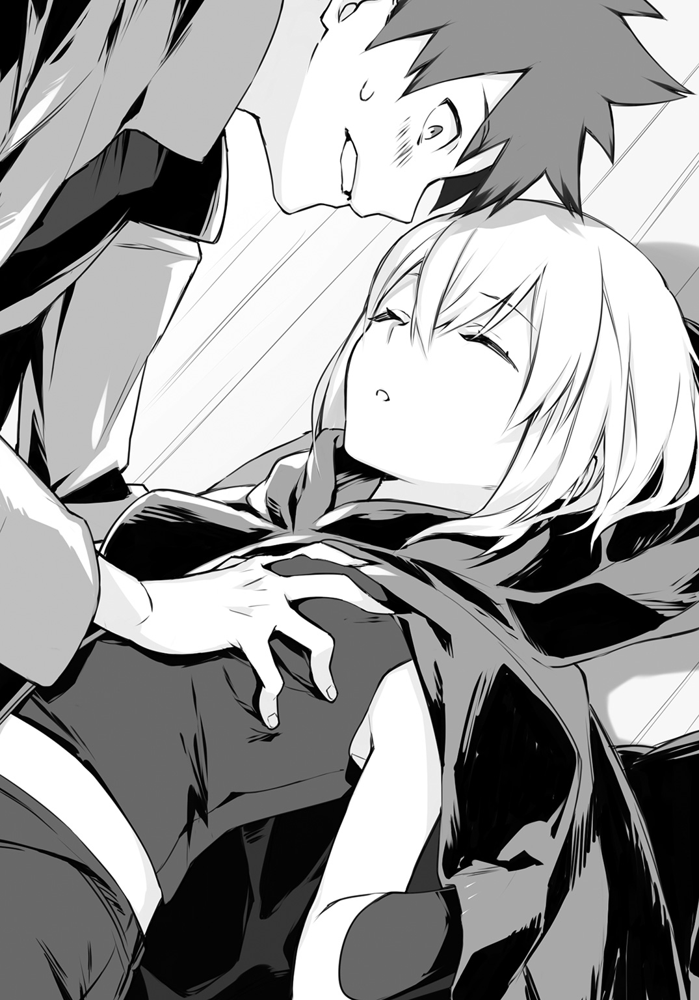
俺は咄嗟に手を離した。少女の体温がまだ掌に残っており、意味もなくうろたえてしまう。
少女ははだけたケープを整えるように、スリット部分に手を入れた。その行為が罪悪感を募らせ、反射的に目を逸らしてしまった時だ。
バチッ！
全身に走る焼けるような衝撃。俺はのけ反って後方に倒れた。いったい何が起こったのか確かめようにも、身体が俺の意に反して痙攣し、指先一つろくに動かすことができない。それでも必死に視線を巡らし、少女の姿を視界に捉える。
ゆっくりと上半身を起こす少女の手に、黒い物体が握られているのが見て取れた。実物を目にするのは初めてだが、それが何かは見当がついた。
（スタンガン――）
相手は華奢な女の子だし、組み敷いている以上は問題ないだろうと油断した。先ほどケープに手をやったのは、その中に隠し持つスタンガンを取り出すためだったのだ。
少女が――いいや、プロの殺し屋であるファントムが音もなく立ち上がる。身動きできない俺を、無感動に見下ろす。いま彼女がその気になれば、蟻の行列を踏み潰すほどの容易さで、俺の命を摘み取ることができるだろう。
ファントムは先ほど俺の手が摑んでいた左胸に、不意に視線を落とした。そのまましばらく無言で佇んでいたが、スッと一歩後退して暗がりに溶け込んだかと思えば、気配が霧消する。
「えっ......？」
俺はファントムの行動に混乱した。この絶対的優位な状況で退く意味がわからない。
独りぽつんと取り残された俺だったが、孤独感をいや増す周囲の静寂が、唐突に破られた。獣の唸り声のような音が空気を震わせ接近。やがてそれは爆音とも言えるエンジン音と化す。広漠な工場に反響するため最初は位置が摑めなかったが、すぐさまその正体が姿を現した。
空が割れた。
正確に言えば、天井を突き破る形で、沙耶香が頭上から降ってきた。彼女が跨る大型自動二輪は、名車の誉れ高きカワサキのＺⅡ。バックに蒼月を背負い舞い降りるその姿は、ハリウッドのアクションスターを彷彿とさせる。
ＺⅡが機材の積み上がった頂点に着地、後輪を円弧を描くようにして滑らせて急制動をかける。沙耶香はゴーグルを外すと辺りに視線を走らせつつ、鋭く俺に問いかけた。
「希純くん、怪我はない!? ファントムはどこ!?」
ようやく身体の痺れが取れてきた俺は、よろめきながらも立ち上がった。
「俺は大丈夫だ。一歩遅かったな。ファントムは逃げたよ」
「逃げた？」
沙耶香はＺⅡのライトで工場内部を照らすと、思案顔になって呟く。
「ざっと見渡しただけでも、生きたトラップがまだいくつもあるわ」
俺はライトが照らす箇所に視線を馳せるが、何の変哲もない廃工場の光景が広がるのみで、トラップの形跡は見受けられない。
......本当かぁ？
目を凝らして罠の所在を確認しようとしていると、沙耶香がＺⅡを降りて俺のもとへとやってきて、視界を塞ぐように目の前に立った。何だろうと思う間もあればこそ、平手が閃き俺の頰を張る。スタンガンのダメージがまだ残っていた俺は反応することも、足を踏ん張ることもできなかった。膝がガクリと折れ、無様にもその場に尻餅をつく。
沙耶香はしかし、別段気にした風もなく言った。
「おまけに希純くんは、満身創痍といった状態。これだけの好条件でなぜ退いたのかしら。希純くん、いったい何をしたの？」
「お前が何してんだよ！ いきなりビンタするか!?」
「あら。反論されるとは心外だわ。一人でのこのこ敵の懐に飛び込むなんて、罰を受けて当然の愚行でしょう？」
「うっ。いや、それはだな。菜々美を人質に取ったって電話がかかってきて。使われたのは菜々美のスマホだったし、騙されて。仕方なく......」
「へぇ。そんな単純な罠に引っかかって、私に相談もなしにこんなところにおびき出されたというわけね。警護で最も重要なのは、互いに信頼関係を築くことだと教えなかったかしら？」
そう訓戒する沙耶香は笑顔だが、目は据わっている。本能に従い、地面にお尻をついた状態でジリジリと距離を取っていると、シャッターのある方から物音が聞こえてきた。次いで響くのは、万寿夫と隼人の声。どうやら沙耶香を追って二人も工場に足を踏み入れたらしい。
俺はこれ幸いと声を張り上げる。
「刑事さん、こっちです、こっち！」
「向くんか!? 無事か!?」
「はい！ 俺も沙耶香も無事です！」
さすがに刑事たちの前で暴力は振るうまい。身の安全を確保してホッと安堵した俺は、あることに気づいて問いかける。
「そういえば、何でこの場所わかったんだ？ また尾行されてたのか？」
「それなら緊急退避のために用意しておいたＺⅡで駆けつけたりしないわ。この場所がわかったのは、希純くんのスマホの位置情報を、私の方で確認できるようにしといたからよ」
「そんな操作いつの間に――」
そこまで口にしたところで悟った。俺が風呂に入っている際に、脱衣所に置いていたスマホの設定がいじられていたのだろう。
抜け目がないなと半ば呆れていると、万寿夫と隼人が俺たちの視界に現れた。二人は俺と沙耶香の姿を認めると、足早にこちらに駆けてくる。
「――あっ！ ちょっとストップ！」
危機が去り安心しきっていた。俺は生きたトラップが残っているのを失念しており、警告を発するのが遅れる。
万寿夫と隼人の姿がフッと搔き消えた。次いで聞こえる、重い物が落下する、ドスンという音。どうやら古典的な罠、落とし穴が存在したらしい。
「あっ......」
俺は間抜けな声を洩らすより他なかったが、沙耶香は冷静そのもので、ぽつりと呟いた。
「パンジステークじゃないといいわね」
「ぱんじ......何それ？」
「ベトナム戦争で使用された落とし穴のことよ。穴の底に、竹槍や杭を設置して敵を殺傷するトラップなの」
沙耶香の説明を聞き、穴の底の地獄絵図を思い浮かべてしまった。蒼ざめる俺を目にして、沙耶香はしまったという風に口元に手をやる。彼女は眉を曇らせ、俺を労わるように、遠慮がちに続けた。
「......ちなみに、切っ先に人糞を塗付して、落下した兵士が感染症に罹るようにしていたものもあるわ」
「えっ!? 何で追加で怖い情報入れたの!? 今の流れは『きっと大丈夫よ』って言うとこじゃないの!?」
いつものドＳっぷりに翻弄されていると、穴の中から「おーい」という隼人の声が聞こえてきた。それほど逼迫したものには聞こえないし、落とし穴で二人仲良く串刺しになっている、なんていう事態には陥っていないようだ。
俺はホッと安堵すると、二人を救出しようと両膝に力を込める。が、立ち上がってすぐさま、カクッと膝が折れてよろけてしまった。動揺した俺は内心で独りごちる。
（おぉ。スタンガン食らったの初だけど、けっこうダメージが尾を引くんだな......）
俺のそんな感想を完璧に汲み取ったらしく、沙耶香が一つ大きく溜め息をついた。腰に手を当て、呆れたように声を投げてくる。
「何をやってるの。脳を揺らすように平手打ちしたから、しばらくは軽い脳震盪でろくに動けないわ。安静にしてなさい」
「まさかのボディガードのせいだった！ 何で俺に的確にダメージ与えてんの!?」
「浴室での記憶も飛ばせたら一石二鳥だと思ったのだけれど、そんな意図で平手打ちをしたことなんてないから手加減が難しいわね。記憶ってどれくらいの衝撃で消えると思う？」
「こ、怖いこと聞くなよ。俺、ボディーをガードされる立場なんですけど。というか勘弁してください。あれはほとんど事故みたいなもんだし、記憶なんてそう簡単に飛ば......」
そこまで言ったところで、俺は愕然となった。会話の流れから自然と想起された浴室の情景。しかし、網膜に焼き付き、決して忘れないと思っていた沙耶香の裸体が、霞がかかったかのように朧になっている。
絶句する俺の様子を見て、沙耶香が満足げに言った。
「あら。上手くいったみたいね。適当にやってみたのだけれど、ラッキーだったわ」
「あ、あぁ。そう、だな」
沙耶香がラッキーなわけではない。俺の運が悪いのだ。はっきりと覚えていることと言えば、背中に当たる『特盛りぽよりんゼリー』の感触だけ......。
そこが残るのかよ!?
むしろそこは忘れていいよ!!
思わず叫んでしまいそうになるが、ぐっと言葉を飲み込んだ。今は涙を堪え、万寿夫と隼人を引き上げることに集中しなければならない。微かな涙目で再び落とし穴へと視線を向けるが、沙耶香は俺の選択が気に食わないようで、ぴしゃりと言い切った。
「二人を助け出すつもり？ そのままで別に構わないじゃない。自分たちの不注意でトラップにかかったのだし、しばらくは穴倉で反省させておけばいいわ」
「そんなわけにもいかないだろ。だいたいあの落とし穴、俺を狙ったもんだしな。俺のせいで被害受けた人間を放っておけるかよ」
そう威勢よく啖呵を切ったものの、俺は眉間に皺を寄せて思案する。落とし穴まではけっこうな距離があるし、沙耶香の言を信じるならば、そこに至るまでにも生きたトラップがいくつも存在するはずだ。万全な状態でもそれらをかいくぐれるか怪しいというのに、果たして今の状況で切り抜けられるかどうか。
（助けを呼ぶか？ いや、二次被害とか出たらシャレになんないしな。せめて俺がトラップ発動させて、安全な道を確保してからじゃないと......）
そんなことを考えていると、ブロロロロッという、腹に響く音が辺りの空気を震わせた。振り返ってみると、沙耶香がいつの間にかＺⅡに跨り、エンジンをふかしている。沙耶香はＺⅡを俺の隣に横付けすると、諦め顔で肩を竦めた。
「わかっていたことだけれど、止めたところで聞き入れはしないわよね。いいわ。私がトラップの露払いをしてあげるから、後ろに乗りなさい」
「え？ いいのか？」
「仕方ないじゃない。躾のなってないポチが、尻尾を振ってトラップ地帯に足を踏み入れようとしているのだから。立場上、黙って見ているわけにもいかないでしょう？」
ポチ呼ばわりには異論があるが、トラップを見破れる沙耶香が手を貸してくれるというのは心強い。俺はＺⅡの後部シートに跨るため、よっと片足を上げた。と、そのとき。
「お座り」
「............」
「どうしたの固まって。早く私の命令を聞きなさい。お座りよ、ポチ。お・す・わ・り」
「....................................くっ！」
ものすごい葛藤ののち、俺は後部シートに腰を下ろした。沙耶香は口角を吊り上げ、今度は自らの腰の辺りをポンポンと叩いて言う。
「お手」
「きっと『危ないからきちんと摑まっててね？』と言おうとして嚙んだに違いない！ そうに決まってる！」
俺は自分に言い聞かせるが、実際に沙耶香の身体に摑まろうとした際、少なからず躊躇いを覚えた。とはいえ、このまま変に意識していると、見透かされてからかわれるのは自明の理。俺は腹を決めて沙耶香の腰にそっと腕を回す。
驚くほど華奢な身体に、仄かに香る石鹼の匂い。
初冬の夜気を淘汰するほど体温が上昇するのを自覚した俺は、誤魔化すため慌てて言った。
「バ、バイクに二人乗りって初めてだから、安全運転で頼むぞ。まあ、トラップあるんだし、スピード出さないだろうけど」
「何を言ってるの。トラップがあるのだし、フルスロットルで突っ切るに決まってるじゃない」
「......へ？ 一つ一つ解除するんじゃないの？」
そのためにＺⅡを再び動かしたのだろうと、そう思っていた。ライトで地面を照らしながら、地雷の撤去作業のように、ジリジリと前進してトラップを見極めていくのだろうと。
「馬鹿言わないでちょうだい。ただでさえ余計な業務なのだから、そんな悠長に時間と労力を使うつもりはないわ」
「でも、突っ切るって......」
「運転技術に関しては問題ないわ。ＳＭＧのライセンス権限は幅広くて、緊急退避用の車両免許も兼ねているの。もちろん運転技能習得のための訓練はハイレベルなものを受けているし、交通機動隊にもひけをとらないという自負はあるわ」
「いや、そういうことじゃなくてさ」
「他に何の問題があるというの？ はっきり言いなさい」
焦れたように問いかけてくる沙耶香に対し、俺は遠慮がちに告げた。
「......罠の中に突っ込んでいくんなら、なんで俺、後部シートに座らされたの？」
脳震盪を起こしているし、後部シートに乗せて安全を確保したのだと思っていたのだが、実は虎穴に突撃するシートだったとはこれ如何に。
俺の問いかけを受けた沙耶香が、不意に瞳を閉じ、胸いっぱいに空気を吸い込む。天井に空いた大穴から差し込む月光に晒されるその姿は神々しくさえあり、俺は彼女とは対照的に息をすることすら忘れ去ってしまった。
沙耶香は瞼を開き、独白するように呟く。
「......冷たく澄んだ空気が心地いいわね」
「へ？ あ、あぁ。ちょっと肌寒いけどな」
「それに、頭上を彩る大きな月がとても綺麗」
「お、おう」
俺は何と応じていいかわからぬまま、曖昧に相槌を打った。すると沙耶香は俺の方を見やり、不敵に微笑んでみせる。
「こんな日は滾るわよね」
「え？」
「今宵も素敵なサディスティック日和。希純くんには特等席で、死なない程度に危険な目に遭ってもらおうと思うの。ふふっ。これぞボディガードの醍醐味よね」
「............あの、僕マジメな学生なんで、ノーヘルで２ケツとかはちょっと」
いそいそと後部シートから降りようとした、その刹那だ。ＺⅡがけたたましい排気音を発し、跳ね馬のように棹立ちになった。
「うぉあっ！」
俺は振り落とされまいと沙耶香に半ば抱きつく。しかし沙耶香は意に介さず、ウィリー走行でＺⅡを驀進させた。景色が滑るように後方に流れ去り、風が渦を巻いて唸る。
「ちょっ、止めっ、」
必死の声を上げた瞬間、視界の隅にキラリと光るものが映った。ハッとなって視線を転じれば、放置されたパイプ椅子の上に、散弾銃が固定されている。
昼間のリベンジとばかりに、その銃口からゴム弾が発射された。即座に直撃コースだと見て取ったが、俺はバイクにしがみつくので精一杯で、回避運動が取れない。
（やべっ！）
血の気が引くのを自覚し、喉が恐怖でヒッと鳴った時だ。沙耶香が馬の手綱を操るように、ＺⅡのハンドルを切った。屹立する前輪が角度をつけるのに従い、車体が高速で横へと振られ、弾道を遮る盾と化す。襲来する弾丸がＺⅡの腹にあるマフラーで弾き返され、激突音がエンジンの轟音と合わさって異色な二重奏を響かせた。
「一つ目、クリア！」
沙耶香の発声と同時に前輪が接地。僅かにバウンドしたかと思いきや、今度は車体が急傾斜して地面すれすれのドリフト走行に移行した。
俺は反射的に膝を地面に当ててバイクの安定をはかる。転倒を免れるその行為はしかし、普通ならレーシングスーツあってこその行為であり、俺は悲鳴を上げた。
「いづづづづづづづっ！ 膝が削れるぅっ！」
「コンマ五秒堪えて！」
何でっ、と問いかける間もあればこそ、ヒュッと風切り音が生じた。傍にあったスチール棚の陰から急襲してきたのは、工場に放置されていたものだろうか、古びた角材だ。
角材は唸りを上げて俺たちの頭上すれすれを水平になぎ払う。頭髪を掠める感触がはっきりと伝わり、緊張した猫のようにうなじの毛がチリチリと逆立った。
角材のトラップをかわした瞬間、沙耶香が地面を蹴り、ＺⅡの車体を立て直して叫ぶ。
「二つ目、クリア！」
「ちょっと止めてヒザ確認させて！ ヒザあるか確認させて！」
俺の切迫した声に応え、ＺⅡが急制動をかけて止まった。タイヤ痕が地面にくっきりと残り、焦げたような臭いが立ち昇る。
すぐさま膝へと視線を落とした俺は、安堵の声を上げた。
「おおぉ、良かった！ 擦りむいてるけどヒザちゃんと、」
「三つ目！」
「へ？ 次は何が――もがっ!?」
視界が一瞬で暗転した。俺がパニックに陥っている間に、身体にかかる横ＧでＺⅡが再び発車したのを感じ取る。
「もががっ、もがもがっ！」
こんな状況で運転なんて自殺行為だと叫ぶが、声がこもって意味をなさない。テンパりすぎて気づかなかったが、世界が唐突に暗転したわけではなく、俺が何かを被っているからだと理解した。死角である頭上から降ってきて、頭部をすっぽりと覆ったのだろう。
「もががっ、ぷはっ！」
俺は沙耶香に回していた腕を放し、視界を塞いでいるものを引き剝がした。いったい何だったんだと思って見やれば、それは変哲のないバケツである。まるで小学生の悪戯じみたトラップだが、こうして食らうと意外と恐ろしい。平静を失ってオロオロしている間に、他の罠に引っかかれば、必中のトラップコンボの完成だ。
俺はバケツを抱えたまま、沙耶香に対してがなり立てる。
「さっきわざとにトラップ食らう位置で止めたろ！ わざわざ危険に――おわっ！」
俺の抗議を振り切ろうとばかりに、ＺⅡが急加速。その進行方向には、工場内に敷設されているベルトコンベアーが形成する、小さな坂がある。
ＺⅡが坂を駆け上がり、宙空へと飛翔した。浮遊感を覚えるなか、俺は驚愕に目を瞠る。
オフロードバイクでジャンプをし、空中で様々なポーズなどの技を披露する、フリースタイルモトクロスという競技がある。沙耶香はそれをこの、トラップが乱立する危険地帯で突如として独演。沙耶香の身体が座席から離れ、ハンドルバーの上で倒立の形を取る〝ツナミ〟を決めてみせた。軽業師も真っ青な身ごなしに目を剝いていると、上下逆さまの状態で俺と視線を交わす沙耶香が、くすりと微笑して言う。
「これで四つ目」
「へ？」
ＺⅡが着地する寸前、プシュッという、何かの射出音が工場内に響いた。ハッとなってそちらを見やるが、時すでに遅し。横合いから飛来したスパイダーネットが、シートに独り腰掛けている俺を搦め捕った。
「のわぁっ！」
俺は為すすべもなく後部シートから転がり落ちる。受け身のために咄嗟に身構えるが、直下にはダンボールの山があったため、衝撃は思ったよりも少なくて済んだ。しかし、ホッと安堵したのも束の間。ネットごと身体が強烈に引っ張られ、地面に突っ伏すようにして倒れ込む。
何事かと顔を上げれば、無事に着地したＺⅡにネットの端が引っかかっているらしく、そのまま西部劇に出てくる犯罪者のように引きずられた。俺は洗濯機に放り込まれたように、上下左右もわからぬまま翻弄される。
「あばばばばばばばっ！」
もはや悲鳴とも取れない絶叫を上げると、ＺⅡはその場でぐるりと旋回した後に停車した。沙耶香がＺⅡから降りて俺の傍にしゃがみ込み、いけしゃあしゃあと問いかけてくる。
「希純くん、大丈夫？ 怪我してない？」
「怪我どころか死にかけたわ！ いったい何してくれてんだ！」
「違うのよ。引きずるつもりまではなかったのだけれど、偶然ネットがＺⅡに絡まったの。運が悪いのは知っていたけれど、まさかここまでとはね。さすがの私もちょっと引いたわ」
「ちょっと引いた!? 昔の処刑方法みたいなことしといて、ちょっと引いたで済ませるの!?」
「ドン引きしたわ」
「度合いを言ってんじゃねえんだよ！」
俺がさらに言い募ろうとしたとき、隼人の声がごく近くから響いた。
「どうした向くん！ あばばばばって何だ!? 何が起こったんだ!?」
気づけば落とし穴のすぐ傍までやってきていた。ネットから這い出て落とし穴の中を覗き込んでみると、竹槍が並んでいるわけでもなく、深さもそれほどでもない穴の底で、ばつが悪そうにしている万寿夫と隼人がいる。どうやら二人とも怪我はなさそうだ。
落とし穴にネットを垂らせば、自力で這い上がってこられるだろう。そう考えてネットの端をくくりつける場所を探した俺は、ベルトコンベアーの支柱に目をつけた。傍に寄って結ぼうとするが、その際に死角になっている位置に何か黒い箱のようなものが置いてあるのを見つける。目を凝らして見てみると、まだ発動していないトラップだろうか。支柱の陰に何かの発射口を有する装置が設置されていた。
俺は弾かれたようにしてその場から身を離す。するとその行為を怪訝に思ったか、沙耶香がこちらへとやってきた。
「ちょっと待った！ ここにもトラップあるから気をつけろ！」
「トラップが？ スイッチになるような仕掛けは見当たらないけれど......」
沙耶香は俺の視線の先にある装置に慎重に近付いていくと、じっくりと観察する。やがて沙耶香は小首を傾げて言った。
「どうやら注射器のようなものを射出する装置みたいね。発射口が可動式になっているし、これだけは他のトラップとは違って遠隔操作で発動するものらしいわね」
「へ？ 何でこれだけ？」
「そんなの私が知るわけないでしょう。何にせよファントムが退いた今、これは無害なものでしかないわ。いいから早く刑事たちを助け出しましょう」
「お、おぉ」
俺は腑に落ちないものを感じつつも、支柱にネットを結びつけ、二人の刑事が這い上がってくるのを手助けした。
いや、うん。あんたらけっこう役に立ちませんね。
「参ったな、助かったよ。ありがとう向くん」
隼人は面目なさそうに、頭を搔きながら礼を言った。しかし万寿夫は礼よりも優先するものがあるとばかりに、拳銃を引き抜いて問いかけてくる。
「犯人は？ もう辺りにはいないのか？」
俺は沙耶香と万寿夫が対峙した場面を思い返した。周囲に気を配るよりも、万寿夫の拳銃を注視しながらかぶりを振る。
「もうとっくに逃げましたよ。近くにはいないと思いますけど......」
「そうか。残念だ」
万寿夫はそう呟くと、沙耶香を睨み据えて再び言った。
「非常に残念だよ」
危機は去ったというのに、張り詰めた空気が満ちる。万寿夫はなかなか銃をしまおうとせず、沙耶香も挑戦的な眼差しで見返す。
大きく穿たれた天井から覗く、綺麗な満月――。
「と、ところで向くん。犯人のことで何か新しくわかったことはないかい？ 仮面をしていても、こう何度も襲われたなら、何か特徴くらい摑めたんじゃないかな？」
隼人の微かに裏返った声で、俺は我に返った。昼間に見た『流しの用心棒』が脳裏を過ぎって、ここで決闘が始まるのではないかと、そんな不穏な予感に苛まれていたのだ。
皆の注意が俺に集まった。俺は汗の滲んだ掌を服で拭うと、ファントムの素顔を見たことを告げようとして――そこで、胸がざわつくのを覚え、咄嗟に口を噤む。
何かおかしいと感じた。どこがどうとは言えないが、千ピースのパズルの中に、一ピースだけ別の絵柄が紛れ込んでいるかのような、注意深く観察しなければ見落としてしまうほどの微かな違和感。
「どうかしたの、希純くん？」
「あ、いや......」
ファントムは恐らく俺より年下の、小柄で華奢な女の子だった。
そう言えばいいだけだったというのに、俺は気づけばこう証言していた。
「いや。相変わらず何もわかりませんでした」
＊
暗殺者と大立ち回りを演じた結果、あと一歩というところまで追い詰めるという大車輪の活躍をしたスーパー高校生が翌朝向かう場所といえば、何を隠そう学校である。
そんなわけで、多数の生傷と多少の寝不足を従えていつも通り登校した俺は、自分の席で腕を組んでウーンと唸っていた。
（なーんに引っかかってんだろなぁ......）
悩みの元凶は、昨夜に覚えた違和感についてである。出そうで出ないクシャミのように、どうしても無視ができず、気づけばアレやコレやと考えてしまうのだ。
そうやって頭を捻っていると、呼んでもいないのに京也がやってきた。京也は無駄に自信に満ちた笑みを浮かべ、俺の隣の席にドカッと腰を下ろす。
「勝手にあたしの席に座るな。立ってろ」
「あ、ハイ」
立った。即座に聞こえたクラスの女子の声で。
俺と京也は微妙な空気の中で視線を交わす。時たまこいつのクラス内での立ち位置がよくわからなくなる。俺は腫れ物に触るように声をかけた。
「何かご用ですか？」
「おいおい、何だよ畏まって。俺たちはダチだろ？」
「前の席、座りますか？ 心優しい水谷の席ですし、何も言われないと思いますよ？」
「何だよ、俺と語り合いたいのか？ 仕方ねぇなあ」
尊大にそう言いながらも、京也はチラチラと水谷の方を窺いながら椅子を引いた。坊ちゃん刈りに黒縁眼鏡という、優等生を絵に描いたような水谷は、窓際に佇んでどこか哀愁に満ちた眼差しで外を眺めている。その姿を目にして、どうやら何も言われそうにないと判断したのか、京也は安堵した様子で椅子に腰を下ろした。
俺は息を呑む。
「馬鹿な......き、京也。何を言ってるかわからねーと思うが、ありのまま今起きたことを話すぜ。水谷が、あの水谷が、お前が席に着いた途端に舌打ちした」
「何となくわかってたけど空耳じゃなかった!! というかさ、そんな大げさに説明すんじゃねーよ！ ジョジョかと思ったわ！」
京也が口角泡を飛ばして抗議してくる。俺はハァと溜め息をつき、このクラスメイト......いや知人......四捨五入すれば、友人......？ に促した。
「で？ 何か用か？」
「いや、昨日のことを謝ろうと思ってな。菜々美ちゃんに聞いたけど、希純と沙耶香ちゃん、特別な関係ってわけでもないんだろ。それならそうと言ってくれりゃいいのに、昨日はちょっとしつこくしちまったからよ」
俺はチラリと沙耶香の方を窺ってみた。沙耶香はクラスの女子に勉強を教えているらしく、和気藹々としたグループができている。
昨日はどこかお客様扱い――というかお姫様扱いを受けていた沙耶香だが、一気にクラスメイトとの距離が縮まった感じだ。その最大の要因は、クラスのムードメーカーかつマスコット的な存在である、菜々美と仲良くなったことだろう。昨日の『流しの用心棒』鑑賞会で意気投合した二人が、気軽に話し合う仲になったので、クラスメイトも徐々にその輪に入っていけるようになったのだ。
（まぁ、いい傾向だよな。他の奴と交流している間は、俺が被害受けなくて済むし）
そんなことを考えていると、京也がわかりやすい猫撫で声で、こう切り出してきた。
「そういうわけでだ。お詫びにカラオケでも奢ろうと思うんだが、放課後は空いてるか？ 沙耶香ちゃんの歓迎会も兼ねようと思うから、彼女も誘ってさ」
「そっちが本題か。沙耶香を誘いたいなら本人に言えばいいだろ」
「誘ったよ！ 誘ったさ！ そうしたら沙耶香ちゃん、『希純くんが行くなら』って言うんだぜ!? だからおとなしくカラオケを奢られてください！」
「お金だけくれればいいよ」
「ひどい人！」
京也はブレザーの裾を嚙み、キーッと奇声を発した。
俺は食い下がろうとする京也に対し、しっしっと手を振ってみせる。
「俺はパスだ。というか......しばらく俺に近付かない方がいい」
危険だから。
その一言を飲み込んだとき、ちょうど一時限目のチャイムが鳴り、現国の小野先生が教室に入ってきた。俺は京也と入れ替わりに水谷が席に戻ってくるのを見届けると、教科書に視線を落とす。
「それじゃあ授業を始める。まずは教科書の58ページを開いて――ん、どうした水谷。早く席に座りなさい。......えっ、なに？ 座る部分が生暖かいから嫌だ？ そんなこと先生に言われても............」
＊
授業が終わったあと、膨大な量のノートの前で立ち尽くしている菜々美の姿が目に留まった。また京也の相手をするのも面倒なので、俺はさっさと席を立ち、菜々美へと声をかける。
「日直か？」
「うん。これ職員室にって言われたんだけど、けっこう量あるよねぇ。わたし、なーんかこう、グラグラッてするもの運ぶの苦手なんだよ。すぐ落としちゃって」
「それ胸が邪魔で真っ直ぐ立たせたまま運べないからだろ」
「うーん。そうなのかなぁ......」
しばし真剣に考えてた風の菜々美だったが、やがて耳たぶが見る間に赤くなっていった。菜々美は俺に向き直って歯を剝く。
「ちょっ、それセクハラ！ 気にしてるの知って、」
俺はノートの束を両手で抱えると、顎で教室の出口をクイッと示す。
「ほれ、行くぞ。半分持ってやるから」
菜々美は口を噤むと、狭いところに挟まって抜け出せなくなった猫のように、うぅっと小さく呻いた。
「......それ半分って言わない。三分の二って言うの」
「細かいこと気にする奴だな。それぐらいなら胸に当たらない高さで持ち運べるだろ」
「だから違う！」
いつまでも押し問答を続けるわけにもいかない。俺が先に立って歩き出すと、菜々美がすぐさま追いかけてきて隣に並んだ。
雑談する生徒がちらほら見える廊下を進んでいると、菜々美が感謝の言葉を投げかけてくる。
「ありがとね。助かったよ」
「別にいいって。スマホの中身、見ちゃったし」
「えっ......」
菜々美が絶句して立ち止まった。この寒い時期に、ダラダラと汗まで流している。
予想外の反応に俺の方が狼狽し、すぐさま言った。
「冗談だよ冗談！ 菜々美からの電話受けたとき以外は触れてもないから！」
「ほ、ホントに？」
「あぁ。本当だって」
それは噓偽りない真実だ。昨日は度重なる緊張と、積もり積もった疲労のダブルパンチを食らい、自室に戻った途端に気絶するように眠りについた。菜々美のスマホを盗み見るつもりも、そんな暇もなかったのだ。
俺の言葉が真実かどうか見極めようとばかりに、じっと俺のことを見詰めていた菜々美は、やがて安堵したように肩の力を抜いた。
「よかったぁ。希純の冗談は相変わらず笑えないんだよ。心臓に悪い」
菜々美は再び歩き出した。俺はスマホの中身に多少なりとも興味を抱いたが、口にしたのは別の問題だ。
「なぁ。昨日の電話のあと、何か変なことなかったか？」
「変なことって？」
「ええと、例えば......仮面をつけた小柄な少女に追いかけられたり、害獣駆除に使われるような罠に引っかかったりしなかったか？」
「......それはとーっても、変なことだねぇ」
菜々美は怪訝な表情を浮かべ、ぶんぶんとかぶりを振った。
「電話の後も何も、これまでの人生でそんなこと一度も経験してないけど？」
「そっか。それならいいんだ」
「変な希純」
菜々美は小首を傾げ、ずり落ちそうになっていたノートの束を、うんしょと持ち直す。
目下の最大の懸念事項は、ファントムが俺の周辺の人間に危害を加える可能性が出てきたということだ。昨夜はスマホだけで済んだが、もし本当に菜々美を人質に取られたら、今度こそ手も足も出ないだろう。こればっかりは、自分の身を護るだけでどうこうできる問題ではない。
（菜々美にも用心棒つけてもらうよう、沙耶香に頼んでみるかなぁ。あぁでも、お袋や他のクラスメイトが狙われる可能性もあるのか。知り合い全員に警護つけるってのは、さすがに無理あるよなぁ......）
つらつらとそんなことを考えていたので、注意が疎かになっていた。前に出した足が何か丸いものを踏み、不意にズルッと滑る。鍛え抜かれたバランス感覚で転倒するのだけは何とか堪えたが、高く積み上げていたノートの束だけは如何ともし難く、その場にぶちまけてしまった。
「げっ......」
「ちょっと希純、大丈夫？ 足首捻ったりしてない？」
「あぁ、何とか。てか、俺いま何を踏んだんだ？」
「ええと......あっ。あれじゃない？」
菜々美の視線を辿ってみれば、廊下の隅をコロコロと転がるテニスボールが見て取れた。踏んだ感触は確かにボールぽかったし、あれが犯人に違いないだろう。
「何でこんなとこにテニスボールが......」
「さあ？ 朝練に使ったボールのしまい忘れとかじゃないかな？ 相変わらず運悪いねぇ」
「うっ」
そんなことを言われたら、ぐうの音も出ない。バナナの皮で足を滑らせて転倒するなんていう、漫画の世界でしか起こり得ないはずの現象も、俺は覚えているだけでも二回は体験しているのだ。廊下に転がるテニスボールなんて、むしろ俺の足を掬うために存在するアイテムではないか。
泣くぞコラ。
菜々美がしゃがみ込み、散乱したノートをいそいそと拾い始めた。俺も慌てて手伝いながら、申し訳ない気持ちで言う。
「仕事増やしちゃったな。運が悪くてスマン」
「あはは。もう慣れたよ。気にしない、気にしない」
「慣れたって......」
まあ、確かにそうかもしれない。菜々美とは長い付き合いだ。俺の不運に巻き込まれ、一番迷惑を被っている人物だろう。
幼少の頃のことが、ふと思い起こされた。
救急車の回転灯がやけに鮮やかだったのを覚えている。
それとは対照的に、蒼白な顔で瞼を閉じたままの菜々美。
俺は何もできず。それどころかぬくぬくとした毛布にくるまって――。
かぶりを振って当時の記憶を頭から追いやった。拾い上げたノートを再び積み上げ、抱えようとする。
菜々美がそれを見て、少し心配そうに言った。
「わたし、もう少し持とうか？ また落としちゃうといけないし」
「気をつけるから大丈夫だよ。だいたい、高く積み上げたら今度は菜々美が落とすだろ」
胸のせいで、とは言わなかったのだが、どうやら過敏になっているらしい。菜々美はノートを運ぶ間に、自分なりの結論を導き出していたようで、すぐさま反駁してきた。
「だから胸は関係ないの！ わたしはホラ、か、か弱い？ 女の子だから、重いもの持つのが苦手とか。そんな感じなんだよ、たぶん」
自分で言っていて違和感があるのだろう。菜々美は歯切れの悪い言葉で、それでも自分を納得させようと、ウンウンと大きく頷く。
（いやぁ、そういうタイプじゃないだろぉ。ラクロス部でもエースだし。か弱いから重いもの持てないってのは、もっと華奢な――）
そこまで考えたところで、脳髄を雷が走り抜けるような感覚を抱いた。俺はせっかく拾い集めて抱えたノートを、ばさばさっと取り落とす。
「えっ、何でここで落とすの!? か弱いって言ったの、そんなに似合わない!?」
菜々美の見当違いな発言も、どこか遠くから響いてくるようだった。俺は自分の思考に埋没する。この身を強烈に打ち据えた、天啓ともいえる閃きを手放さないよう、慎重に記憶を手繰っていく。
目撃した殺害現場を思い返した。廃工場の闇に佇むファントム。その足元に倒れている人影。
ファントムがこちらを振り返る。その姿はまるで幽鬼の類。常識など通じない、人を超越した暗殺者。
けれど。
イメージの中で仮面が外れる。無表情で人形じみた、整った顔立ちが仮面の下から現れる。
俺を狙っていたファントムの正体は、小柄で華奢な少女だった。菜々美が言うように、重いものなど到底運べそうにない、か弱い感じの女の子。
沙耶香の言葉が脳裏を過ぎる。
『通報があってから室田刑事と宇山刑事が到着するまで、僅か十分足らずだった。その短い間に、血痕と死体を処分し、誰にも見られることなく現場から離れるなんて、恐るべき手際よ。素人にできるようなことじゃない』
いいや。どだい無理な話だろう。
あの華奢な少女が、十分足らずで大人の死体を処分するなど不可能だ。
ファントムには仲間がいて、複数で死体を処分した？
その推測を、俺はすぐさま否定する。ファントムが罠を仕掛けてターゲットを狙うのは、少女の非力さをカバーするための、最適な手段だからだろう。あの小柄な体軀では、直接的な方法で暗殺を行えば、返り討ちに遭う危険性はきっと高い。俺に対して、ゴム弾なんてものを使用したのも、実弾では反動に耐えられないからではなかろうか。
そこまで徹底した戦術を取ること自体が、ファントムが単独犯の証拠のように思えた。もし複数の仲間がいるのなら、俺を襲う際は、荒事に向いたものに仮面を被らせ、力押しでくればいいだけのこと。
（だとしたら、やっぱあの殺害現場は変だ。警察が来る前に死体を跡形もなく処分するなんて、どうやったって......）
俺は全身の肌が粟立つのを覚えた。どこからともなく這い寄る悪寒と共に、ある確信が胸に満ちる。
――あの殺害現場は、偽物だ。
簡単なことだ。廃工場は天井に空いた穴から光が降り注ぐだけの、薄暗い場所だった。あの死体が本物なんかではなく、単なる人形だったとしたら、小柄な少女でも五分と経たずに処分できる。床に血痕一つ残っていなかったのも、血糊のついたナイフが人形に突き立っていただけだったと考えるならば、何の不思議もない。むしろ、あの少女が重い死体を一人で動かし、致命傷を与えた傷口から溢れる多量の血痕を、ものの数分で消し去ったとする方が不自然だ。
でも、なぜそんな手の込んだことをした？
もちろん、俺という目撃者を作るためだ。
では、なぜ俺が狙われる？
殺人現場なんか、本当は目撃していないのに――
〝ソンナニ怯エナクテモイイ。正直ナトコロ、オ前ノ命ニ興味ハナイ〟
思い出した。昨夜、ファントムにかけられた言葉。あの時は、ファントムをぶっ飛ばすことしか頭になく、その発言など気にもとめていなかった。ろくに憶えていなかった。
（俺の命に興味がない？）
これまでファントムが用意していた罠を思い返す。身体の自由を奪うネットや、パンジステークとは異なる単純な落とし穴。それらは全て、殺傷能力がないものばかりだった。俺を生け捕りにし、じわじわと痛めつけて殺す気だからだと考えていたが、違ったということか。
（だったら、生け捕りにすること自体が目的か？ ......いや、俺の家は裕福じゃないってことぐらいわかるだろうし、身代金目当ての誘拐ってこともないだろ。だいたい、偽の殺害現場を事前に目撃させてるんだ。襲撃する口実を、わざわざ自分で作ったってことだろ。それでいったい何を狙って......）
そこでハッとなった。
俺が殺人現場を目撃したことで、舞台に上がるようになった人物。
俺が襲撃されることで、必ずその危険な幕に出演する用心棒。
考えてみれば簡単なことじゃないか。俺の命には興味がないとはっきり言ったんだ。ファントムの狙いは俺ではない。沙耶香だ。
そして、沙耶香を俺に紹介した人物といえば――
「ちょっと、大丈夫？ 顔色悪いよ？ 保健室行く？」
気づけば菜々美がすぐ近くで、心配そうに俺の顔を覗き込んでいた。
「あ、いや、何でもない」
「ほんとに？ 何なら保健の先生呼んでくるよ？」
「だから大丈夫......」
そのとき、耳をつんざく音が鳴り響いた。最初は何の音かわからなかったが、どうやら校内の非常ベルらしい。
俺は身体を硬直させた。これはもしやファントムの仕業ではないだろうか。
最悪の情景が思い浮かぶ。
俺の前に現れるファントムと、俺を護るため立ち塞がる沙耶香。そこに万寿夫が加勢するが、ファントムを狙ったはずの弾丸は、手元が狂って沙耶香を撃ち抜く......。
俺は弾かれたように駆け出した。目指すのは、沙耶香がいるであろう教室。
「希純、どこ行くの!?」
「教室に戻るんだ！ 菜々美は避難訓練通りに校庭行け！」
「じゃあ希純も一緒に行こうよ！」
「駄目だ！ 俺は沙耶香のとこに戻らないと！」
菜々美の表情が凍りついた。非常ベルが鳴った瞬間でさえ、これほど慄然とはならなかったというのに。まるで捨てられることを悟っている子猫のように、打ちひしがれた様子で言う。
「なんで？ どうしてさっちゃんのとこに戻るの？ さっちゃんは避難訓練まだだけど、教室にはみんないるし、誰かが校庭まで連れてきてくれるよ？」
「いや、俺が戻らなきゃいけないんだ」
「だったらわたしも戻る！」
菜々美が俺の後に続こうとした瞬間、強烈なフラッシュバックが起こった。河原で仰向けになっている、幼い頃の菜々美。唇が紫色に変わっていて、身体が驚くほど冷たくて、息をしていなくて――
俺は血が滲むほどに唇を嚙むと、大喝一声する。
「いいからお前は校庭に行け！」
京也に言った台詞が、胸の奥で激しく渦巻いていた。
『しばらく俺に近付かない方がいい』
――俺の不運は、人を巻き込む。
＊
教室でクラスメイトに囲まれ、談笑しているものとばかり思っていた沙耶香に、廊下の途中でばったりと鉢合わせした。沙耶香もこの非常ベルに意図的なものを感じ、俺の後を追ってきたのかもしれない。
俺は焦燥を覚えながら、口早に問いかける。
「この非常ベル、ファントムの仕業だと思うか？」
「はっきりしたことはわからないわ。でも、タイミング的に考えて、その可能性は高いと思う。念のために、学校から退避しましょう」
「ああ、わかった。今朝のバイク使うんだよな？ 早く行こう」
登校中の襲撃に備えて、今朝は沙耶香のＺⅡで、二人乗りしてきた。さすがに目立つので登校時間をずらし、校内まで乗り入れずに裏門傍の空き地に止めたのだが、何かあった際はそのＺⅡが緊急退避用の車両になると聞かされている。
ＺⅡへと急かす俺の様子を目にして、沙耶香は意外そうに言った。
「やけに素直ね。渋るかと思ったわ」
「前にも言ったろ。まずは逃げることを最優先にするって。それに、俺たちが学校に留まってたら、誰かに被害が及ぶかもしれない」
「どういう理由であれ、私の指示に従順なのはいいことね。ついてきなさい、ポチ」
ポチ呼ばわりが定着しかかっているのが気になるところだが、そこはあえて無視して、沙耶香に促されるまま校舎から外へ出る。
足早に移動しながら、万寿夫とファントムの関係について沙耶香に言うべきかどうか悩んだ。何か証拠があるならまだしも、全て推測の域を出ない。ただでさえ犬猿の仲なのに、今の時点で余計な先入観を植えつけていいものかどうか。
そうこうしているうちに、裏門へと辿り着いた。沙耶香は門柱の陰に身を潜め、辺りに鋭い視線を巡らせる。
「ＯＫ。怪しい人影も、トラップの形跡もないわ。行きましょう」
「ちょっと待った。室田刑事と宇山刑事は？ 近くで見張ってるんじゃないのか？」
「あの二人なら、馬鹿正直に正門が見張れる位置に車を止めてたわよ。別に連絡する義務もないし、早く退避しましょう」
沙耶香はそう言うと、雑草がまばらに生える、売り地の看板が掛かった空き地へと足を踏み入れた。以前は今にも倒壊しそうな、木造の平屋がここに建っていたのだが、数カ月前に取り壊されたのだ。
空き地の隅で、目立たないようポツンとお留守番をしていたＺⅡに沙耶香が歩み寄る。俺もその後に続くが、手を伸ばせば届くというほどの距離まできて、沙耶香がふと足を止めた。
「どうしたんだよ？」
「......止めた位置が微妙にズレてる。誰かが触れた形跡があるわ」
俺はＺⅡを見やった。よく覚えてはいないが、今朝止めた場所はここで間違いないし、変わった様子も見受けられない。
「気のせいじゃないのか？」
「いいえ。車両に何か細工をされてもすぐ見破れるように、停車位置からハンドルの角度まで、きちんと記憶しているの。間違いなく何者かの手が入ってる」
「でも、近所の人が触ったのかも――」
全てを口にする暇はなかった。油断なくＺⅡに視線を這わせていた沙耶香が、車体に仕掛けられていたものに気づいたのか、電光の速度で動く。俺を押し倒すようにして、地面へと身を躍らせる。
爆発が起こった。
灼熱の波濤が押し寄せ、夕焼けよりも濃厚な、害意に満ちたオレンジが視界を覆った。車体のパーツの焼けた鉄片が降り注いでくる。鼻腔に侵入してくる、ひりつくような焦げ臭さ。原形を留めないＺⅡから噴きあがる黒煙が、漆黒の昇竜と化して天に挑んでいるその様を、俺は声もなく見守る。
「希純くん、怪我はない？」
俺をかばうように覆い被さる沙耶香が、耳元でそう問いかけてきた。はたと我に返った俺は、身体をくまなく調べるが、軽い火傷一つ負っていない。それもこれも、沙耶香が逸早く危険を察知してくれたからだ。
「どこも何ともない。助かったよ。ありがとう」
「お礼はいいわ。私の仕事はあなたの盾になることなのだから」
そう言って微笑を浮かべた沙耶香だったが、すぐさまその顔が歪んだ。異変を感じ取った俺は、沙耶香の両肩を摑んで身を離し、彼女の全身を視野に収める。
問題の箇所はすぐ見つかった。沙耶香の右太ももに、親指大の鉄の破片が突き刺さっている。出血は大したことないようだが、素人が下手に手出しできるような傷でもない。
――俺を庇ったせいだ。
立ち昇る黒煙のせいではない息苦しさを感じた。心臓は早鐘を打っているというのに、血の気が引いていくのをはっきりと自覚する。干上がった喉を、唾を飲み込むことで何とか動かし、必死に声を発した。
「沙耶香、しっかりしろ！ すぐ救急車を呼ぶから！」
「落ち着きなさい、希純くん。これぐらいの怪我、どうということはないわ。近隣住民や室田刑事もすぐ駆けつけるでしょうし、第二波に備える必要もないでしょう」
それよりも、と沙耶香は不審げに眉をひそめ、独白するように続けた。
「......これまでの手口と違って、明らかに命を狙ったトラップね。お遊びはおしまいということかしら？ それとも、そうせざるを得ない事情が出てきたのか」
沙耶香のその台詞を耳にして、俺は思わず「あっ」と声を零した。手口の変わったきっかけに、一つ思い当たる節がある。
「どうしたの希純くん？」
「......もしかしたら、俺がファントムの素顔を見たからかもしれない。若い女の子だった。俺より年下だと思う」
「ファントムの素顔を見た？ なぜそんな重要なこと黙っていたの！」
「いや、それは、ちょっと引っかかることがあって......」
「他にも何か隠してないでしょうね!? あるなら言いなさい！」
互いの信頼関係を築くことが警護で最も重要なことだと、沙耶香は以前話していた。そのためだろうか。今この場で全てゲロしなければ拷問にでもかけよう、話しても隠していたペナルティとして拷問しようとばかりの、有無を言わせぬ迫力で俺を難詰する。
「べ、別に隠してたわけじゃないんだ！ 他には何も――あっ」
「なにを思い出したの!?」
「ひっ！ む、胸をっ」
「胸を!?」
「......胸を、揉みました」
「..................」
いや、思い出したことを問われるままに言っただけなんです。だからそんな、痰壺でも覗き込むような目で見ないでください。
俺が新たな生命の危機に直面していると、隼人の声が不意に響く。
「向くん！ いったい何があったんだ!?」
ＺⅡの黒煙が狼煙代わりとなったのか、隼人がこちらに駆けてくるのが見えた。またパシリに使われていたのか、両手には缶ジュースが握られている。ちらりと見えたラベルには、『あなたの口臭をリセット！ ドリアンジュース』とあった。
この人の味覚、パネェな。
「ＺⅡに爆発物が仕掛けられてたんです！ 沙耶香が怪我したんで、すぐに救急車を！」
「あ、ああ！ わかった！」
隼人が電話をかけている間に、サイレンを鳴らしながら覆面パトカーが猛スピードで現れ、中から万寿夫が降りてくる。
俺は万寿夫の表情をつぶさに観察した。万寿夫は大破し黒煙を上げるＺⅡを目にして愕然となると、集まり始めた野次馬に警察手帳を見せ、下がるように大声で指示する。その様子に演技めいたものはなく、これが彼にとっても予想外の事態であることを雄弁に物語っていた。
――万寿夫は来栖源之助に意趣返しするため、ファントムを雇った。
その推測はきっと正しいと俺は睨んでいる。ということは、今日の件は、ファントムが依頼主である万寿夫の手を離れ、暴走を始めたということを示唆している。そのきっかけを作ったのは、他ならぬ俺。
俺は沙耶香を見やった。彼女は足を負傷しながらも、俺に危険が迫っていないか、油断なく辺りに視線を巡らせている。
（また俺の不運が人を巻き込んだ......）
その思いが胸を締めつける。沙耶香の足を伝い落ちる血が、俺を無言で責め立ててくる。
燃え上がるＺⅡを遠巻きに眺める人々の、不安そうな表情が。
爆発音に驚いたのか、近くの民家から聞こえる赤ん坊の泣き声が。
全てお前の不運が招いた災厄だと、指差して糾弾する。
ひどい眩暈に襲われた。込み上げてくる嘔吐感。許してくれ。これ以上、誰も巻き込みたくはないんだ。不運に見舞われるのは俺だけでいい。心の底からそう思うからこそ、俺は独り呟いた。
「......俺にできることは、一つっきゃないよな」
第４話
『雨ニモマケズ 風ニモマケズ 雪ニモ夏ノ暑サニモ マケヌ
丈夫ナＳッ気ヲモチ 慾深ク 決シテ護ラズ イツモシヅカニワラッテヰル
サウイフボディガードヲ ワタシハ シッテヰル。』
「それはどういうことかしら、希純くん？」
蓮音病院の片隅に設けられた休憩スペースで、俺と沙耶香は睨み合う。沙耶香はつい先ほど治療を終えたばかりであり、その足には痛々しい包帯が巻かれていた。骨や神経を傷つけるほどの重傷ではないが、激しい運動はしばらく控えるようにと、先生からは釘を刺されている。
休憩スペースには他に、万寿夫と隼人の姿もある。事態が急変したため、今後の警護体制について話し合うため集まったのだ。
そんな中でぶち上げた俺の発言に、万寿夫と隼人は面食らって言葉を失っている。ただ沙耶香だけが、視線に静かな怒気を孕ませて、眼光鋭く俺を見据えていた。
俺は沙耶香の激情を無視し、飄々と告げる。
「だから言った通りだよ。用心棒の契約を切りたい。今すぐに」
「自分が今どういう状況に置かれているかわかってるの？ 私という盾を失えば、命の保証はないわよ？ それに、途中で契約を切るということは、違約金として百万を――」
「分割でいいか？」
「えっ？」
「だから、百万だよ。そんな大金すぐには払えねぇけど、バイト掛け持ちすれば、高校卒業するまでには完済できると思う。それでいいんだよな？」
俺が本気だということを悟ったらしい。沙耶香の発していた憤懣が薄れ、代わりに戸惑いが顔を覗かせる。俺はぞんざいに言葉を続けた。
「今まで護ってくれたことには感謝してるよ。さっきも危うく死にかけた。もしこれまで通りの働きができるっていうんなら、俺だってこんなことは言い出さない。だけど......」
俺は沙耶香の足に視線をやった。痛ましいその姿に泣きそうになるが、感情を押し殺して溜め息をつく。
「その足じゃ、用心棒としてはしばらく役に立たないだろ？」
沙耶香はきゅっと唇を嚙んだ。プロ意識の強い彼女のことだ。これまでと遜色ない働きが出来るなどという噓は、口が裂けても言えないのだろう。それを知った上で、俺は畳みかける。
「だいたい、俺はファントムの素顔を見てるんだ。モンタージュを作れば、後は刑事さんたちが捕まえてくれるのを待つだけでいいんだよ」
......ごめんな、沙耶香。
「俺、言ったよな？ 身を護るために、逃げること最優先で考えたいって。逃げ足には自信あるんだよ。練習の時に限ってだけど、学生記録にコンマ一秒まで迫ったことあるし」
俺はお前に、めちゃくちゃ感謝してる。
「ファントムが捕まるまで逃げ切る。それがベストなんだよ。だけどその足じゃ、俺を守りながら逃走するって、無理あるだろ？」
そりゃあ、最初はトンデモない奴を用心棒にしちまったって、そう思ったけど。本当に危ない時はいつだって俺のことを護ってくれる沙耶香は、俺の憧れる進さんそのものだ。
だからこそ、もういい。
進さんのように、善人を救うために傷を負うなら本望だろう。だけれど、祖父の不始末の咎を背負うなんて、馬鹿げたことだ。俺の不運に巻き込まれて傷つくなんて、あっちゃいけないこと。
俺は沙耶香に背を向けた。この一言は、面と向かって言うことができそうにもない。俺は密かに深呼吸して心を落ち着けると、自己嫌悪に苛まれながらも、吐き捨てるように言い放った。
「――足手まといのせいで命落としたくねぇんだよ。用心棒の契約はこれまでだ。じゃあな」
俺はそのまま歩き出した。沙耶香がどんな表情をしているのか、振り返って確かめたい衝動に駆られたが、その勇気がどうしても持てない。代わりにできたことといえば、その場から逃げるように立ち去ることだけ。
これでいい。これがベストの選択だ。
俺が沙耶香との契約を切れば、ファントムの撃退に託けて、万寿夫が沙耶香に復讐の弾丸を撃ち込むことはできなくなる。再び何らかの殺害計画を立ててくる可能性は高いが、その準備期間が致命傷だ。例えば、沙耶香の祖父である来栖源之助に、あなたのお孫さんが室田刑事に命を狙われていますという、匿名の投書がくればどうだ？ とある高校生の身に降りかかった不運と、その際に確信したこと全てを詳細に伝えれば、孫娘の危機を知り、何らかの手を打ってくれるはずだ。
ファントムだって、俺が万寿夫の復讐計画のピースから逸脱したとなれば、きっと喜色を浮かべることだろう。これまでのように生餌にするため捕縛する必要もなく、煩わしい存在だった沙耶香という盾もない。こうなれば、周囲の人間を人質に取るなんていうまだるっこしい手は使わず、丸裸の俺を直接狙ってくるはずだ。俺の不運に誰も巻き込まなくて済む。
俺を追いかけてくる足音があった。沙耶香のものではなく、万寿夫と隼人の二人だ。これから署に同行し、モンタージュ作製に協力することになっている。
沙耶香が追ってこなかったことを安堵すべきなのに。
俺はなぜか、胸を引き裂かれるような寂しさを覚えた。
＊
まさか警察署でカツ丼を食べる日がくるとは。
それもこれも、モンタージュ作製に予想以上に手間取ったためだ。何たって俺の証言から浮かび上がる人物像は、どう考えても幼い少女。本当にきちんと顔を見たのかと幾度となく確認されながら、ようやく完成に至ったのは正午を回った頃だった。そのため、お昼は警察署で店屋物をご馳走になることとなったのだが、俺が迷わず選んだのはカツ丼。犯人が取り調べ室で自供した際に必ず食べ、しかし後でお代を払わされて、実は自腹だったということを知り愕然となる一品である。
残念ながら取り調べ室で食べることは叶わず、空いている小会議室での食事となった。俺の向かいでは万寿夫がキツネうどんを、そして味覚の魔術師である隼人が、飲むヨーグルトをぶっかけた親子丼を食べている。すげぇな。
黙々とカツ丼を搔き込む俺に、万寿夫がやにわに話しかけてくる。
「意外だったよ。君がお嬢ちゃんをクビにするとは。君らはなかなか息の合ったコンビだと、そう思っていたから」
俺は動かしていた箸をぴたりと止めると、丼から視線を上げるでもなく応じた。
「そんな風に見えてましたか？ 沙耶香は俺のこと半ば玩具扱いしてたし、むしろ迷コンビって感じでしょう」
「そうか。まあ警備会社の護衛なんて、しょせんは場数を踏んでいないルーキーか、あるいは前線を離脱したロートルしかいない。自分の命を預けるに値しないと思うのは当然だろう」
万寿夫は鼻を鳴らし、沙耶香を侮蔑する。
俺は丼をドンッと音高くテーブルに置いた。万寿夫のことを睨みつけ、静かに断言する。
「馬鹿言わないでください。沙耶香以上の用心棒はいませんよ」
万寿夫はぴくりと眉を動かした。隣に座る隼人が、どちらの肩を持ったらいいか決めかねるように、俺と万寿夫を交互に見やる。
俺は一つ大きく息を吐き、万寿夫に問いかけた。
「何でそんなに沙耶香を目の敵にするんです？ 沙耶香は懸命に自分の仕事を果たした。おかげで俺は今こうして生きてるんだ」
「ふんっ。たまたま運が良かっただけだ。遊び半分の売名行為で警護されてるのがわかってなかったのか？」
「娘さんの時とは状況が違うだろ」
万寿夫が目を瞠り、俺のことをまじまじと見据えた。
「どうしてそのことを......」
やがて万寿夫の双眸が、傍らにいる隼人へと向けられた。瞋恚の炎で彩られた視線を受け、隼人は泡を食って立ち上がる。その口から洩れるのは、白々しい台詞。
「まだ味が薄いなぁ、この親子丼。うん、隠し味にココアを買ってこよう。そうしよう」
隼人はそそくさと小会議室から逃げ去った。万寿夫はチッと舌打ちする。
「まったく。余計なことをペラペラと」
万寿夫の憤激で空気が帯電したように、ピリピリとした痺れを感じる。さすが修羅場をいくつも潜り抜けてきた刑事だ。その迫力は生半可なものではなく、思わず気圧される。
それでも、俺は何とか口を開き、沙耶香を擁護する。
「俺は来栖源之助って人は全然知らないけど、話を聞く限りじゃ、沙耶香はおじいさんとは違う。そりゃあ、多少無茶な形で俺の用心棒になったけど、それも必ず護り切れるっていう自信と実力があったからだ。もし売名行為を優先するなら、怪我してようが何だろうが、俺の用心棒であることを、あんな簡単に諦めないはずだろ」
「さてなどうだか。命の危険を感じて怖気づいただけかもしれん」
「そんな言い方、」
「娘の――咲のお腹には、赤ん坊がいたんだ」
俺はその一言に愕然となり、二の句が継げなくなった。万寿夫は禍々しい負の感情と共に、淡然と言い放つ。
「俺は来栖源之助の判断ミスを一生許さないし、同じ過ちを犯そうとしているお嬢ちゃんのことも決して認めない。......お喋りは終わりだ。早く食え。せっかくの飯が冷めちまうぞ」
万寿夫は丼を持ち上げ、ズズッとうどんの汁を啜った。俺も止めていた箸をのろのろと動かし、大して美味くないカツ丼を頰張る。
「......モンタージュ、よくできてました。そっくりです」
「あぁ、そうかい。ご苦労さん」
「あれなら近いうちに捕まるだろうし、そうなれば俺を襲うよう依頼した人物のこともわかるんじゃないですかね」
「依頼主？ 君がターゲットにされてる理由は、殺害現場を目撃したからだろう？」
万寿夫は眉宇をひそめた。自分が依頼主なんておくびにも出さない。
（さすがにこんな鎌かけには引っかからないか）
でも、もうわかってんだよ。
俺はそ知らぬ態で続ける。
「だから、最初の殺害を依頼した人物ですよ。まだ死体も見つかってないし、このままじゃ迷宮入りでしょ？」
「......あぁ。そうだな。ご協力、感謝するよ」
舌戦はこれにて終了。俺と万寿夫は互いに沈黙し、食事を取ることに専念する。
すると頃合いを見計らっていたのか、隼人がひょこりと顔を出し、小会議室に入ってきた。隼人は場の空気を改善しようとばかりに、明るい声で言う。
「ココア、向くんもかけてみるかい？ ずっとコンビニ弁当や店屋物ばかりだから、味に飽きちゃってるんだけど、ココアかけると劇的に変化するよ」
「......でしょうね。俺はいいです。遠慮しときます」
隼人の黒魔術的な味覚に呆れながらも、俺は自分の行動に小さな満足感を覚えていた。モンタージュ作製の休憩時間を利用して、来栖源之助宛の手紙をＭＵＳＡＳＨＩへと送り、沙耶香の危機は伝わるようにしておいた。それに、モンタージュは本当に、そっくりにできたのだ。俺がこの先どうなろうとも、優秀な日本の警察がファントムを逮捕してくれることだろう。それはつまり、依頼主の喉元にナイフを突きつけたも同義。俺の推測が実証される最後のピースを残せたということ。
後は、ファントムとの一対一の勝負が待つだけだ。
警察に捕まるより先に、間違いなく俺を殺しに来るだろうから......。
（上等だ。いつでも来やがれ）
勇ましいことを思いつつも、箸を持つ手が震えていることに気づく。俺はギリッと歯を嚙み締め、これは武者震いだと自分に言い聞かせながら、残りのカツ丼を一気に搔き込んだ。
＊
警察署での用事を全て終えた俺は、覆面パトカーで学校へと戻った。万寿夫と隼人はまたしばらく、俺の周辺で張り込みを続けるのだろう。自作自演の感が強く、何とも滑稽ではあるが。
俺は教室のドアの前まで来ると深呼吸した。ちょうど休み時間らしく、弛緩した空気が中から洩れ出しているが、俺は入るのに二の足を踏む。沙耶香は先に戻っているだろうし、顔を合わせ辛い。
（......迷ってても仕方ないか。自分で選んだことだしな）
よしっ、と気合いを入れると、ドアを勢いよく開けた。
談笑していたクラスの何人かが、ドアの方に注意を向け、俺が戻ってきたことに気づく。俺は無意識のうちに、沙耶香の席へと視線を巡らせていた。
沙耶香は俺のことに気づいただろうが、決してこちらを見ようとはしなかった。どうやら彼女のプライドをいたく傷つけてしまったらしい。まぁ、それも当然か。俺は進さんばりの凄腕の用心棒に対し、足手まといと詰ったのだから。二度と口を利いてもらえなくても仕方ない。
なに、平気さ。つい先日まで、顔も知らない仲だったのだ。再び赤の他人に戻っただけ。契約を解除した以上、沙耶香も近いうちにこの学校を離れ、誰か他の奴を警護することになるだろう。それは万寿夫の手から逃れることにも繫がるし、万々歳じゃないか。
そう、思うというのに。
何だか胸にぽっかりと穴が空いたように感じてしまうのは、なぜだろうか？
「希純、もう大丈夫なの？」
菜々美がすぐさま駆け寄ってきて、心配そうに眉尻を下げる。俺は小首を傾げて問い返した。
「大丈夫って、何が？」
「え？ さっきのガス爆発にさっちゃんと一緒に巻き込まれたんでしょ？ 脳震盪起こしたから、大事をとって病院で検査して帰るみたいって、さっちゃんが言ってたんだけど」
なるほど。そういうことになっているのか。
きっと無用なパニックを避けるため、沙耶香のお祖父さんが裏で手を回したのだろう。俺は一つ頷き、口裏を合わせた。
「それなら平気だ。どこも異状ないってさ」
「でも、今日は大事をとって早退したら？ どうせあと六時限目だけなんだし」
「平気だって言ってるだろ」
思いがけず、突き放すような言い方になってしまった。菜々美がハッとした表情になり、俺のことをまるで見知らぬ人間を見るような目で見返してくる。
「あっ......」
俺は悔悟の念に苛まれ、拳を握り締めた。ファントムに狙われているという不安と、沙耶香に対する罪悪感で、知らず知らずのうちにピリピリしていたらしい。すぐさま謝ろうとしたが、すんでのところで思い止まった。しばらくは菜々美とも距離を置いた方がいい。でないと、誰も巻き込まない道を選んだ意味がなくなる。
俺は顔を伏せ、無言で菜々美の脇を通り抜けた。背中に菜々美の物問いたげな視線をひしひしと感じながら、自分の席に着く。
「よぉ。相変わらず運が悪いな」
声が聞こえてきたのはその直後だった。今朝のリプレイを見ているかのように、京也が無駄に自信に満ちた笑みを浮かべて傍へとやってくる。今朝と違うところといえば、隣の席に無断で座ることも、水谷の席に腰掛けることもせず、突っ立ったままだということぐらいだろう。
けっこうハート弱いな、こいつ。
先ほど菜々美に対応したのと同様に軽くいなしてしまおうと思った時だ。京也が普段と打って変わった真面目な顔つきになり、こう問いかけてきた。
「なぁ。お前さ、ものすごくヤバイ秘密を隠してるだろ？」
その瞬間、反射的に腰を浮かしてしまい、俺は内心で臍を噬む。京也が相手ということで油断した。これでは図星だと言っているようなものじゃないか。
京也は俺の反応に満足したように、一つ頷いてみせる。
「やっぱりそうか。水くさいじゃねえか。俺とお前の仲なのに、何の相談もねぇなんてさ」
「いや、何のことだか」
「しらばっくれんなよ。何ならお前がどんなヤバイ秘密抱えてるか、当ててやってもいいぞ」
冷や汗が流れた。菜々美ほどではないが、京也とも付き合いは長い。もしかして本当に、俺の置かれた窮状を察しているのだろうか。
京也が身を乗り出してくる。
「俺は鼻が利くからな。実は今朝からわかってたんだよ」
......やめろ。頼む、言うな。
お前だって大事なダチなんだ。これ以上、無関係な奴を巻き込みたくはない。知らないフリを通してくれ。俺に近づかないでくれ。
その願いとは裏腹に、京也は鼻の穴を膨らませ、俺の秘密を詳らかにする。
「希純と沙耶香ちゃんの身体から、同じ石鹼の匂いがする」
「――よし、お前いま相当気持ち悪いぞ」
こいつを買いかぶりすぎた。ただの変態だ。鼻のいい変態だ。
京也は選挙カーに乗る若手立候補者のような熱心さで訴える。
「なんだよ、同じ石鹼の匂いがするってことは、同じ風呂に入ったってことだろ!? きちんと説明しろ！ 風呂の情景を交えて、事細かに！」
「早とちるな変態。沙耶香の家でも同じ商品使ってるってだけだろ、きっと」
京也は愕然となると、今にも泣きだしそうな顔で告げる。
「希純ぃ。希純よぉ。そんな夢のないことを思春期の男子高校生に言うなよぅ」
「触るな変態。そんなだから水谷にも嫌われるんだよ」
俺は京也の背後、今朝と同じく窓際で黄昏れるように外の景色を眺めている水谷に目をやる。
京也は俺の言葉にピクリと身じろぎし、水谷の方をチラチラ気にする素振りを見せるが、すぐさま前に向き直って言った。
「バ、バカ言うな。椅子を勝手に使ったから舌打ちされただけで、あいつともマブダチだぜ!?」
「噓だろ......き、京也。何を言ってるかわからねーと思うが、ありのまま今起こったことを話すぜ。水谷が、あの水谷が、お前にマブダチ扱いされた瞬間に床にツバを吐いた」
「そんな音したけど俺は信じないね！」
京也は水谷の方を決して見ようとはせず、話題を俺と沙耶香の件に強引に戻す。
「それじゃあ沙耶香ちゃんと混浴なんてことはなかったんだな？ そっかそっか。安心したぜ。これで何の遺恨もなく沙耶香ちゃんの歓迎会が開けるな」
「カラオケなら行かないって言ったろ」
「そんなこと言うなよぉ。お前が行かないと沙耶香ちゃんだって来てくれねぇだろ」
「もう俺と沙耶香は関係ないから、いま誘ったら一人でも行くよ、あいつは」
「えっ!? なになに、お前らなんかあったの!? そりゃマズイだろぉ。沙耶香ちゃん怒らすようなことしたのかよ」
その一言が胸に突き刺さる。身が焼けるような感覚があった。その大半は、自分自身に向けられた怒りなのだが、俺は気づけば怒鳴り散らしていた。
「うるせぇな！ 関係ないんだから引っ込んでろよ!!」
いったい何事かと、クラスメイトたちが俺の方に視線を集中させた。その中には沙耶香のものも含まれているように感じたが、怖くて振り返ることができない。
俺は自己嫌悪の渦に陥り、息さえ出来なかった。そんななか、呆気に取られていた風の京也が、憤然とがなり立てる。
「何だその態度！ こっちは心配して聞いてんだろ!?」
わかってんだよそんなことは。でもしばらくは放っておいてくれ。俺に近づかないでくれ。
俺は心の中で祈るだけで、黙然と目を伏せる。すると京也は憤懣やる方なしといった態で、吐き捨てるように言った。
「そうかよ！ 勝手にしろ！ みんな、放課後にカラオケに行こうぜ！ 行きたい奴は手ぇ上げろ！ 俺の美声を聞かせてやるぜ！」
『............』
「はい皆無！ ドナドナ独唱かな!? それともグリーングリーンを七番まで歌って哀しくなっちゃおうかな!?」
......すっ。
「えっ、ウソ。水谷が手を上げてくれた。......へへっ、そうか。お前もやっぱ俺のことをマブダチって、」
ぽりぽり。ぽーりぽり。
「なるほど腋の下を搔いただけか！ なかなか独特な搔き方をなさいますね!?」
やがて六時限目のチャイムが鳴り、古典の授業が始まった。
俺は黒板ではなく、ぼんやりと窓の外を眺めてみる。そこには今の心象風景を現すような、鉛色の寒雲が静かに流れていた。
＊
「想定外のことが起きた。だから予定外の行動に出た。それだけのこと」
老朽化したビルの屋上に、スマホを手にするファントムの姿があった。今は仮面を外しており、人形めいた少女の顔が外気に晒されている。雨の到来を予感させる湿り気を帯びた風が、丈の長いケープをはためかせている。
通信相手の反応を聞いた少女が、少しだけ目を細める。
「その非難は理解できない。利用すると決めている以上、巻き込むも何もない。想定していたリスクと割り切るべき」
少女は屋上の端へと歩を進め、金網のフェンスに指を絡めた。視線を馳せる先には、焦げ跡の残る空き地がある。
「......そう。そちらにもそんな想定外のことが。でも問題ない。こちらもプランを変えた。これから最後の仕掛けに取り組む。この方法なら、ターゲットも出てこざるを得ない」
応答を即座に遮り、少女は端的に言う。
「やり方はこちらに一任されているはず。以降は連絡を取らない」
一方的に通話を切り、少女は目線をゆっくりと移動させる。
平穏な学舎たる蓮音高校が、少女の瞳に映り込んでいた。
＊
学校が終わった途端、逃げるようにして帰宅した俺を待っていたのは、スプーンとフォークを幼稚園児のようにしっかりと握り締め、食卓で万全の態勢でスタンバッている実母だった。
「おう、おかえり希純！ シェフは!?」
「シェフって何だよ。沙耶香ならもう家には来ないぞ」
緋香里は絶望をした人間はこういう表情をするのだというお手本のような顔をしたあと、食卓にぐんにゃりと突っ伏した。駄々をこねる小学生よろしく、恨めしげな声を洩らす。
「えぇー。三食って約束じゃんー。ごはんー。美味しいご飯ー」
「三食じゃなくて一泊だろ。朝食もお袋の分まで作っておいてくれたし、充分じゃないか」
「わかんないかなー。作りたてを食って学校行った奴にはわかんないだろうなー。冷めても美味しいあのご飯食べたから、夕飯の期待感増しちゃったんじゃないかー」
「知るかよそんなこと。今日は俺の当番だし、時間早いけど何か作るよ。それでいいだろ？」
「うん？ 何か機嫌悪くね？」
「別に」
学生鞄をその辺に放り、台所へと向かうと、冷蔵庫の中身をチェックしていく。
チャーハンぐらいしかできないかもなと考えていると、いつの間に傍にやってきていたのか、緋香里が俺の耳を突然引っ張った。予期せぬ痛みに、俺は思わず涙目になる。
「いってぇ！ 何すんだ、離せっ！」
抗議の声を平然と受け流し、緋香里は半眼でジーッと俺の顔を見詰めてきた。しばらくそうしていた緋香里は、憮然とした様子で言う。
「しけた面してんなぁ。あんたのこんな面見んの久し振りだわ」
「いいから耳を――いててっ！」
緋香里は俺の耳を摑んだまま、足音高くズンズンと玄関の方へと向かった。ドアを開け、まるでゴキブリでも摘み出すかのように、俺を外へポイッと放り出す。
緋香里はおざなりに言い放った。
「そんな面した奴にご飯作ってもらっても不味いだけだ。もういいから、その面がマシになるまで帰ってくんな。何なら沙耶香ちゃんの家に逆お泊まりして夜這いでもしてこい」
「なに言ってんだそんなことするか！」
「っんだよ、じゃあ菜々美ちゃんならＯＫなのか？」
「相手がどうこうって問題じゃないだろ!?」
「はんっ！ そのわりにはベッド下のコレクションにそういうシチュエーションものがありましたけど!? タイトル覚えてるしこの場で叫んでもいいですけど!?」
「勘弁してくださいお母様」
借りてきた猫のようにおとなしくなった俺を一瞥すると、緋香里はポリポリと頰を搔き、板についてない口調で教訓めいたものを述べ始める。
「あー、あれだ。あんたは運はとことん悪いけど、変に拗ねることもなく、まっとうに育ってくれたと思うよ。えっちなＤＶＤも特殊な趣味のやつはなかったし」
「お母様、もうその件は」
「だからホレ、自分では前向いて歩いてるつもりかもしんないけど、実は前向いてるだけで後ずさってるってこともあんだよ。そういうのはナシにしなきゃな。長い人生だから、立ち止まることはあるだろうけど、バックしちゃったら意味ないだろ」
何だか妙に真面目な話である。俺は目を伏せ、ぼやくように言う。
「どういうことだか、いまいちピンとこないんだけど」
「気にすんな。あたしだってよくわからず言ってんだから。まっ、あんま周りの人間に心配かけんなってこと。なに思い詰めてるか知らないけど、ちょっと頭冷やしてこい、バカ息子」
その言葉だけを残して、目の前でドアが閉じられた。
＊
行くあてもなく、ひたすら歩を進めた。普段ならばこういうとき、ゲームセンターや古本屋など、暇潰しができるスポットが密集する、人通りの多い道を選ぶところだ。しかし今は状況がそれを許さない。ファントムの襲撃に通行人を巻き込まないためにも、何の面白味もない、うら寂しい路地ばかりを行く。
考える時間だけはたっぷりあるので、緋香里の言葉を反芻してみた。けれどやはり、眼前に靄がかかったように不明瞭で、言葉の真意を摑むことができない。
ただ無性にイライラした。
説教をされたことではなく、もっと別のところで、苛立ちが降り積もっていくのを感じる。
しんしんと、雪のように。
灼熱の、高温を帯びて。
「ああクソッ、何かムカつくな」
この怒りをファントムに向けてやろう。そうすればきっと、廃工場の時のように、あの少女に一泡吹かせてやることができる。そうに違いない。
「来るならさっさと来やがれ」
試しにそう呟いてみて、すぐさま後悔した。自分の声が、まるで他人のもののようにひどく掠れていたのを自覚してしまったのだ。
何だかんだで、恐怖から必死に目を逸らしているだけなんだろう。その証拠に、暗がりには近寄らないようコースを変えているし、角を曲がる時には必ず振り返り、覆面パトカーがついてきているか、しっかりと確認している。万寿夫はグルだとしても、隼人が同乗している限りは、迂闊に手は出せないだろう。そんなことを考えて。
沙耶香を拒絶しておきながら、覚悟を決めておきながら、この体たらくだ。
この臆病さが、俺の苛立ちに拍車をかける。
俺はギリッと歯軋りした。
「くそっ、くそっ......」
足取りが速くなる。
「くそっ、くそっ、くそっ......」
情けなくて涙が出そうだ。
「くそっ、くそっ、くそっ、くそっ......」
拳を握り締める。殴りたいのは誰だ。ファントムか。それとも、この俺か。
気づけば俺は走り出していた。狭い路地裏を、自慢の快足で飛ぶように駆ける。買い物帰りのおばちゃんが、自転車の甲高いブレーキ音を響かせ、俺に向かって何か喚いた。塀の上にいる黒猫が、興味なさげに首をもたげ、俺のことを漫然と目で追う。後方から慌てて上がるクラクション。俺の姿を見失った隼人が、そのことを伝えるために、連続して何度も鳴らす。
それらを全て置き去りにして、俺は走った。やがて高架下に至った俺は、電車が通過する轟音のなか、鬱屈したものを吐き出すように叫ぶ。
「俺はここにいるぞ！ かかってきやがれ、くそったれ――――っ！」
＊
どこをどう歩いたか覚えていない。俺は気づけば、病院の近くにある、霧川神社の鳥居前まで来ていた。
霧川神社は山裾にあり、古びた石段をしばらく上った先に拝殿だけを構える、小ぢんまりとした神社である。近所のお年寄りが時おり参拝するだけの、閑散とした場所だが、存外ご利益があることを俺は実体験として知っている。
ここを訪れるのは久し振りだ。無意識のうちに足が向いたのか、それとも何かのお導きか。俺が鳥居をくぐり、苔むした石段を上り始めたとき、冷たい雨粒がぽつぽつと降りだした。午後から重い雨雲が垂れ込めていたが、とうとう天の底が抜けたらしい。
「おいおい。家からはけっこう離れてるんですけど。相変わらず運が悪いな」
石段を上りきり、質素だが趣のある拝殿の前まで来た時には、もはや本降りと言っていいほど雨足が強まっていた。俺はすぐさま軒下に移動し、板張りの階段に腰を下ろす。夕暮れ時ということもあり、辺りは既にかなり薄暗い。ひどく遠くに聞こえる街の喧騒。俺の住んでいる世界から切り離されたようなこの空間は、以前と何ら変わっていない。拝殿を覆うように迫る樹冠が濃密な緑を匂わせる。
俺は瞼を閉じ、雨音に耳を傾けた。歴史に名を残すような宗教家じゃないし、迷いが晴れるようなことはなかったが、何となく落ち着く。そうしてしばらく無心でいると、雨滴が地面を叩くのとは違う、コツ、コツ、という音が聞こえてきた。それが階段を上る足音だと気づいた瞬間、全身が凍りつく。
（とうとう来やがった......）
予見できていたことだが、実際にその時が来ると、どうすればいいのか全くわからなくなった。俺は身じろぎすらできないまま、足音の主が姿を現すのを阿呆のように待ち受ける。
石段を上がる人影が、闇夜よりも深く浮かび上がった。数メートルしかない石畳の上を、ゆっくりとこちらに歩いてきて、拝殿の前で立ち止まる。
息も出来ない俺の代わりに、人影が大きく吐息を洩らした。そして、安堵したように呟く。
「よかったぁ。希純、こんなとこにいたんだね」
その声はよく知っているものだ。俺は安心したというより、半ば放心してしまう。
「菜々美？ お前、何でここに......」
俺の前に現れたのは、頭のてっぺんからつま先まで雨でぐっしょり濡れた菜々美だった。そんな状態でも菜々美ははにかむような笑みを浮かべ、明るい声で言う。
「何でってことないでしょ。学校で様子おかしかったから、部活帰りにマンション寄ってみたんだよ。そしたら緋香里さん、あれはニセ希純だから追い出したって言うから、びっくりして。電話しても出ないし、心当たり探してたんだよ？ こんなとこで何してるの？」
「何って......」
言えるはずがない。いや、それよりも、こんな時にファントムが襲ってきたら、菜々美まで危険な目に遭わせてしまう。ここは人目もなく、格好の狩場となっているだろうから。
俺は返答することを放棄し、この場から立ち去ることを決めた。両足に力を込め、拝殿の階段から腰を浮かそうとする。その刹那、菜々美が突如として動いた。両腕を伸ばし、俺の頭をかき抱く。自然、胸が押しつけられる形となり、見た目だけではわからない弾力と、見た目以上の豊満な質感が、柔らかく俺の顔を包み込んだ。雨の匂いに微かに混じる、脳髄を刺激する甘い香り――。
俺は一瞬半ほどその桃源郷に身を任せるが、慌てて声を上げる。
「おまっ、何をモガッ！」
両腕に力が込められた。菜々美は蚊の鳴くような声で告げる。
「......駄目だよ。この手を離したら、希純どっかに行っちゃいそうだもん」
押し当てられている胸を通じて、菜々美が震えているのがわかった。雨に濡れて身体が冷えているということもあるだろうが、理由はそれだけではないということが、彼女の切実な声音から伝わってくる。
俺は強引に身体を引き剝がすことを諦め、代わりに問いかけた。
「何でそんなこと思うんだよ？」
「だって、昔と同じだもん。わたしが川で事故に遭った、あの時と同じ」
雨の冷たさが呼び水となって、川の情景が鮮明にフラッシュバックした。
海パン一丁で河原に立ち尽くす、幼少の俺。
目の前には担架に乗せられた、蒼白い顔をした菜々美。
救急車の回転灯が水面に反射して、やけに鮮やかに煌く。野次馬たちの心配そうな声。誰かが俺に毛布をかけてくれる。
違うんだ。俺が欲しかったのは温かい毛布なんかじゃない。
お願いだから叱ってよ。お前のせいでこんなことになったんだと。この疫病神と。
「あの事故からしばらく、希純は誰とも喋んなかったし、誰とも遊ばなくなったでしょ。寂しがりやのくせに、独りぼっちになることで、同じようなこと起きないようにしたんだよね？ わたしね、退院したら希純が別人みたいになってたから、正直怖かった。本物の希純はＵＦＯに連れ去られちゃって、今の希純はきっと宇宙人なんだって、そんなことまで思ったんだよ？」
菜々美は鼻を啜りながらも、気丈に振る舞う。泣きだしそうな顔をしているに違いないのに、あはっと声を出して笑う。
「希純はさ、ホント不器用だよね。泳いでて、自分だけ深みに嵌まるなんて、いつものことじゃない。ろくに泳げもしないのに、助けに飛び込んだのはわたしの不注意。それなのに、勝手に責任感じて。......今の希純って、あの頃にそっくりだよ。だからさ、わたしの知らないところで、危険な目に遭ったのかもって、すごく心配だし、もし元の希純に戻んなかったらって、すごく怖い」
相変わらず勘のいい奴だ。俺が川で溺れたあの時だって、菜々美だけがすぐさま気づいた。
何も否定できない俺は、少し卑怯な言い回しをする。
「心配しなくて大丈夫だよ。怖い記憶とダブらせてるから、ネガティブな考えになってるんだろ。まあ、仕方ないよな。死にかけたんだもんな。もう無理にあの時のことを思い出さなくていいから。あんな怖い思いは二度とさせないから。だからこの腕、離してくれよ」
あれは死の間際までいった恐怖の記憶。その事実を再認識させれば、間違いなく目を背けると思った。俺の偽りの言葉通り、怖い思い出があるせいで、過剰に反応しただけだと、そう誤認してくれると思った。
けれど、菜々美は思いがけない言葉を口にする。
「やっぱ希純は勘違いしてる。あれはわたしにとって、いい思い出だよ？」
「え......？」
菜々美はここにきて、俺の頭をかき抱いていた両腕を離した。そのまま俺のことを見詰めると、泣きだしたい思いをグッと堪えるように、震える唇を微かに上げて、ぎこちないながらも笑顔を作ってみせる。
「わたし、思うんだ。思い出ってね、当時の気持ちじゃなくて、振り返ってみた時にどう感じるかが全てなの。あれは死ぬかと思ったーって、笑えるかどうか。もし希純が別人のままだったら、あの事故は死にかけた上に、大事な人とも会えなくなった、最悪の思い出になってた。でも、希純は戻ってきてくれたし、わたしが入院してる間中、ずーっとこの神社でお祈りしてくれてたことも、パパとママから聞いて知ってる。だからね、あの事故のことは、すっごく怖かったけど、思い出すとニコーッてなるんだよ」
菜々美の笑顔が歪んだ。もう我慢できないとばかりに、ひっく、ひっくとしゃくりあげ、それでもこれだけは伝えなければならないとばかりに、必死に声を絞り出した。
「希純がなに悩んでるかは知らないけど。わたしに何ができるかはわからないけど。きっといい方法があるから。あの時は大変だったーって、笑えるようになる方法があるから。だから、だからさぁ――」
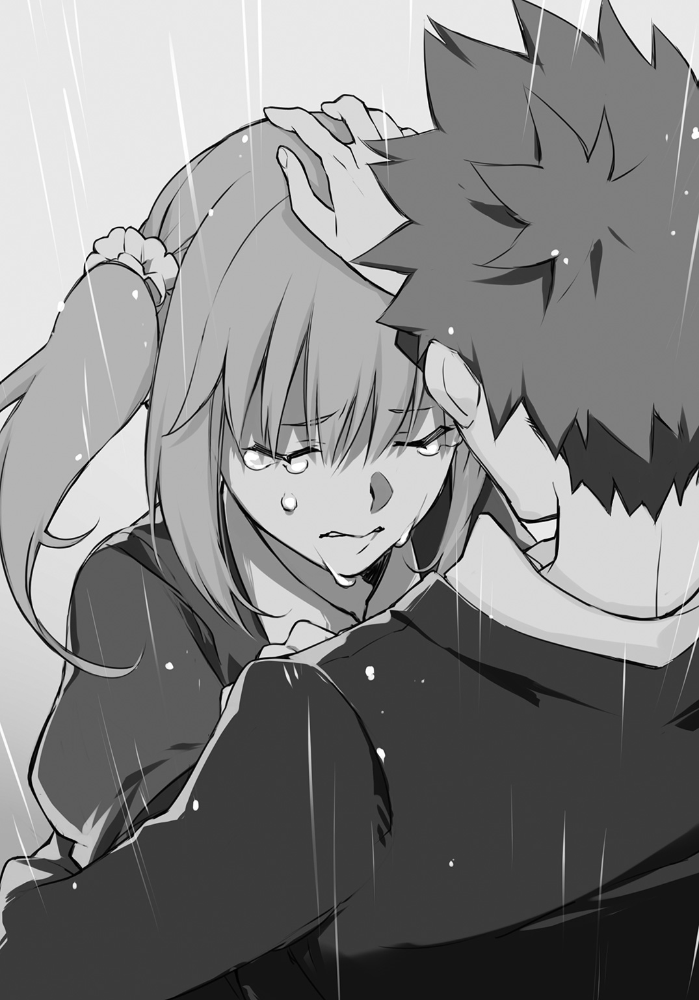
菜々美の瞳から、ポタポタと大粒の涙が溢れ出す。それと共に零れ落ちる、心からの哀訴。
「みんなを突き放すようなこと、やめようよ。わたしはいつもの希純がいいよぉ......」
菜々美は俺の胸元に半ば飛び込むようにして身体を預けてくると、幼少の頃に戻ったように泣きじゃくった。雨音にも負けない大きな声で、わんわん泣き喚く。
俺はしばらく微動だにできないでいたが、やがてスッと腕を持ち上げた。雨に濡れた菜々美の頭を、小さい子をあやすように、何度も優しく撫でる。
「......悪かった。悪かったよ。菜々美の言う通りだ。もう心配かけないから。だから泣き止んでくれよ。なっ？」
大きな宿題を課せられてしまったが、雨はいつしか止んでいた。
＊
「ねえ、本当に寄ってかないの？ パパもママも、事故のことは本当に気にしてないんだよ？ 希純が来なくなって、かえって残念がってるし。『流しの用心棒』見に来たこと話したら、何で夕飯に誘わなかったんだって、怒られたんだから。わたしはちゃんと誘ったのに......」
歌川家の玄関先で、菜々美がそう食い下がって俺を引き止める。まだ少し疑ってんのかなと苦笑した俺は、安心させるように笑いかけた。
「別にそういうことじゃないって。菜々美はずぶ濡れだし、俺に気を遣うより、さっさと風呂入って温まるのが先決だろ。関わらないようにしてるわけじゃないから、そんな心配すんなよ」
「でもほら、希純も濡れちゃってるでしょ？ びしょ濡れのわたしが抱きつい――」
そこまで口にしたところで、霧川神社でのことを鮮明に思い返したらしい。菜々美は顔を上気させ、両手をパタパタ振りながら慌てて言い直す。
「わたしが、へ、ヘッドロックかけちゃったから！」
「その照れ隠しはダメだろぉ。女子高生としてナイだろぉ」
俺の至極もっともな指摘に、あうぅと菜々美が声を洩らした。彼女はしばらく他の誤魔化し方を模索している様子だったが、やがて諦めたように、しゅんと肩を落とす。
「うぅ。じゃあ正直に。......わたしがいっぱい濡れた状態で、胸とか押し付けるようにして抱き合っちゃったから――」
「ゴメン待って。それ君のパパに聞かれたら殺されかねないから。ヘッドロックね。あれヘッドロック」
菜々美はよくわかっていない様子で、小首を傾げている。俺は菜々美の父親がもう帰宅しているであろう歌川家を恐る恐る窺い、何の異変もないことにホッと胸を撫で下ろした。
「俺なら大丈夫だよ。歩いてるうちにだいぶ乾いたし。いいから早く風呂入れ。明日学校で会う時には、いつもの俺に戻ってるから」
「ほんと？」
「ああ。約束する。ありがとな、菜々美」
菜々美は花がほころぶような笑顔を見せると、元気に手を振って家の中に入っていった。俺は口元を緩めると、踵を返して歩き出す。しばらく行ったところで自然と零れるのは、前向きだが、雲を摑むような思案の果ての呟き。
「......さて。どうしたもんかな」
「悩むまでもないことじゃない」
降って湧いた返答に虚を衝かれ、俺は声のした方を勢いよく振り返った。するとつい先ほど通過した四つ角の塀に、沙耶香が背を預けて佇んでいる。
「沙耶香。どうしてここが......」
「忘れたの？ 希純くんの位置はスマホのＧＰＳで追跡してるわ」
「あっ......」
色々とテンパッていて、完全に忘れていた。俺は渋面を作るが、沙耶香は委細構わず、俺の方へと歩を進めてくる。右足の怪我は歩くぐらいなら影響しないらしい。沙耶香は俺の眼前に立つと続ける。
「昨夜の廃工場といい、突拍子もないことをいきなり仕出かすと思ったら、そういうトラウマがあったのね。あなたは自分に降りかかる不運が、他人に飛び火してしまうことを異常に恐れている。単なる思いつきで行動してるんだったら、新しいトラウマを植えつけるほど痛めつけようかとも思ったけれど、それは止めておきましょう」
「俺のこと尾行してたのか？ いったい、いつからだよ」
「ベッド下のコレクションに夜這いの、」
「あ、結構です。もうわかりました」
掃除の際に母親にエロ関連の隠し場所がバレるというのは男子あるあるだが、まさか同級生の女子にその情報が漏洩するとは、もはや不運の域を超えている。
――いっそ殺せぇ！
そう叫びたくなる俺だったが、平静を装うためにも会話を続けた。
「さっき、悩むまでもないことだって、そう言ったよな？ いったいどういうことだよ？」
打つ手が他になく、たった一人で戦う決心をしたというのに。この袋小路を抜け出す方法が、何かあるというのか。
俺の問いかけに対し、沙耶香は不敵な笑みを刷いてみせた。そして、人を食ったようにあっさりと言ってのける。
「簡単なことよ。私をこれまで通り、ボディガードとして傍に置けばいいの」
「でも......」
「私はあなたの不運なんかに負けない。警護対象者の敵となるなら、不幸を司る女神、不吉祥天だって打倒してみせるわ。かかる火の粉を鼻歌混じりに振り払い、何も変わらぬ日常を、平穏無事に届けてみせる。菜々美さんの言葉、覚えてるわよね？ 思い出を振り返った時に、笑えるかどうかなんでしょう？ ここまで護るべきものがはっきりしているなら、私としてもやり易い」
沙耶香は握手を求めるように、俺の方に手を差し出した。そして艶やかな微笑を湛え、毅然と言い放つ。
「――私にあなたの笑顔を護らせてちょうだい」
心が震えた。
感動、したのだと思う。
沙耶香が発したその言葉は、進さんの決め台詞を彷彿とさせるもの。絶対的な安心感を与える、用心棒の真摯な言葉。
俺の取るべき行動は、もう決まっていた。俺は腕を伸ばし、沙耶香の手をがっしりと握り締めた――。
＊
最初にやるべきことはわかっている。翌朝、登校した俺がまず向かったのは、京也の席だった。俺は机の前に立つと、一つ深呼吸して声をかける。
「その、昨日は悪かったよ。急に怒鳴ったりして」
ごくりと喉を鳴らして反応を待つ。
......駄目だ。席に座ったまま、顔を上げてもくれない。暇なのか何なのか、机に空いている穴を、ペン先でほじくり返している。
俺は何とも居心地が悪くなり、辺りに視線を泳がせた。昨日の出来事は頭に鮮明に残っているだろうが、俺の反省の色を感じ取ってくれているらしい。教室にいるクラスメイトたちは、みな応援するような、温かい眼差しで俺のことを見守ってくれている。その中には、ハラハラした様子でこちらを窺う菜々美の姿もあった。
（いつもの俺に戻るって、約束したからな。ここで引き下がるわけにはいかないよな）
俺は勇を鼓し、再び謝罪の言葉を紡いでいく。
「不愉快な思いをさせただろうし、怒るのも無理はない。だけど俺は、お前のことダチだと思ってるから。だから、許してほしい。この通りだ」
俺はその場で頭を下げる。そのまましばらく微動だにしないでいると、俺の視界に映る、机の穴をほじくっていたペンの動きがぴたりと止まった。やがてそのペンを持つ手が、もう気にしてないぜと言うように、グッと親指を立てる。
俺は安堵の溜め息をついた。俺たちのやりとりを見守っていたクラスメイトも、一安心して緊張を解く。
「......よかった。許してくれてありがとう。それじゃあな、水谷」
京也の席に座る水谷にそう告げると、俺は晴れやかな顔で自分の席に向かおうとする。とそのとき、
「ちぃよーっと待ったぁーっ！」
教室のドアのところで怪鳥のような叫びが上がった。いつの間に登校してきたのか、京也である。京也は俺のもとにすごい勢いでやってくると、口角泡を飛ばして言う。
「今の見てたけどさ、何かおかしくね!? 謝る相手、違くね!?」
「え？ だって、いきなり怒鳴ったから、水谷に不快な思いさせただろうし......」
「そりゃあそうかもしんないけどさ、怒鳴られたのって俺じゃん！ 反省したのはわかったけど、まずは俺に頭下げようぜ!?」
「俺が？ 京也に？ 頭を下げるだと......？」
「なにその反応!? こっちが予想外だよ！ というかさ、水谷は何で俺の席に座ってんの？ ああいや、俺も座ったからそれはいいんだけど、何かごそごそやって――うわぁい、俺がせっせと消しゴムのカスで埋め立てた穴、綺麗にほじくり返されてるぅ。テストの時にシャーペンの先が穴の上に行くと、テスト用紙をズブッて突き刺しちゃうから埋めたのにぃ。けっこう綺麗にできてたのにぃ」
「はっはっはっ。水谷はお茶目だなぁ」
「お茶目ですと!? 日本語には悪戯とか嫌がらせとか、もっと適切な言葉ありますよ!?」
そんな、普段と変わらないかけ合いをしていた時だ。
――ジリリリリリリリリッ！
耳を聾する甲高い音。昨日聞いたばかりだからすぐわかった。非常ベルの音である。
京也が顔をしかめ、うんざりした様子で言う。
「なんだよ、また誰かの悪戯か？ 見つかったら停学もんなのに、よくやるよなぁ」
昨日の非常ベルが単なる悪戯だと思われているのは知っている。しかし本当は、ファントムが俺と沙耶香をＺⅡに誘導するために鳴らしたものだ。となると、今回も......。
「希純くん」
沙耶香が音もなく傍に寄り添っていた。俺たちはベルの音に紛らせながら、密かに会話する。
「沙耶香、これってもしかして」
「ええ。きっとファントムの仕業でしょうね」
「昨夜に話し合った通り、ファントムが襲ってきても、周囲の人間を巻き込む危険性がない限りは逃げ出さない。その方針でいいな？」
沙耶香は昨夜も俺の家に泊まりこんだ。その際に、今後のファントムへの対応について、侃々諤々の議論を交わし、ようやく一つの結論に達した。それはズバリ、ファントムを捕縛してしまおうというもの。
リスクは高いし、ボディガードの基本姿勢からかけ離れているのも重々承知だ。しかし、周囲の人間に被害を及ぼさないためには、もうその方法に懸けるしかないんだと、沙耶香を何とか説き伏せたのである。
沙耶香は肩を竦めて応じた。
「それでいいわよ。駄目って言っても、どうせ希純くんは突っ走っていくんでしょうし。まったく。警護対象者と虎穴に飛び込むボディガードなんて、前代未聞よ」
「そうか？ 俺、けっこう危ない目に敢えて遭わされてたと思うけど」
「あれは殺傷能力のない罠だとわかってたからよ。今は状況が違うでしょ。でもまあ、希純くんの睨んだ通り、室田刑事が裏で糸を引いてるんなら、ファントムを捕まえて白状させるより他ない。乗ったわ。後は、向こうがこれからどう出るつもりなのかが問題ね」
しばらく鳴っていた非常ベルの音が途絶えた。とその直後、ブツッというノイズ音がスピーカーから聞こえ、次いで声が流れる。
『親愛ナル蓮音高校生徒諸君、並ビニ関係者各位ニ告グ』
そう前置きして始まった校内放送に、俺は慄然となった。ボイスチェンジャーを介した耳障りな声。間違いなくファントムのものだ。
ファントムは端的に告げる。
『校内ニ爆弾ヲ仕掛ケタ。死ニタクナケレバ要求ニ従エ』
奇怪な放送に、クラスメイトは互いに顔を見合わせる。今は笑うとこなのか悲鳴を上げるとこなのか、判断がつきかねているといった感じだ。
こういう時に強いのは単純バカである。京也がすぐさま結論を出し、開けっ広げに笑った。
「なはは、何だこの放送!? ウチの学校はいつから避難訓練にジョーク入れるようになったんだ!? 爆弾って、」
その刹那、鼓膜を打ち破らんとする爆発音が轟いた。皆が一斉に、本能的に身をしゃがめる。上がる悲鳴。震える窓ガラス。沙耶香だけが俺の身を護るため、覆い被さってくる。
先ほどとは打って変わった静寂が忍び込んできた。誰しもが軽いパニックに陥っているとき、菜々美が窓の外を指差し、掠れた声で言う。
「き、旧校舎......」
俺と沙耶香が跳ね起きるようにして窓際へと向かった。他の建物からは少し離れた場所に位置する旧校舎から、黒煙が立ち昇っている。建物が大きく損壊しているという風ではないが、三階の一角にある窓ガラスはほとんどが割れていた。そこから吐き出される煙と、微かに望める紅蓮の炎。遅ればせながら鳴る旧校舎の火災報知器の音が、やけに不穏に響く。
クラスメイトも窓際に鈴なりになり、啞然とした様子で旧校舎を眺める。その口々から零れ落ちるのは、うわ言めいた呟き声。
「おい、マジかよ」
「何なのこれ？ ねえ、何なのよ？」
「け、警察呼ばないと」
皆が浮き足立つなか、沙耶香が短く問いかけてくる。
「あそこには授業を行うような教室、なかったわよね？」
「あ、ああ。物置になってるだけだ」
「ファントムもそのあたりは考えてのデモンストレーションでしょう。人的被害はないと考えていいわ。落ち着きなさい、希純くん」
頷くのが精一杯だった。すると沈黙していたスピーカーから、ファントムの声が再び流れる。
『悪戯ノ類デナイコトハコレデ証明サレタハズ。コチラノ要求ハ一ツ。私ニ歯向カッタ二人ニ、ゲームニ参加シテモラウ。所要時間ハ三十分。ソノ間ニ私ノモトニ辿リ着ケタラソチラノ勝チ。起爆スイッチヲオトナシク渡ス。辿リ着ケナカッタ場合ハ、全テガ塵ニカエル。モチロン、ゲームノ間ニ校内ノ者ガ外ニ逃ゲヨウトシテモ同ジ。来ル者ハ拒マナイガ、去ル者ガイレバペナルティーヲ与エル』
――健闘ヲ祈ル。
そう結んで放送は終わった。沙耶香もさすがに毒気にあてられた態で、冷や汗を浮かべる。
「参ったわね。全校生徒を人質に取った上で挑戦状を叩きつけてくるなんて。希純くんが胸を触ったこと、よっぽど頭にきたんでしょうね」
「え？ そ、そうなのかな？」
「バカね冗談よ。決着をつける気になったんでしょう。希純くんが話していた、室田刑事がファントムの依頼主という話も、俄然信憑性が出てきたわね。ファントムは『来る者は拒まない』なんていう条件をつけた。これで室田刑事も、大手を振って校内に入ってこれる。私を狙うことも可能になる」
沙耶香の言う通りだ。ファントムが門戸をわざわざ開放したのは、外部の仲間を招き入れるために違いない。これで全てのプレイヤーが、このいかれたゲームに参加することになる。
「クライマックスってことか。何にせよファントムを見つけ出さないと。まずは放送室に......」
「本気で言ってるの？ 招待状ならとっくに届いてるじゃない。無関係な人間がしばらく近づかないよう、人払いした場所があるでしょう？」
「あっ」
俺は窓の外を見やる。黒煙を上げ続ける旧校舎。一度爆発の起こったあの場所なら、爆弾処理班でも到着しない限りは、消防士すら危険視して近寄らないはず。ゲームの舞台にはもってこいだ。
すぐさま向かうべきだろうが、この場にいる菜々美やクラスメイトのことが気になった。パニックを起こして校門へ殺到するなんて事態に陥れば、俺たちは戦わずして敗北してしまう。沙耶香もそのことを憂慮しているのか、すぐには動き出さないでいる。
的確な指示が発せられたのは、その時だった。
「みんな、とにかく避難訓練の通り、校庭に避難しようぜ！ これだけの騒ぎなんだ、助けはきっと来る！ それまで落ち着いて行動するんだ！」
京也の言葉に皆がハッとなった。マトモなこと言ってるけどこいつの指示で動くのなんかヤだなという雰囲気になった。
しかし、京也は空気を読めず、次々に下知をくだす。
「周りのクラスにも呼びかけろ！ 窓開けて避難指示！ 誰か放送室に走って――いや、あそこは駄目だ。犯人と鉢合わせする可能性がある。みんな、どうせ校則破ってスマホや携帯持ってきてるだろ!? 離れた校舎にいる知り合いに片っ端から連絡とって、すぐ避難行動に移るよう言うんだ！ いいか、パニックだけは起こすな！ 冷静に対処するんだ！ ......何だよ手ぇ足りねぇんだ、さっさと動け！ 死にてぇのか!!」
京也の必死な呼びかけに、弾かれたように動き出す者たちがいた。よく見ればそれは、マラソンの時間に京也を隊長と慕っていた面々。彼らのうち数人が、京也に駆け寄り話しかける。
「ごめんよ隊長。マラソンで吐いてる隊長を見たとき、こいつねぇなって、そう思って」
「俺、隊長についていくよ！ 時折」
「隊長、他に何をすればいい？ ご命令を！」
鮭のように回帰してきた隊員を前にして、京也は感極まった様子で瞳を潤ませた。嗚咽を堪え、自分の周囲に集まっている隊員をぐるりと見渡す。
「お前たち！ それでこそ、それでこそ京也隊のメンバーだ！ 愛してるぜ!?」
京也はバッと両腕を広げ、「さぁ、俺の胸に飛び込んでこい！」とばかりのポーズを取った。その様子に、京也隊のメンバーが口々に叫ぶ。
「今そういうのいいから！」
「切羽詰まってんだよ空気読めよ！」
「責任を丸投げしてんだから働け、馬車馬のように！」
怒濤のシュプレヒコールが京也を襲った。磔にされたキリストのような格好をしたまま、京也はカッと目を見開いて言う。
「きっと照れ隠しー!!」
......えぇと。何だろうね、コレ。
よくわからない状況ではあるが、この場は京也たちに任せて大丈夫そうだ。俺は沙耶香に目配せし、二人で教室のドアへと向かった。するとそのとき、背後から声がかかる。
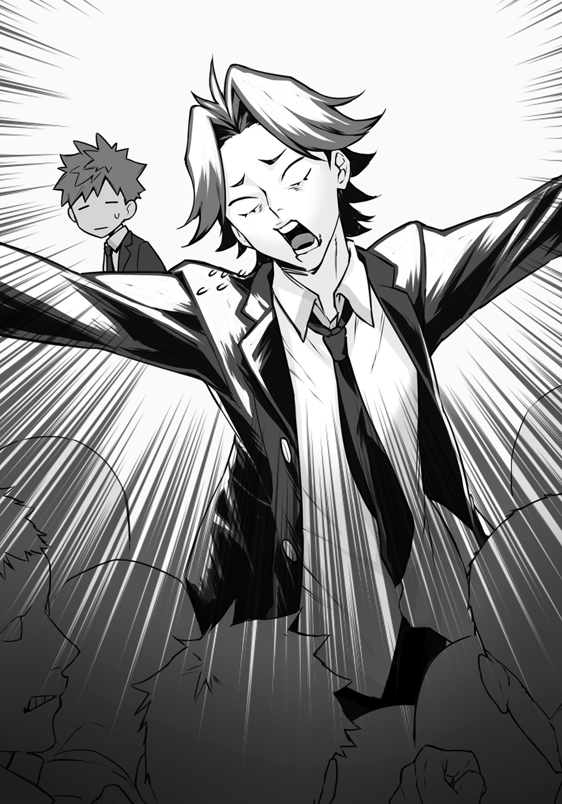
「希純、どこ行くの!?」
振り返れば、菜々美が悲痛な表情で俺たちのことを見ていた。昨夜のこともあるし、俺が窮地に立たされているということを察しているのかもしれない。
「放送で言ってた二人って、もしかして希純とさっちゃんなの？ これからさっきの声の人のところに行くの？」
菜々美、京也、水谷。クラス全員の視線が、俺と沙耶香に集中する。期待に満ちた眼差しが、俺たちに向けられる。
一カ月前に搭乗した、飛行機での出来事が脳裏を過ぎった。あの時の俺は急患を救うヒーローではなく、単に尿意に負けた高校生だった。しかし、今は違う。座席から立ち上がることを許された人間。皆の命を預かった、進さんのような存在。
俺は毅然と言った。
「いや、期待させて悪い！ 単なるトイレだ！ 沙耶香の！」
沙耶香が脊髄反射の如き速さで、ガバッと俺の方を見た。
「えっ!? そっ、なにを!?」
沙耶香の顔には初めて焦りの色が滲んでいるように見えた。頰も微かに上気し、皆の前で通していたおしとやかなキャラが崩れかけ、殺気が洩れ出る。
菜々美が我がことのようにうろたえた。
「ち、ちょっと。そういうことはオブラートに包んで......」
「言葉選んでる場合じゃないだろ。沙耶香は足を怪我してるから、何かあった時に背負って非難できるよう、俺もついていく。菜々美は先に避難してくれ。京也、皆の誘導頼んだぞ」
「おお！ いくぞヤローども！ フォ～メ～ション～、エーックス！」
京也が腕で×印を形作った。その瞬間、京也隊のメンバーが、教室から廊下まで散開。各々が流れるような滑らかさで腕を振り、統一された意思のもと指示を出していく。
「はい、一列に並んでくださーい。押さないでー」
「瓦礫が飛んでくるかもしれないので、学生鞄で頭部を守ってくださーい」
「慌てないで大丈夫ですよー。走らないでくださーい。こちらが最後尾になりまーす」
地味かつ堅実な誘導で人波ができた。菜々美も俺の方を気にしながらも、やがてその波に加わり、避難を開始する。
俺は一つ頷くと、沙耶香に言った。
「よし、行こう」
「よし、じゃないわよ。さっきのは何？ 日頃の仕返しのつもり？」
半眼になってそう問い詰められた。けっこう根に持つタイプかもしれない。
「し、仕方ないだろ。ああでも言わなきゃ、誤魔化せそうになかったし」
「他にやり方はいくらでもあるでしょう。頭を使いなさい。だいたい、こういう大事な場面で尿意に苛まれるのはあなたの役回りでしょう」
あんまりな評価に反論したいが、機内での前例があるので言い返せなかった。
全てお見通しといった感じの沙耶香は、ほぅと溜め息をついて続ける。
「まあいいわ。それより、あれでよかったの？ 進さんみたいなヒーローになり損ねたわよ？」
「柄じゃないだろ。俺は疫病神で手一杯だよ」
「ふふっ。それもそうね。さてと。お喋りはこれくらいにしましょうか」
「ああ、急ごう」
俺は避難する人波とは反対方向に、旧校舎を目指して足を踏み出した。沙耶香も並び、傷の痛みを感じさせない足取りで、颯爽と歩き出す。
「頼りにしてるぜ、用心棒」
「安心なさい、疫病神」
それは二人の間で交わされる、信頼に満ちた言葉だった。
＊
ファントムの居城だとわかっているからだろうか。古色蒼然とした旧校舎が、まるで魔窟さながらの威容で俺たちの前に立ち塞がる。
俺は頰を引きつらせ、ぽつりと呟いた。
「おぉぉ。こんなプレッシャーのある建物だったか、ウチの旧校舎」
「突っ立っていても仕方ないわ。虎穴に入るとしましょう。私の後を離れずについてきて。どんなトラップが仕掛けられているかわからないから、余計なものに手を触れないようにね」
沙耶香に続き、俺は旧校舎の中へと足を踏み入れた。掃除の時間以外、滅多に人が立ち入らない場所だからであろう。黴臭い匂いが校舎内を満たし、空気も澱んで埃っぽい。
俺は油断なく周囲の様子を窺ってみた。俺たちは東玄関から入ったのだが、西側へと伸びる廊下は途中で暗闇に没している。西側にはちょうど裏山が迫っており、その山陰が旧校舎を徐々に飲み込んでいくので、日当たりがすこぶる悪いのだ。整然と並ぶ教室は全て閉ざされ沈黙を守っている。このどこかにファントムが潜んでいるなら、見つけ出すのは至難の業だろう。
（くそっ。残り時間は二十分ってとこなのに、こいつは無理ゲーだろう）
俺の焦りを察したのか、沙耶香が諭すように言った。
「落ち着きなさい。ここまできて、ファントムもかくれんぼをするつもりはないでしょう。ラスボスは城の最上階というのはお決まりでしょう？ きっとファントムは屋上で私たちを待ち受けている。そこに至るまでのトラップを、時間内に潜り抜けることができるかどうかよ」
沙耶香は玄関のすぐ傍にある東階段に向かうと、慎重な足取りでステップを上る。俺も慌ててついていくが、すぐさま沙耶香が腕を突き出し、俺を制した。
「足元にワイヤーが張ってある。ただ殺すだけなら、遠隔操作でドカン、なんていうのが簡単でしょうに。ファントムなりの美学かしらね。解除するからちょっと待ってて」
「ああ、わかった」
何とも心強い用心棒だ。俺一人だったら間違いなくトラップに引っかかっている。
沙耶香の前に出ない限りは安全そうだ。俺は手摺りに近寄ると、そっと首を伸ばして上階を見上げた。期待はしてなかったが、三階まで続く階段の手摺りが、つづら折りとなって目に映るだけで、ファントムの影も形も――
「希純くん！」
突如として沙耶香に腕を引かれた。何事かと思う間もあればこそ、俺がつい今しがたまで首を伸ばしていた空間を、斜めにカットされたガラスが高速落下。床に激突し、硬質な音を立てて粉々に砕け散る。
「んなっ!?」
俺は驚愕に目を剝いた。晒された首めがけ落下してくる、カットされたガラスの刃。もしあのまま、阿呆のように見上げ続けていたら――
いやいや、駄目だ。そんな恐ろしいこと想像したら、先に進む勇気が、
「へぇ。ガラスのギロチンとは恐れ入ったわね。透明性のある刃だから、気づいた時には首が飛んでる、なんてこともありそうね。手摺りの外にセンサーでも仕掛けてあるのかしら。希純くん、よかったわね。少しでも助けるのが遅れたら、あなたの頭はサッカーボールみたいに転がって......うぅん。あなたは少しおつむが弱いから、バスケットボールのように跳ねていたかもしれないわね。滑稽だわ」
「ヒドイ！ 俺いま死にかけたのに！」
「希純くんが余計な好奇心を起こすからいけないのよ。ワイヤーは囮だった。解除している間に、手持ち無沙汰なポチがどう動くか計算していたのね」
沙耶香はさらりと俺をポチ呼ばわりし、階段を再び上り始めた。踊り場を抜け、二階に達し、さらに上階へと向かうというところで、沙耶香は呆れたように溜め息をつく。
「参ったわね。最短距離で行くのは無理みたい」
どういう意味か最初はわからなかったが、沙耶香の隣まで行くと、その理由がわかった。沙耶香が仰ぎ見る先、三階へと通じる階段が、堆く積まれた机や椅子のバリケードによって塞がれているのだ。
「一つ一つどかしていたら、タイムアップになるでしょうね。遮蔽物のない、しかも暗くて見通しの悪い廊下は行きたくなかったけれど、仕方ないわ。廊下を渡って西階段に回りましょう」
「何なら一度下りて、外から西階段に行くか？」
「さすがバスケットボール。ここまで手の込んだことをしているのだから、西階段はきっと一階部分が塞がれているはずよ。戻ると二度手間。さっさと行くわよ、駄犬」
「ひどい！」
俺の憤懣を完全にスルーして、沙耶香は二階の廊下を進み始めた。腕時計を確認すると、タイムリミットまであと十七分。
「まずいぞ。あと半分ってところだ」
「わかってるわ。できれば急ぎたいところだけれど......」
沙耶香が歩みを止めた。彼女が眉をひそめて見据える先には、天井にある埃を被った古い蛍光灯が。
「一部分だけ埃のついてない箇所がある。誰かがごく最近に触れた形跡ね。迂闊に真下を通らないほうがいいわ」
「よくそんなのわかるな」
「希純くんの観察力が足りないだけよ。調べるのに踏み台がいるわね」
「踏み台って言っても......」
俺は辺りを見渡した。廊下に落ちているのは埃くらいのもので、踏み台にできるようなものは見当たらない。閉め切られた教室には机くらいあるだろうが、無警戒にドアを開けるのはさすがに危険だろう。
沙耶香が急かすように告げた。
「聞こえなかったの？ 踏み台がいるわ」
「わかってるよ。あっ、階段まで戻ればバリケードに使われてた机があるか」
「何を言ってるの。二本の足と二本の腕がある動物が四つん這いになれば、立派な踏み台になるじゃない」
「え？ あんたこそ何言ってんの？」
踏み台って俺のことだろうか。
俺のことでしょうね。
「時間がないわ！ 早く跪きなさいこの間抜け!!」
「は、はい！」
沙耶香の一喝に尻を蹴飛ばされた俺は、反射的に四つん這いになった。なってしまった。何かとんでもなく大事なものを失ったような気分になり、脂汗がぽたぽたと床に落ちる。
「よろしい」
沙耶香の満足げな声が頭上から降ってきた。次いで背中にかかる彼女の体重。決して重くて耐えられないほどではない。むしろ想像以上に軽い。それはありがたいことなのだが......。
「ブーツ、脱がないんスね」
「履いてないと痛くないでしょう？」
「あぁ、うん。......うん？」
ブーツの踵が肩甲骨と腰骨の辺りを踏み、さらにぐりぐりと蹂躙する。
痛いなー。この動きいるのかなー。
そんなことを考えていると、今度は俺の上で軽くジャンプ。思わずウゲッと声が洩れ、さすがに振り仰いだ。
「おいっ、今の動きは間違いなく必要ない――」
見えた。
この角度からでは目隠しの態をなさないスカートの中身。綺麗なヒップラインと、精緻なレースが施された真紅の下着が目に突き刺さる。沙耶香は足で俺を痛めつけながらも、やるべきことは熱心に行っているらしく、俺に下着を見られたことに気づいていないようだった。俺を踏みつけるため、そのすらりと伸びた足を動かす度に、お尻が艶めかしく躍動する。
「んなっ!?」
俺は高速で目を逸らしたが、動揺し過ぎて四つん這いのまま一歩踏み出してしまった。当然、上に乗っていた沙耶香がバランスを崩す。天性の平衡感覚で落下こそしなかったものの、遥か頭上の蛍光灯がある辺りで、何かがカチッと音を立てるのを聞いた。
「あっ......」
マズイと思ったがもう遅い。沙耶香の氷点下の声が、氷柱の如き鋭さで落下してくる。
「......希純くん。何をしているの？」
「ご、ごめんなさい......」
闇に沈む廊下の先から、ゴゴゴゴという低い音が響いてきた。四つん這いになっている両手から伝わる、微かな震動。嫌な予感しかしないが、俺は目を凝らして廊下を見詰める。すると、物置となっているこの旧校舎に保管されていたのだろう。体育祭で使用された、玉ころがしの大きな紅い玉が、こちらめがけて転がってきていた。
沙耶香が背中から下り、俺を引き起こしながら言う。
「ハリボテといっても、中に何が仕掛けられているかわからない。一度階段まで退きましょう」
「お、おう」
しかし次の瞬間、俺たちの後方にあった教室のドアが、廊下側へと吹き飛んだ。ドアを内側から突き破ったものの正体は、丸太で組まれた壁であり、俺たちの退路を断つ。どうやらここまでがワンセットの罠であるらしい。
紅玉がスピードを上げて迫ってくる。まるで計ったかのように廊下の幅とぴったりで、逃げるスペースが見当たらない。
トレジャーハンターでもなければ体験しないような大がかりな罠に浮き足立った。口の中が焦りと緊張で干上がってしまい、呂律の回らない舌で沙耶香に問いかける。
「どど、どうする!?」
沙耶香は突如、俺と手を繫いだ。そして突進してくる紅玉を睨み据え、端的に言う。
「玉の上部にはスペースがある。三角跳びの要領で、壁を駆けてかわしましょう。私は右、希純くんは左よ」
「んな無茶な！ 忍者じゃねえんだぞ!?」
「あなたの身体能力ならやれるわ。手を繫いだまま行くから、希純くんが失敗すれば、私も運命を共にすることになる。頼んだわよ」
「いやいやいや、ムリムリムリ！ というか、沙耶香だって足を怪我してるだろ!?」
「頑張るわ」
おざなりな精神論を述べた直後、沙耶香が紅玉めがけ走り出した。手をしっかりと握られている俺も、つられるようにして駆け、沙耶香と並走する。速度が増し、身体が風と一体化する。
「あぁクソッ！ やってやる！ やってやるよ!!」
紅玉との相対距離が一気に縮まる。今さら後には退けない。緊張がピークに達し、紅玉に激突する寸前、
「今よ！」
勢いのままに床を蹴って跳躍。俺は左へ。沙耶香は右へ。互いの手を握り締めたまま、壁を駆け上る。
それはさながら舞踏のようだった。完全にシンクロした速度。左右の壁に刻まれるステップ。しっかりと繫がれたアーチの下を、鮮やかな紅玉が潜り抜けていく。
重力から解き放たれたかのように、壁を走りながら〝互いを見上げる〟という、なんともファンタジーな舞踏に幕引きが迫る。その刹那に交わされる、俺と沙耶香の弾けるような笑顔。
俺は床に着地すると、俺たちに掠りもしなかった紅玉を振り返り、ガッツポーズする。
「よっしゃあ！」
紅玉は突き出した丸太に激突すると、一瞬にして炎に包まれた。どうやら中に可燃性の物質が仕込まれていたらしい。ハリボテはすぐさま燃え尽きるが、その際の煙に反応し、せっかく鳴り止んでいた旧校舎の火災報知器が、再び甲高い音を響かせた。
「......ファイナルラウンドのゴングってところか」
そう独白して沙耶香に視線をやった俺は、驚きに目を見開いた。沙耶香が負傷している右足を押さえ、その場に蹲っていたのだ。
「どうした、大丈夫か!?」
俺は慌ててしゃがみ込み、彼女の容態を確かめる。今ので傷口が開いたのか、さっきまで真っ白だった包帯に血が滲んでいた。沙耶香の額に汗が浮かび、苦痛の大きさを訴えかけてくる。
それでも、沙耶香は気丈に口の端を上げた。
「心配しないで。少し傷が開いただけ。問題ないわ」
「あのなぁ。そんな一人で気張るなよ。用心棒と雇用者って、どっちか欠けても駄目な、運命共同体みたいなとこあるんだから」
「あら。それって愛の告白みたいね」
「茶化すな、俺は真面目に話してるんだ」
俺の怒りを感じ取ったらしい。沙耶香は彼女にしては珍しく、戸惑うように目を伏せた。そこに生まれた隙を衝いて、俺は沙耶香の腕を肩に回して立ち上がる。
「ちょっ、希純くん!?」
「用心棒としてのプライドはあるだろうけど、肩を貸すくらいならいいだろ？」
「でも、」
「ああもう、いいから沙耶香はトラップに気を配れよ。しばらくは俺が右足の代わりするから」
わかったな？
そう念押しするために沙耶香の方を向いた俺は、そのまま硬直した。思った以上に沙耶香との距離が近い。互いの息遣いを感じるほどの位置に顔があるし、肩を貸してるんだから当たり前なのだが、密着した身体から直に体温が伝わってくる。
全身がカッと火照った。これは間違いなく沙耶香に気取られてイジられるなと、半ば覚悟を決めたが、彼女は彼女で慌てたように顔をフイと逸らす。その口から紡がれるか細い声。
「......ありがとう」
「へ？ な、何だよ急にしおらしくなって」
「感謝してるからお礼を言っただけよ。それより希純くん、もう半歩だけ右側を歩いて」
「お、おう」
どこか気恥ずかしい思いと共に、俺は足を踏み出した。何か会話の接ぎ穂はないものかと、この胸の詰まるような沈黙を打ち破る術に苦心していると、前方で何かがキラリと光る。
閃光の如き飛来物が、俺の左頰を掠め去っていった。耳元で生じる、穿たれた空間の悲鳴じみた風切り音。
ドキドキと弾んでいた心臓が、バクバクバクと違った心音を奏で始める。俺は背筋を濡らす冷や汗を感じながら、喘ぐように言った。
「い、今のって矢じゃなかった？」
「さすがの動体視力ね。紅玉をかわしたとき、廊下の先に弓矢が設置されてるのが見えたの」
「じゃあ言おうよ！ 危ないって教えてよ！ もしかして顔を背けたのも、照れ隠しじゃなくて今の矢をかわすためか!?」
当然だという返答があるかと思いきや、沙耶香は一瞬だけ言葉に詰まった。しかしすぐさま、俺に向けて悪戯っぽい笑顔を浮かべ、端的にこう告げる。
「それはヒミツ」
心臓が暴れるのを止めない。危地を脱した余韻か、はたまた別の何かか。こういうのも吊り橋効果というのだろうかとふと考え、いやいや吊り橋効果を持ち出したら、それってつまり恋心とかそういう意識をしてるってことになるじゃないかと、自ら墓穴を掘る。
「ああもうっ、さっさと先に進むぞ！ でも今度は危険なところはちゃんと言ってね！」
「心配しないで。あなたの命にかかわるようなことはしないわ」
その後もスパイクボールやら何やらの罠が襲いかかってきたが、沙耶香の的確な指示のおかげでからくもくぐり抜けることができた。そうしてようやく辿り着いた、屋上へと通じる非常口の前。俺は沙耶香に肩を貸したままの状態で、彼女と間近で視線を交わし、頷き合った。沙耶香がドアを調べ、何の仕掛けも施されていないのを確かめると、ゆっくりとドアを開ける。
冷たい風が旧校舎に吹き込んできた。目を細めたその先に、ファントムの姿がある。
俺と沙耶香が屋上に一歩を踏み出す。俺たちが出てきた非常口の他には、屋上に通じるドアはないようだった。非常口の傍に錆の浮いた給水塔が屹立しているが、他には何もないがらんとした空間だ。罠らしいものは見当たらないが、もちろん油断はできない。
屋上の中ほどに佇むファントムは、仮面を外すと俺たちのことを、自らの双眸ではっきりと見据えた。
「思ったよりも早かった。優秀な二人一組」
「お世辞はいいわ。早く起爆装置を渡して」
「それならここにある。取りに来るといい」
ケープを跳ね上げたファントムの手に、ボールペンによく似た形状のものが握られていた。そのヘッドには赤いボタンがついている。
俺が沙耶香を伴って一歩を踏み出そうとしたとき、沙耶香がかぶりを振って言った。
「ここまででいいわ。辺りは安全そうだから、希純くんはここで待っていて」
「何言ってんだ。ここまで来て」
「忘れたの？ 私は希純くんのボディガードよ。決着は私がつける」
「でもお前、足を怪我してんだぞ？」
「大丈夫よ。ここまで休ませてもらったから、だいぶ痛みも収まったわ。それとも、希純くんが命を預けた用心棒は、これくらいの怪我でへこたれるのかしら？」
俺は『流しの用心棒』を思い起こす。進さんは多勢に無勢であろうと、手傷を負っていようと、決して弱音を吐いたりはしない。助けを求めてきた者の笑顔を護るため、自らの使命に全力で立ち向かっていく。
沙耶香もそうなのだろう。そうあろうとしているのだろう。
だったら、沙耶香に命を預けた者ができることといえば決まっている。俺は肩に回していた沙耶香の腕をそっと離すと、彼女の背中を押しながら声をかける。
「頼んだぜ、沙耶香。お前は世界一のボディガードだ」
沙耶香の面に、嬉しそうな純粋無垢な笑みが浮かんだ。彼女はまだ少し足を引きずりながらも、自信に満ちた足取りでファントムのもとへと歩いていく。二人の距離が縮まり、あと数歩という位置まで近づいた時だ。階段を駆け上ってくる足音が背後から聞こえ、隼人が屋上へと飛び出してきた。隼人は俺のすぐ隣で拳銃を抜いて構える。
「動くな！ 両手を上げろ！」
おおぉ、スゲー。刑事ドラマみたい。
そんな感想を抱いていると、隼人がチラリと俺の方を見て言う。
「遅くなってすまない。向くんたちがどこにいるかわからなくてね。火災警報器が鳴って、ようやくこの場所の捜索に来たんだ。怪我はないかい？」
「はい。あの、室田刑事は？」
「室田さんは途中にあった丸太のバリケードに腹がつっかえて、そこで足止め食らってる」
「......そすか」
何とも間抜けな状況だ。しかし、沙耶香の命を狙う万寿夫がここに現れないのは好都合だ。このまま隼人がファントムを捕らえ、依頼主の名前を吐かせれば、全てが決着する。
沙耶香とファントムが隼人に視線を向けた。二人はほとんど直線上にいるので、二人ともが銃口に晒される。
隼人の銃の腕前はどうなのだろうか。あまり血気に逸ると、沙耶香を誤射してしまう可能性もあるのではないか。
「宇山刑事、相手は逃げ場ないんですし、ここは落ち着いて......」
そう声をかけたとき、両手でしっかりと銃を握る隼人の、薬指に光る結婚指輪が目に入った。そういえば、菜々美の家の裏庭で話をした時も、その結婚指輪が目に留まったことを思い出す。
脳裏に蘇る隼人の言葉。
〝......僕にだって大切に思う者はいる。君だってそうだろう？〟
だからこそ、来栖源之助や沙耶香を憎む万寿夫の気持ちも理解できると、そう話していた隼人。
俺は結婚指輪を間近で眺めながら、ぽつりと口を開く。
「宇山刑事。署で一緒にご飯食べたとき、コンビニや店屋物ばかりだから味に飽きたって、親子丼にココアぶっかけてましたよね？」
「悪いが雑談なら後にしてくれないか。今はそれどころじゃ、」
「奥さんいるのに、何で愛妻弁当や、家での手料理食ってないんです？」
隼人の手がぴくりと動いた。
俺の中で恐ろしい仮説が高速で組み上がっていく。
「室田刑事が言ってました。娘のお腹には子供がいたって。一般的に考えれば、それって既婚者だったってことですよね」
なぜこれまで気づかなかったのだろう。テレビドラマなどで周知の事実となっているではないか。刑事は基本、相棒と二人一組で事件に当たる。死神の捜査も、万寿夫が単独で行っていたとは考えにくい。
だとすれば、死神が警告を発した相手は、もう一人いたのではないか。
万寿夫と、もう一人の刑事にとって、最も大事な存在が狙われたのだとしたなら......。
俺はゴクリと唾を飲み込む。
「最初見た時は気づかなかったけど、その結婚指輪、刻印がされてますね」
一言も発さない隼人が、サイトで狙いを定めている。
銃口が向く先は、本当にファントムなのか。
「隼人の『Ｈ』の他に、『Ｓ』ってありますけど――」
そうして俺は、その決定的な言葉を紡ぐ。
「あなたの奥さんって、室田刑事の娘、咲さんだったんじゃないですか？」
トリガーに力が込められるのを察した俺は、隼人の腕めがけ猛然と飛びかかった。銃口が天を向いた途端、轟音が耳朶を打つ。鼓膜が破れたかと思うほどの音の波濤に、身体が本能的に萎縮する。
隼人は刑事であり、すなわち何らかの武道の有段者だ。俺の隙を見逃すはずもなく、痛烈な膝蹴りが腹部を襲った。苦悶する間もなく、後頭部に鋭い衝撃。恐らく銃のグリップで打ち据えられたのだろう。あまりの痛みに視界が一瞬ブラックアウトし、その場に膝を突く。
「希純くん！」
「動くな！」
銃口が再び沙耶香に向く。隼人はこれまでの、気のいい好青年の仮面を引き剝がし、俺のことを冷淡に見下ろした。
「勘のいいガキは嫌われるぞ。せっかく誤射だったということを証言してもらうため生かしといてやろうと思ったのに、故意だとバレちゃあそうもいかない」
「クソッ。あんたも、室田刑事とグルなのか？」
苦々しい俺の問いかけに対し、隼人は人を食ったようにあっさりと答える。
「は？ 何だ、室田さんのこと疑ってたのか。ははっ、ムリムリ。あの人は根っからの刑事だからな。口ではどんな威勢のいいこと言おうが、法を犯すようなことはしないよ。......でもまぁ、それもいいかもなぁ」
隼人が邪な笑みを浮かべるのを見て、俺は眉をひそめた。隼人は頭の悪い生徒に教え聞かせるように、得々と言う。
「だぁかぁらぁ、室田さんが乱心してお前らを撃ち殺したから、俺がやむなく射殺したっていうシナリオに変えるんだよ。うん、悪くない。俺って天才だな！ ははははは！」
「......なに言ってんだ......なに言ってんだよ、あんた！」
銃口がスッと動き、俺の額を狙う位置で止まった。俺はゴクリと唾を飲み込む。沙耶香が僅かに前傾姿勢になるのを目の端で捉えたが、距離があるので迂闊に飛び出せないのだろう。悔しげに唇を嚙む。
この場で唯一、平静な様子で佇むのはファントムだけである。彼女は起爆装置に指をかけたまま、泰然と俺たちのやりとりを見守っている。
隼人は虚ろな目で、ぶつぶつと呟いた。
「そうだよな。そうだよ。よくよく考えれば、室田さんも同罪だ。俺は言ったんだ。危険な捜査は止めようって。国際警察もマークしてるような殺し屋、俺たちみたいな所轄の刑事の手に負えるもんじゃないんだ。それなのに首を突っ込んで、挙句に咲は命を落とした。同罪だ、同罪。同罪なら、殺さなきゃ。そうだ、殺さなきゃ」
俺は全身に寒気が走るのを感じる。
――狂ってる。
大切な人を亡くす恐怖は俺も体感したことがある。もし実際に、あのまま菜々美が目を覚まさなかったら、俺も隼人のようになっていたのだろうか。
「......んなわけないだろ。ふざけんなよ。こんな、単なる八つ当たりで人を殺すってのか？」
「違う！ これは報いだ！」
傲然とそう叫んだ隼人は、苦しげに顔を歪めた。わなわなと身体を震わせながら、悲哀に満ちた声で呟く。
「咲はな、どんな料理も、すごく美味しそうに食べるんだ。でも、俺は彼女を護ってやれなかった。咲はもう、美味い飯を口にすることすらできない。だから俺も、咲と同じように食の楽しみを殺したよ。吐きそうになるのを我慢して、不味いジュースや、ココアをぶっかけた飯を食ってきた」
隼人の目が徐々に血走り、口から涎が垂れ落ちた。隼人はバッと腕を振り、猛る。
「それなのに、他の奴らはどうだ!? のうのうと生きて、美味そうに飯を食ってやがる！ みんな報いを受けるべきなんだ！ 咲の苦しみを理解すべきなんだ!!」
隼人は味覚音痴なのだと思っていたが、どうやら違ったらしい。
しかしその意味を知っても、同情は欠片も浮かばなかった。おぞましいという思いが、さらに色濃くなっていく。
「なに勝手なこと言ってんだよ。あんたがやってんのは復讐ですらないだろ。あんた、さっき言ったよな？ 国際警察がマークしてるような殺し屋、俺たちには手に負えないって。罪を償わせるべき本来の相手、見つける気すら起こらないんだろ？ 自分の力不足を棚に上げて、他人のせいにしてるだけじゃねえか！」
俺はとことん運が悪い。
けれど、その運の悪さを誰かのせいにしたことは一度だってない。川の事故を経験した幼少期は、不運が襲ってきてもそれを跳ね除けるようなスーパーマンになればいいのだと、身体を鍛えることで自信をつけて立ち直った。これで自分の身も、俺の不運に巻き込まれる奴も、きっと護ることができると。
残念ながら、俺はスーパーマンにはなれなかったけれど。
年齢を重ね、その事実に気づいてしまったけれど。
それでも、進さんのように、周りの者を颯爽と助けるスーパーヒーローには今でも憧れを抱くし、菜々美の言葉で、笑顔を絶やさぬ努力を、沙耶香と共にファントムと対決する道を選び、今こうしてここにいる。誰かのせいにしてウジウジしてる奴なんかとは違う。
だからあんたの不運に同情なんかしてやらない。
不運に甘えて歩みを止めた人間に、共感なんか抱いてやらない。
俺は隼人のことをキッと睨み返した。隼人は眉を吊り上げ、額に浮かぶ青筋を怒張させる。
「何だ、その目は？ 俺の銃口はお前の額を狙っている。お前の頭を今すぐにでもぶち抜けるんだぞ！」
「やってみろよこの卑怯者！ てめぇの保身まで考えといて、何が報いを与えるだ！ たとえ間違った主張でも、正々堂々とするのが筋だろうが！ 自分の手で復讐遂げたいなら、最初から決闘でもやりやがれ！ 安全なところから狙うために、しかも犯人と誤射したなんていう言い訳を作るために、暗殺者まで雇いやがって！」
俺のその言葉に、隼人の表情が動いた。彼の顔に浮かんだのは、なぜか困惑の色。
不審に感じたその瞬間、ザリッという音が響いた。隼人の銃口が素早く向きを変える。まるで踏ん張るように、足を肩幅に開いたファントムに照準を合わせる。
「勝手に動くな！ お前から死にたいか！」
ファントムは銃口を向けられても、無表情のまま佇んでいた。その小さな唇から紡がれる言葉も、凪いだ湖面のように平淡なもの。
「私はもう動かない。動く必要もない。ただ、訂正する必要は感じる。私の依頼主はそこの男じゃない」
そうしてファントムは、短くこう告げた。
「私の依頼者は――来栖沙耶香」
ファントムが唐突に、手にしている起爆装置のスイッチを押した。その刹那、爆発音が轟く。その現場は、学舎である校舎群でも、皆が退避している校庭でもなく――旧校舎の屋上の片隅、給水塔の内部。
給水塔の一部が爆ぜ、大量の水が鉄砲水となって噴き出した。それは給水塔のごく近くにいた俺と隼人に襲いかかる。
「おぶぁっ!?」
俺は激流に弄ばれ屋上を転がる。隼人は転倒こそしなかったが、鉄砲水の奔流からまろび出たところに、いつの間にか距離を詰めていた沙耶香の姿がある。
沙耶香はぞっとするほどの、凄艶な笑みを閃かせた。
「居合いの勝負といきましょうか。私とあなた、どちらが速いかしら？」
驚きに見開かれていた隼人の双眸に、滾るような鬼気が宿る。やがて彼の口から迸る、地の底から轟くような咆哮。
「............おぉぉぉぉっ！」
水流から逃れる際に、隼人の銃口は下を向いている。隼人は下段から斬り上げるように、拳銃を跳ね上げて沙耶香の額に狙点を合わせる。
その、一秒にも満たない僅かな時間に、勝敗は決していた。
沙耶香の左足が弧を描いていた。網膜に残像しか映り込まない神速のハイキック。沙耶香の脛が隼人の側頭部にピンポイントで叩き込まれ、脳を振動させる。
隼人は声もなく膝を折り、床に倒れ込んだ。白目を剝き、ピクリとも動かない身体。完全に失神ＫＯだ。
俺は映画でも見ているように、呆然とその場面を見詰めていたが、やがてハッとなる。
「え？ ちょっ、え？ ファントムの依頼主が、沙耶香だって？」
ファントムの方を見やれば、彼女はこくりと頷き、足元に視線を落とす。今のこの状況よりも、ケープの裾が濡れたことを気にしている風だ。
そんなファントムの代わりとばかりに、沙耶香が付け足すように発言する。
「依頼主というか、相棒といったところかしらね。色々な件で共闘してるし。ちなみに彼女の本名は秋葉妃奈。いい名前でしょう？」
「いや、うん、名前の件は横に置くとして。......はい？ どういうこと？」
俺は混乱の極みに達した。いったいぜんたい、何がどうなっているのかわからない。
そんな俺の様子に、沙耶香は得々と語った。
「希純くんの推理、けっこういい線いってたのよ。殺人現場はご推察の通り、真っ赤な偽物だった。でもね、それを仕掛けたのは室田刑事でも宇山刑事でもない。私だったわけ」
「何でそんなこと......」
「以前に私が言った、ボディガードがどんな犠牲を払ってでも避けなければいけないものって、覚えてる？」
俺が首を横に振ると、沙耶香は呆れたように吐息する。
「それぐらい覚えておいて。私はこう言ったの。逆恨みだろうがなんだろうが、ボディガード自身が敵視されることは許されない。護衛に向けられた刃が警護対象者を巻き込むようなことが起きれば笑い話にもならないし、そんな事態はどんな犠牲を払ってでも避けなければいけないって。......私は独自のルートから、宇山刑事が私の命を狙おうとしていることを摑んだ。実際に彼、蓮音署の証拠品保管庫から、爆弾まで盗み出していたのよ」
うろ覚えだが、ＭＵＳＡＳＨＩの息のかかった人間が警察内部にいて、色々と情報をくれるということは、沙耶香が言っていた。
爆弾については、物騒な話なので記憶に残っている。あれは確か、沙耶香と万寿夫が舌戦を繰り広げていた時のこと。どうせ元長官の人脈を使って上の連中を黙らせたのだろうと嚙みついた万寿夫に対し、沙耶香は蓮音署で横行している裏金作りの件や、証拠品保管庫から爆弾が消えたということを口の端に乗せ、それをネタに圧力をかけたことを仄めかしていた。
「単に逆恨みしてるだけなら放っておいてもよかったんだけれど、本気で私を殺そうとしているなら看過できない。特に今は、ようやくＳＭＧの試験運用に漕ぎ着けたばかり。私を狙った爆弾で、私の警護対象者が危地に陥るなんて、笑い話にもならないでしょう？ だから私は、積極的に障害を排除することにしたのよ」
半ば放心している俺に、沙耶香は説明を続けた。
沙耶香がまずしたことは、殺人現場を目撃させる人選だった。どういう経緯だったのか、細かい事情はなぜか言葉を濁した沙耶香だったが、最終的に俺に白羽の矢が立ったらしい。何週間も前から行動パターンを分析し、俺が火曜日には必ず急いで帰宅し、『流しの用心棒』を見ることを摑んだ。
沙耶香はこの習慣を利用した。帰宅ルートに工事中の看板を掲げることで、偽の殺人現場である廃工場に誘導した。そこはもちろん蓮音署の管轄区域であり、署に事前に手を回していたこともあり、宇山刑事が殺人事件発生の一報を受けて現着した。
俺も周知のことだが、沙耶香は祖父の伝手を使い、蓮音署の署員に、ＳＭＧに協力して警護対象者候補を探すよう打診していた。そしてその餌に、隼人はまんまと引っかかった。沙耶香が暗殺者に狙われているという俺の警護につけば、その暗殺者の仕業に見せかけたり、あるいは誤射などの事故を装って沙耶香を殺すことができる。
「全ては順調にいっていたわ。妃奈に希純くんを襲撃させたのもその一環よ。もちろん、殺傷能力のある罠や武器は不使用にさせてね。私は事前の打ち合わせ通り、妃奈を一度撃退し、彼女の捜査をさせるということで宇山刑事を呼んだ。妃奈の逮捕のためという名目で宇山刑事を私たちに張りつかせ、行動を起こさせやすくしたの。後は宇山刑事が実際に行動するのを待てばよかった」
「全部、沙耶香の思い通りだったってのか？ ＺⅡが爆発したとき、お前は大怪我したろ!?」
話を黙って聞いていたファントムが――いいや、秋葉妃奈が、心外だとばかりに口を挟む。
「あれを仕掛けたのは私じゃない。あんな無粋なトラップは使わない。ＺⅡを爆破したのはそこに転がっている男。たぶん、保管庫から盗んだ爆弾を使った」
俺は目を白黒させる。確かにあの爆破事件については、手口が急激に変わった印象はあった。それを俺は、妃奈の素顔を見たためだと思ったわけだが――
「いや、だって、室田刑事と張り込んでたんだぞ。どこにそんなタイミングが、」
そこまで口にしてハッとなった。そういえば爆発があったあと、隼人はたった一人で現場に現れたじゃないか。その手に『ドリアンジュース』なるものを持っていたので、またパシリに使われているのだと思っていたが、ジュースを買いに行くと言って、万寿夫と別行動し、ＺⅡに爆弾を仕掛けることはできたろう。後は非常ベルを鳴らし、俺と沙耶香が退避用車両のＺⅡに近づくのを待てばいい。
「でも俺、この旧校舎で何度も死にかけたぞ!? 沙耶香とグルなら、何であんな危険な罠を仕掛けたんだよ!?」
「罠は二人の刑事を分断するための囮。室田刑事の胴回りを計算に入れて、必ずつっかえて足止めできるようなバリケードを罠に組み込んだ。ただ、罠そのものの種類は一任されていたから、ついでに沙耶香の願望を満たすようにしてみた。沙耶香なら多少の罠なら見破れるし、警護対象者を殺してしまうようなヘマはしない。だからあなたが本気で怯えている様を、沙耶香が間近で見られるよう、これまでよりは実践的なものを使った。フィナーレだし、頑張った」
「......はい？」
なぜ少し得意げなんだろう。
というか、それなら罠の発動は織り込み済み？ 何度も死にそうな思いをした俺の人権は？
沙耶香の方を見やると、彼女は少し朱の差した頰に手をやり、うっとりとした表情を浮かべている。その口から漏れ出る、満足げな吐息。
「さすが妃奈。わかってるわね。おかげで希純くんの、無様な悲鳴と情けない顔が間近で見られたわ。まぁでも誤解しないでね、希純くん。あれぐらいの罠なら、時おり退避訓練で使っているし、あなたの身体能力を考えれば、怪我をさせる可能性は本当に低かったの。ほら、希純くんもＳＭＧが入るビルで体験したでしょ、退避訓練。あの時も犯人役は妃奈だったのよ？」
事実が徐々に詳らかになっていくに従い、安堵と、それ以上の激しい感情が湧き起こってきた。俺は声を震わせながら、沙耶香に問いかける。
「俺を、騙してたってことだな？」
声音が変わったことに気づいたのだろう。沙耶香は表情からおどけを消し、真摯な眼差しで俺と向かい合った。そして、信じ難いことに、その場で深々と頭を下げる。
「申し訳ありませんでした。宇山隼人は刑事という立場を十全に利用し、私の身辺調査を綿密に行っていた形跡がありました。ですから、どうしても、私と接点のない人物を警護対象者に選ぶ必要があったんです。敵を欺くにはまず味方から。あなたに本当のことを話さなかったのも、宇山に計画が露見しないための、止むを得ない処置です。今回の件で、あなたが被った、肉体的・精神的な損害につきましては、きちんとした賠償を――」
「そんな話をしてんじゃねえだろ!!」
頭を下げたままの姿勢で、沙耶香の肩がビクッと震えた。
俺は自分がいま何を怒っているのかもよくわからぬまま、掠れた声で話しかける。
「沙耶香、お前、言ったよな。警護で最も重要なのはお互いの信頼関係だって。それなのに、俺を騙したのか？ 俺を利用したんだな？」
沙耶香が勢いよく顔を上げた。そこには、彼女がこれまで見せてきた、不遜とも言える気配は微塵も窺えない。眉尻を下げ、胸元にやった手を震わせながら、今にも泣きだしそうな表情で訴える。
「違うの希純くん！ 私は、私は――」
そのとき、人影が沙耶香の背後でヌッと立ち上がった。妃奈が初めて、感情を込めた逼迫した声で叫ぶ。
「沙耶香！」
「!?」
沙耶香は咄嗟に身構えようとしたが、一瞬早く人影の腕が振るわれ、彼女の脇腹を殴りつけた。骨の軋む音が俺のところまで聞こえ、沙耶香の身体は吹き飛ばされる。
人影は、完全に気を失っているかに見えた隼人だった。隼人はまだダメージがあるらしく、頭を二、三度振ったあと、地面に伏す沙耶香に銃口を向ける。
沙耶香は苦悶の顔で、喘ぐように言った。
「そ......んな。完璧に、入ったし、あと一時間は、目を覚まさないはず......」
「ふざけたことを言うな。お前の軽い蹴りが効くわけないだろう！」
隼人は勝ち誇ったように吠えるが、彼の見解は恐らく間違いだ。沙耶香ほどの手練が放つ蹴りなら、充分な威力があるはず。それなのに相手へのダメージを見誤ったということは、沙耶香が軸足に負っている傷が影響したとしか考えられない。
「おっと。もう下手な小細工はするなよ？ そのスイッチを捨てて手を上げろ」
妃奈は躊躇する様子を見せたが、隼人が沙耶香に向けた銃の撃鉄を起こしてみせると、おとなしく指示に従い両手を上げた。
隼人は満足げに口の端を上げ、沙耶香に話しかける。
「さて、と。夢うつつに話を聞いていたが、どうやら俺はまんまと罠に嵌まったみたいだな。だが、子供の浅慮じゃここいらが限界だ。大人としては、失敗した際の教訓を示してやる必要があるだろうな」
そう告げた隼人は、無造作に銃口を俺に向けた。そして、冷淡な死刑宣告を下す。
「子供のくせに粋がるから、無関係の人間が死ぬような事態に陥るんだ。悪いな、向くん。これも教育だ」
――銃声。
隼人の握る銃は俺の心臓に狙点を定めていた。俺は間違いなく、銃声が轟いた瞬間に命を落とす運命にあった。
それなのに。
俺の眼前に、咄嗟に身体を投げ出してきた馬鹿がいた。満身創痍で、歩くことすら困難だろうに。俺の絶体絶命のピンチを救うため、獣のような俊敏さで跳ね起き、盾となった奴がいた。
俺は絶叫する。
「沙耶香ッ!!」
沙耶香の身体を抱き起こした。すると掌に、べったりと赤い液体がこびりつく。ブレザーの前をはだけさせると、ブラウスの腹部が血で赤く染め上げられていく様が目に飛び込んできた。
声も出せない俺に、沙耶香は苦痛を必死に押し殺し、笑みを浮かべてみせる。
「そんな顔しないで。あなたは私が必ず護るって、そう言ったでしょう？」
沙耶香はそう言うと、安心させるように俺の手を握り締めた。吹きさらしの屋上だからか、それとも血を失っているからか。沙耶香の手をひどく冷たく感じる。
呆気に取られていた風の隼人が、せせら笑いを浮かべた。
「ははっ。馬鹿な奴だ。利用した人間を助けて何になる。だいたいその様じゃあ、もうこいつを護ることだって、」
「隼人ぉっ、銃を捨てろ！ 両手を上げて腹ばいになれっ！」
屋上の非常口に、気づけば万寿夫の姿があった。万寿夫は悪夢を見るような蒼白な顔で、隼人に向かって銃を構えている。
「......あぁ、お義父さん。ちょうどよかった。今から咲の復讐を果たすところです。この娘が死ねば、源之助も自分の行いを悔いるでしょう。それはお義父さんも望んでいたことですよね？」
「馬鹿なことを考えるな。俺たちは刑事だぞ」
「またそれですか。馬鹿の一つ覚えみたいに、刑事魂だの何だのって。もう聞き飽きましたよ」
「何だと、きさま......」
万寿夫が最後通牒のように、拳銃の撃鉄を起こす。
沙耶香の手に力がこもり、握り締めた俺の手を引き寄せる。
「刑事がどうこう言いますけど、そのわりにはお義父さん、射撃の腕はからきしでしたよね。この距離で当たりますか？」
隼人が自分の銃を冷たい眼差しでジッと見詰める。
張り詰めた空気が、今まさに爆ぜようとしていた。俺はそれを肌で感じた。息も出来ない緊張感。沙耶香の流す血の紅だけが、世界で鮮明な色を持つ。
血の滴が音もなく垂れ――そして、屋上の床で弾けた。
瞬間、隼人が拳銃を横様に振るい、発砲。万寿夫の右肩が撃ち抜かれる。
「希純くん！」
号令より先に飛び出していた。弾丸の如き速度で隼人に肉薄する。
単に襲いかかるだけなら、先の二の舞となっていただろう。けれど俺の手には、沙耶香が以前使っていた、特殊警棒が握られている。沙耶香は悶絶するような痛みに苛まれながらも、俺の手を引き寄せ、ブレザーの内ポケットに忍ばせていたそれに導いてくれたのだ。俺の命を何としても護り抜くという意志を、その行為で示してくれた。
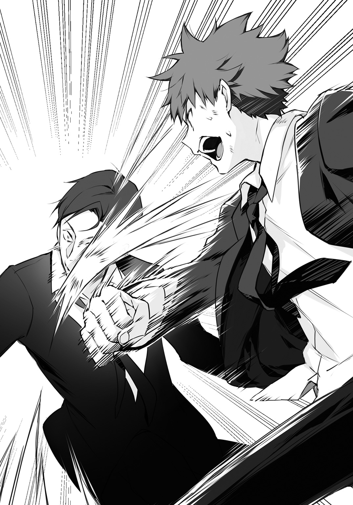
俺は咆哮する。
「うおおぉぉぉぉぉっ!!」
銃身がこちらに切り返される寸前、拳銃を握る隼人の手の甲めがけ、特殊警棒を力任せに打ち下ろした。鈍い音が響き、骨を砕いた感触が直に伝わってくる。
「まだぁっ！」
俺は拳を握り締める。爪が拳に食い込み、血が滲むほどに。強く、固く、握り締める。
そしてその拳を。
「ひっ......！」
苦痛と恐怖で歪む、隼人の顔面へ。
「おっらあぁぁあぁぁぁっ!!」
渾身の力で、叩き込んだ。
隼人の身体が半回転し、糸の切れたマリオネットのように、その場に崩れ落ちた。
妃奈がすぐさま駆け寄ってきて、同じ轍を踏まないよう、拳銃を拾い上げる。そうして、今度こそ完全に失神している隼人の腕を後ろに回すと、ケープの中に忍ばせていたロープで、慣れた手つきで縛り上げていく。
俺ははたと我に返ると、すぐさま沙耶香のもとへ取って返した。沙耶香は痛みのためか、あるいは出血のためか、気を失っている。俺はどうすればいいかわからず、ただただ狼狽する。
「ハンカチかなにかで銃創を圧迫して止血しろ。救急隊が駆けつけるまで、とにかく声をかけ続けるんだ」
その声に振り返れば、肩口を血で染め上げた万寿夫が立っていた。万寿夫は救急車を手配するためか、携帯を操作しながら、俺を叱責する。
「なにボーッとしてやがる！ さっさとやれ！」
「は、はいっ！」
俺は言われるまま応急処置に取りかかり、沙耶香に必死に呼びかける。
「大丈夫。こんな傷、どうってことねぇって。だから目を覚ませよ。沙耶香！ 沙耶香！」
＊
霧川神社で手を合わせ、一心に祈っていると、背後で足音がした。足音の主は無言で俺の隣に来ると、参拝するでもなく佇む。俺は横目でその人物を見やり、静かに問いかけた。
「肩の傷、もう大丈夫なんですか？」
右腕を三角巾で吊った万寿夫が、肩を竦めてみせる。
「嬢ちゃんに比べたら大した怪我じゃない。以前にも撃たれたことはあるしな」
「そうですか。安心しました」
「ふんっ」
万寿夫は片腕で、苦労しながら財布を取り出した。お賽銭の小銭を捜すが切らしているのか、チッと舌打ちが聞こえる。
「もう三日か。昼寝にしちゃ長すぎるよな。そろそろ目を覚ましてもいい頃だが、ここの神社、アテになるのか？」
「ご利益はありますよ。経験済みです。......そういえば、屋上でのこと、まだお礼を言ってませんでしたね。ありがとうございました。いま考えると正直意外です。刑事さんが、沙耶香の応急処置手伝ってくれるなんて」
「俺は刑事だ。市民の身の安全を考えるのは当然の義務だよ。それに......」
万寿夫は屋上での沙耶香の様子を思い出したのか、多少きまりの悪そうな顔になって告げる。
「自らの身を擲って盾になるなんてこと、俺たち刑事でもそうできることじゃない。来栖元長官のように、警護の仕事を金や地位を得る手段と考えてると思ったからこそ、キツイことも言ったが......あの姿には敬意を覚えたよ。咲にもあんなボディガードがついていてくれたら、何か違った未来があったのかもしれない。まあ、今さら詮無きことだがな」
万寿夫は手にしたままの財布に視線を落とすと、札入れから万札を取り出した。
「俺は神様は信じない主義だ。理由はわかるだろう？ だからまあ、俺の分まで祈っといてくれ。こんな紙切れで奇跡が起こるなら安いもんだ」
賽銭箱に万札を投入すると、万寿夫は片手を上げ、神社を後にしていった。神聖な静寂だけが、再び境内に満ちる。
俺は拝殿に向き直ると、両手を合わせてお祈りを再開した。万札が追加されたことで、ご利益が倍増したことを願って。そうして祈り続けるうちに、いつしか日が傾き、辺りが薄闇に没するようになった。肌寒さを覚え、ブルリと身震いすると、不意に背後から声がかかる。
「ケープヲ貸ソウカ？」
気配が一切なかったので、思わず飛び上がりそうになった。慌てて振り返り、仮面をつけた人物が幽霊の如く立ち尽くしているのを見て、実際に飛び上がる。
「お、おぉぉ。心臓に悪い。妃奈って言ったよな？ 取り敢えずその仮面は外してくれ」
妃奈は小首を傾げたあと、おとなしく仮面を外した。相変わらずの無表情が現れるが、どこか居心地が悪そうに仮面に視線を落とす。眼鏡をかける人間と同じで、仮面が身体の一部といった感じなのかもしれない。
「全然気づかなかったけど、いつからそこいたんだ？」
「刑事が立ち去った六分後から。沙耶香が入院している間、希純の警護は私が引き継いでる」
「え、そうだったの？ 契約書あるっていっても律儀だな」
俺は感心するが、妃奈はそんなことよりも興味が引かれるものがあるとばかりに、俺の様子をジッと見詰めて問いかけてくる。
「質問がある。ずっと手を合わせてるけど、何してるの？」
「何って......お祈り。沙耶香が早く目を覚ましますようにって」
「お祈り？ それをすれば沙耶香はよくなるの？」
「ああ。妃奈もするか？」
妃奈はこくりと頷くが、その場から動かず、俺にいたいけな瞳を向けてくるのみだ。どうやらやり方のレクチャーを待っている風である。
俺はしばし当惑したあと、妃奈を手招きして隣に来させた。
「実は俺もきちんとした参拝方法って知らないんだけど、まあまず最初にやるのはお賽銭かな。お金をこの賽銭箱に入れるんだ」
「お金......」
妃奈はケープの中で何かごそごそやったかと思うと、スリットの間からお金を取り出した。俺の目に狂いがなければ、それは帯封をされた百万円の札束である。
妃奈の指が離れる前に、俺は反射的に叫ぶ。
「ちょっと待ったー！ 額は気持ち程度でいいから！ さっき室田刑事カッコよかったのに、一瞬で薄めるの止めたげて！ 逆にセコイ人みたいになるから止めたげて！」
「気持ち程度......」
「おおぉぉ、増やすなよぉ。何束持ってんだよぉ。小銭でいいから小銭で。年功序列守ろう。ここは室田刑事の顔を立てよう。な？ な？」
神様の舌打ちという、何とも珍しい幻聴を耳にしながらも、何とかお賽銭を五百円玉まで値下げさせた。それを投入した妃奈が、次にどうすればいいのか訊ねるように、次の指示を待つ。
うん。何か芸を仕込まれるハムスターみたいだな。
「次はそこの鈴緒を引いて」
「......斬新。鈴が鳴るだけのトラップ」
「トラップじゃないから。構造に興味持たなくていいから」
ようやく手を合わせるところまでこぎつけた。妃奈はしばらく祈りを捧げる。
俺がその様子を横目で窺っていると、気配で察したのか、妃奈が問いかけてきた。
「なに？」
「ああいや、気分を害しちゃうかもしれないけど。暗殺者が熱心に沙耶香の回復祈るって、意外というか何というか」
「語弊がある。私はファントムという殺し名を受け継いだだけ。実際に人を殺したことはない」
「そうなのか？」
少し安心した。こんな、俺といくつも違わないだろう女の子が、殺し屋稼業をしているというのは、やはり気持ちのいいものではない。
しかし、殺し名を継いでいるというのはどういうことだろうか。沙耶香は妃奈のことを相棒と評していたが、二人はどんな関係だというのか。
その辺のことをもう少し詳しく知りたかったが、あまり立ち入ったことを訊ねるのは失礼だろうと思い止まった。すると妃奈が、やにわにこう切り出す。
「一つ、謝らなければならないことがある」
「ん？ なに？」
「今回の事態を招いた一端は、私のミスにある。予定では、夜の廃工場で全てのケリがつくはずだった。計画はこう。私があなたを廃工場に呼び出し、捕らえて仮初めの人質にする。沙耶香はあなたを救出する態でマンションを出て、覆面パトカーにわざと追跡させ、宇山刑事を誘い込む」
俺は廃工場での出来事を思い返した。ＺⅡで派手に登場した沙耶香だが、その直後には、隼人たちも工場に辿り着いていた。あれは沙耶香が、隼人を誘導した成果であったということか。
「廃工場には数多のトラップを仕掛けていた。その中には、遠隔操作で作動するものも紛れ込ませていた」
「そういえば一個だけそういう装置があったな。注射器を発射する装置みたいだって沙耶香は言ってたけど」
「そう。睡眠薬が入った注射器を、狙いを定めて射出するトラップ。私と沙耶香が対決する演技をしている隙に、それで室田刑事を排除してしまえば、足枷のなくなった宇山刑事は本性を出して沙耶香を襲う。そこを捕まえて一件落着のはずが、私があなたに予想外の反撃を受けた」
「あぁ、あれか」
振り子原理で強襲してきたドラム缶のトラップを逆利用して、妃奈を押し倒すようにして捕まえることに成功した俺。両手を合わせているその掌に、あの時の妃奈の柔らかな胸の感触が不意に蘇ってきた。俺は誤魔化すように、慌てて言う。
「そういえば、妃奈が逃げたと知った沙耶香が驚いてたな。何でこの状況で退くんだって。あれは予定外の行動に出たからだったんだな」
「あれは私の判断ミス。素顔を見られたことで、ＳＭＧのビルでの退避訓練の相手が私だとばれる危険性があった。だから、思い出される前に撤退を選んだ。定時連絡で、予定外の行動に出たことは沙耶香には謝ったけれど、あなたにはまだだった」
「そういうことか。でも、訓練の時は沙耶香が撒き散らした消火剤のせいで、全身真っ白になってたじゃないか。あの状態から素顔なんてわからないんだし、すぐ逃げなくても......」
「それに、襲われて貞操の危機でもあった」
「ゴメンなさいそれ誤解なんです許してください」
立場が一瞬にして入れ替わった。平身低頭して謝る俺を、妃奈は平坦な眼差しで見詰める。怒っているのかもどうかもわからないのが逆に辛い。
俺の誠意が通じたのかどうなのか。妃奈はやがて、話題を変えた。
「......沙耶香を許してほしい」
「え？」
「いま話したとおり、今回の件は私のミスによるところが大きい。本来なら、あそこまで危険な目に遭うこともなかったはず。だから沙耶香のこと許してほしい」
俺はその願いに色よい返事をすることはできず、黙然と口を噤む。沙耶香には早くよくなってほしい。それは噓偽りない気持ちだ。だからこそ、あの日から毎日こうして、神社で祈願を続けている。
けれど。沙耶香の回復を祈るのと、彼女を許すこととは、全く別の問題なのだ。
妃奈は表情こそ動かさなかったが、気落ちしたように目を伏せた。そして、言うべきかどうか迷うような間を挟んだあと、静かに口を開く。
「沙耶香があなたを警護対象者に選んだ理由、知りたい？」
「ん？ あぁ、何かその辺のことは言葉を濁してたよな、あいつ。どうせこの辺に住んでる学生から適当に選んだんだろ」
「それは違う。書類選考の段階であなたは第九候補。第一候補は別にいた。あなたと同じクラス。確か名前は、水谷」
「......あいつ、ちょくちょく顔出してくるね」
俺は溜め息をつくと、それじゃあ何で俺だったのかと、そう問いかけた。
妃奈はつぶらな瞳を俺に向け、はっきりと答える。
「――一目惚れしたと、沙耶香は言ってた」
俺は目を丸くしたまま、しばし固まった。
沙耶香が俺に、一目惚れ？
妃奈は一つ頷き、言を継ぐ。
「第十候補までは、その人となりを見るため、何日か張り込んで直に観察する機会を設けた。私たちがあなたに初めて会ったのは、一カ月ほど前の、飛行機のなか」
「えっ？ あの機内にいたのか？」
「同乗していた。そしてそこで、沙耶香はあなたに一目惚れした」
「そ、そうか」
沙耶香が回復するのと、沙耶香を許すのは別。それと同じように、異性に好意を持たれて素直に喜んでしまうというのも、別の問題だ。ドＳであるということを除けば、沙耶香はパーフェクトガール。あんな女の子に一目惚れされたというのは、照れ臭くもあり誇らしくもあり。
妃奈はもじもじしている俺に、詳細を伝えてくる。
「ＣＡが医師を探している間、席を立つに立てず、尿意を必死に我慢するあなたの姿にそそられた、一目惚れしたと沙耶香は言っていた」
「......えぇぇー。それ何か違うー。思ってたのとー。たぶん一目惚れっていう意味を履き違えてるー」
俺の反応が理解できないのか、妃奈は目をぱちくりさせた。
「思ってたのと違う？ どう思ってた？」
「恥ずかしくて言えません。自意識過剰でしたスミマセン」
「そう。何にせよ、沙耶香はあなたを警護対象者に選んだ。あなた相手なら最高の仕事ができると言っていた。それぐらい、あなたのことを大事にしていたということ。結果的には私たちの力が及ばず、危険な目に遭わせてしまった。けれど、沙耶香が全身全霊であなたを護ろうとしていたことだけは理解してあげてほしい」
妃奈は一息でそう訴えると、言うべきことは言ったとばかりに、身を翻した。神社から立ち去ろうとした際、再び仮面をつけようとしていたので、俺はふと声をかける。
「何で仮面つけるんだよ？ 別に人殺しして逃げ回ってるわけじゃないんだろう？」
「......昔から、被ってたから」
「外してた方がいいと思うぞ。可愛い顔してるんだし」
さらりと口にしてしまったあと、ちょっと気恥ずかしくなった。こういうことを平然と言えるのは京也くらいなものだ。馬鹿は強し、である。
妃奈は仮面に視線を落としてしばし考えていたが、やがてケープの中に仮面をしまった。
「それじゃあ」
そう短い挨拶をして、妃奈は暗闇の中へと溶け込んでいく。
独り取り残された俺は、ぽりぽりと頭を搔いた。腕時計に目をやってみると、面会時間がもうすぐ終わろうとしている。俺ははぁと吐息すると、誰にともなく呟いた。
「......それじゃあ、一万と五百円のご利益、一応確かめに行くかぁ」
＊
蓮音市立病院の一室で、沙耶香はまるで眠り姫のような高潔さを湛えてベッドに横たわっている。酸素マスクや腕に伸びたチューブがなければ、本当にただ眠っているだけのように映ることだろう。俺はベッド脇にある椅子に腰掛けると、沙耶香に話しかけた。
「さっき霧川神社に、室田刑事がやってきたよ。沙耶香の回復祈願のために、賽銭箱に万札放り込んでくれたぞ。ボディガードとしての沙耶香の働きに敬意を払うってさ。これ以上の褒め言葉はないよな」
沙耶香の反応はない。
病院独特の消毒薬の匂いが、どこか寂しい気持ちにさせる。
「妃奈も来てくれた。あいつ、少し世間とズレてるとこあるな。いったいお前らどういう関係なんだよ。こっちは妃奈のトラップに酷い目に遭ってんだから、取り敢えず紹介くらいしろよ」
病院内ではお静かに。
それはわかってるけどさ、ここまで徹底して守るなよ、返事くらいしろよな。
「この三日間で、一つだけわかったことがあるよ。妃奈は少し勘違いしてたみたいだけど、俺は別に、死にそうな目に遭わされたから怒ってるんじゃないんだ。そりゃあ、何度も冷や汗かいたけどさ。沙耶香は優秀な用心棒だってわかってたし、信頼してたから、きっと切り抜けられるって思いがいつもあった」
そう。信頼だ。
「信じてたのに、噓をつかれた。騙された。裏切られた。それが許せないんだよ。それに腹立ててんだよ。今だって変わらない。俺はお前にムカついてる」
ベッド脇にあるバイタルサインをモニターする医療機器が、微かな血圧の変化を訴える。
俺はシーツの外に出ている、沙耶香の左腕をとった。
「だから、俺に文句を言わせろ。叱らせろ。謝らなくたっていいから。これまでみたいに、俺のことからかったっていいから。だから、このままお別れなんてのはナシにしてくれ」
沙耶香の左手を祈りを捧げるように両手で握り締めた。
一万とんで五百円。ついでに言えば、俺が放り込んだ、なけなしの七千三百十六円。
「頼むよ。沙耶香は俺の笑顔を護ってくれるんだろ？ そう言ってくれたじゃないか。このままじゃ、いつ振り返ってみたって、最悪の思い出にしかならねぇよ。笑って思い返すなんてできねぇよ」
唇が戦慄き、声が掠れる。どうしようもなく嗚咽が洩れる。
沙耶香の手を額に押し当て俯くと、俺は心の底から語りかけた。
「お願いだ、沙耶香。目を覚ましてくれ......」
期せずして涙が零れ、沙耶香の手を濡らすが、それでも反応はない。絶望感に苛まれながらズズッと洟を啜り、ぐしゃぐしゃになった顔を上げたとき。
――カシャリ。
沙耶香の右手に、魔法のように現れたスマホが、間の抜けたシャッター音を響かせた。
「......はい？」
沙耶香の目がぱちりと開く。彼女はそのまま、何事もなかったように上半身を起こし、煩わしそうに酸素マスクを外した。そして、今しがた撮影した俺の泣き顔の写真を見詰め、満足げに評価を下す。
「ふふっ。惨めで不細工な顔。待ち受け画面にしたら、こんな底辺で無様な人間がいるんだから頑張ろうって、日々の活力が出そうね。素敵」
「あの、お楽しみのところ失礼しますけど、お身体は？」
「経過も良好。問題ないわ」
本当に俺の写真を待ち受け設定しながら、沙耶香は平然とそう答えた。俺はまだ状況の理解ができていない頭で問いかける。
「え？ だって、撃たれたショックで目を覚まさないって」
「まさか。それほど柔な鍛え方はしていないわ。緊急手術が終わったあと、すぐに目は覚めたわよ。昏睡状態を演じてたのは、この際だから徹底的に私の敵を炙り出そうと考えてたから。この機に乗じて、私を亡き者にしようとする不逞の輩がいないか網を張ってたんだけど、どうやら大丈夫そうね。これで憂いなくＳＭＧの仕事に邁進できるわ」
「そんな、お前、俺がどんだけ心配したと思ってんだよ」
理解が嵐のように押し寄せ、怒声という雷鳴を轟かせそうになった時だ。未だ握り締めていた沙耶香の左手が、ぎゅっと俺の手を握り返してきた。沙耶香は顔を伏せる。長い髪が流れ、彼女の表情を覆い隠す。
「......わかってる。わかってるよ。心配かけてごめんなさい。ありがとう」
手も声も微かに震えていた。沙耶香はもしかすると泣いているのかもしれない。俺への感謝の気持ちがそうさせるのか。それとも、再びこうして言葉を交わせる仲に戻れたことに安堵しているのか。
自惚れてもいいのなら、後者のように思う。昨日でも明日でもなく、俺が病室を訪れた今この場で目を覚ますことにしたのが、その何よりの証拠にも思える。
そこまで考えると、もういいかと、そんな気持ちになった。怒りはあるけれど、それもひっくるめて、いつか笑い飛ばせるような思い出になりそうな予感がした。沙耶香は約束通り、俺の笑顔を護ってくれたのだ。
「はぁ。もういい。何にせよ、目を覚ましてくれてホッとしたよ」
俺の気持ちが左手から伝播したのか。沙耶香は自らを落ち着かせるような間を挟んだあと、ゆっくりと顔を上げた。そこには悔悟の情も涙の跡もない、晴れやかな笑みが浮かんでいる。沙耶香は楽しげに目を細め、いつものように俺を口撃した。
「あら。これだけのことをされたのにあっさりと引き下がるなんて、もしかしてマゾヒストなんじゃない？」
「これだけのことをしといてその言い草は何だ。不運なのはいつものことだけど、ここまで迷惑かけられたのは初めてなんだぞ」
......まったく。でもまあ、沙耶香らしくていい。沙耶香はこうでなければと思う。
Ｍじゃないよ。
ノーマルだよ。
「確かに迷惑をかけたという自覚はあるわ。せめて何かお詫びしなくちゃいけないわね」
「別にいいよ。サディストのお詫びって何か怖いし」
「遠慮しなくていいわ。そうね。何がいいかしら......」
しばし思案顔を見せていた沙耶香が、何か思いついたように、ぽんと手を叩いた。沙耶香は病室の入り口に設置されている洗面台を示して言う。
「あそこに洗面器あるでしょう？ あれに温かいお湯を入れて持ってきてちょうだい」
「は？ 何で？」
「いいから早く。それとも、怪我人にそんな重労働をさせる気？」
何ともズルい人の使い方である。俺は渋々ながらも洗面台へと移動し、洗面器にお湯を張る。
洗面器を持って戻ってみると、沙耶香はベッドから足を投げ出すようにして腰掛けていた。高低差があるので沙耶香は俺を見上げる形となっているが、上目遣いながらもその眼差しには媚びるような色は全くない。それどころか、戦に向かうアテナを想起させるような、挑発的な輝きを内包している。
沙耶香が腕を閃かせ、何かを俺に向かって放ってきた。洗面器を抱えていない左手で咄嗟にキャッチしてみると、それは真新しいタオルである。
「うん？」
俺がきょとんとしていると、沙耶香がベッドのシーツを手繰り寄せ、膝掛けのようにして下半身を覆い隠した。そのまま何かゴソゴソとやっていると思いきや、病室着のズボンがするりと脱げ落ち、沙耶香の素足がシーツの裾から覗く。
「!?」
俺が目を剝いて絶句していると、沙耶香は焦らすように右足をスッと持ち上げる。その動きに合わせてシーツがずり落ち、彼女の白くて清らかな太ももが晒されていった。
「ちょっ、何を――」
我に返った俺が回れ右して後ろを向こうとしたとき、沙耶香がスッと目を細め端的に告げた。
「拭いてちょうだい」
「は？」
「飲み込みが悪いわね。しばらく入浴できてないし、汗でベタベタして気持ち悪いの。だからそれで拭いてちょうだい」
どこぞの貴族めいた命令口調だった。確かつい先ほどまで、お詫びがどうとか言っていたはずなのだが。
呆気に取られている俺を目にして、沙耶香が催促するように、その美脚をさらに高く上げた。ゆったりと空間を撫でる彼女の右足は、やがて俺の顎先に差し出される。
沙耶香がクスッと笑みを零した。天使のように微笑む悪魔がいたとしたら、きっとこんな妖艶さを醸し出すに違いないという、何とも扇情的な表情。形のいい唇が静かに動き、甘い囁き声を洩らす。
「――お詫びを兼ねての、ご褒美」
肌が粟立つような感覚があった。俺は思わず息を呑む。手に自然と力が入り、洗面器の水面に波紋が生じる。
大事なことだからもっぺん言っとく。
Ｍじゃないよ！
ノーマルだよ！
けれど。自分の行為に一片の迷いも疑いも持たず、まるで神様のように昂然かつ甘美に命を下す沙耶香は、魔力的にキレイだった。息苦しくなるほど魅力的だった。
俺は声が裏返らないよう、細心の注意を払いながら口を開く。
「何がご褒美だよ。罰ゲームの間違いだろ」
「あら。私の生足を触れるのよ？ それだけでも感涙ものでしょう？」
「女の子が生足なんか言っちゃダメー！ 何か卑猥だからダメー！」
俺のそんな抗議などどこ吹く風で、沙耶香は少し焦れたように言う。
「いいから早く。さっきも言ったけど、汗をかいてて気持ち悪いのよ」
沙耶香は俺が命令に従うことを微塵も疑っていない様子で、右足を下ろす気配すらない。本来なら無視してもいいところだろうが、目のやり場に困る俺の視界に、どうしようもない存在感で映り込んでくるものがあった。それはＺⅡが爆発した際に俺を庇ってできた傷。太ももに巻かれた痛々しい包帯である。
右足を無闇に動かしていると傷に障るだろうし、不衛生なのもよくないだろう。
......まあ、俺がそう考えることまで、きっと沙耶香は折り込み済みだろうけれど。
俺はほぅと吐息すると、ベッドの傍にある椅子に腰を下ろした。サイドテーブルに置いた洗面器にタオルを浸し、ギュッと絞って水気を切る。
「言っとくけど、右足だけだぞ。他は自分でやれよ」
「あら。それなら床に跪いて、生涯の忠誠を誓う騎士のようにやってほしいわね」
何だそりゃ。それじゃまるで、プロポーズを――
俺はその先を深く考えないようにして、沙耶香の足首を手にした。驚くほど華奢で、すべすべとした肌触り。俺は加速し始めた鼓動を必死に無視しながら、濡れタオルを沙耶香のふくらはぎに押し当て、撫でるように素足を拭き始める。
「んっ......希純くん、くすぐったい」
「し、仕方ないだろ。初めてなんだから。文句あるなら自分でやれ」
「ふぅん。希純くんにとって初体験なのね。大丈夫よ安心して。私、きちんと濡れてるから」
「そうっ、俺が手にしているのは何を隠そう濡れタオル！ 濡れタオルなのだ!!」
......あぁもう、何だろねこの状況は。
しめやかな夜に沈む、二人っきりの病室。
沙耶香は俺に素足を差し出し。
俺はそれを丹念に拭っている。
もうほんと、何だろねこの状況は。
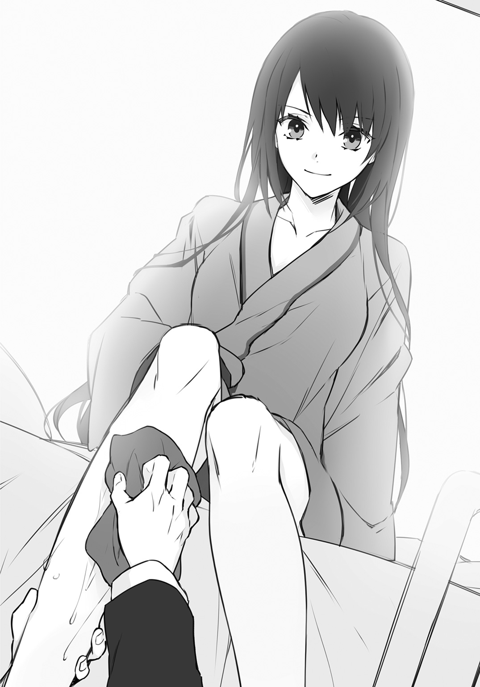
沙耶香のわがままなんかに付き合わず、さっさと帰ってしまえばいいようなものだが――
俺は素足からチラリと視線を上げ、沙耶香の顔を窺ってみた。すると彼女はとても満ち足りた表情で、俺に微笑み返してくる。
ただでさえ高い体温が、さらに上昇したように思えた。俺はフイと視線を逸らしながら思う。
（......まぁ、いいか。理不尽な目に遭うのはいつものことだしな）
しつこいけどもっぺん言っとく。
Ｍじゃないよ!?
ノーマルだよ!?
ホントだよ!!
＊
病室で独りきりになった沙耶香は、希純が触れた箇所を確かめるように、自らの右足にそっと指を這わせた。今も明瞭に残る希純の体温。その事実に、自然と口元が緩む。
そのとき、不意に病室のドアが開いた。沙耶香は慌てて唇をきゅっと引き締める。
「希純くん、お見舞いの品すら持ってこなかったのに、何か忘れ物でも――」
そこで言葉を途切らせた沙耶香は、表情に緊張を走らせた。病室に現れたのは予想外の人物。
「お祖父さま......」
来栖源之助が、厳めしい顔つきで佇んでいた。とうに還暦を過ぎているというのに、その体軀は頑健そのもので、他を圧するオーラを放っている。抜け目のない眼差しは真剣じみた鋭さを湛えており、病室を検閲するかのようにぐるりと見渡すと、沙耶香のところで視線を止める。
「もう狸寝入りは止めたのか」
源之助の口から紡がれる遠雷のような低音に、沙耶香がぴくりと反応して姿勢を整える。それは居住まいを正すというよりもむしろ、臨戦態勢に入るような動作。
「......ご存知でしたか」
「当たり前だ。それにしても、馬鹿げたことを仕出かしたものだな。あんな小者、どうとでもなっただろうに」
「お言葉を返すようですが、宇山は本気で私の命を狙っていました。多少強引な手を使ってでも排除し、後顧の憂いなくＳＭＧの事業に邁進することは理に適った――」
「わたしの目は節穴ではない。そんな建て前に欺かれるとでも思ったのか？」
沙耶香は押し黙り目を伏せた。どこまで見抜かれているのか。それとも単なる鎌をかけているのか。下手に口を開くのは得策ではない。
そういった思考までも見透かすように、源之助が言葉を続ける。
「あれほどの騒ぎになった事件、しかもそれに現職の刑事が関わっているということで、マスコミもこぞって取材合戦に興じている。宇山の身辺も徹底的に取材され、何者かに妻が殺されたという件もすぐさま調べ上げられることだろう。しかもご丁寧に、このタイミングで当時の捜査資料の一部が流出した。『死神』の存在が公になるとは思わんが、勘のいいものは奴の纏う死臭ぐらいは嗅ぎつけるかもしれん。そしてそれは、死神にとっては不愉快極まりないことに違いない。この事態を招いた者に制裁を加えることを考える可能性もある」
ここで源之助は間合いを測る剣豪の如く一呼吸置き、斬りつけるように断じた。
「お前はあの小者を利用して、死神に宣戦布告をした。初めからそれが狙いだったのだろう？」
沙耶香は答えない。しかしそれは、何よりも雄弁な肯定のサイン。
源之助が嘆息する。
「お前の名が表に出ないように手は打った。しかし、死神が本気になれば、すぐさま見抜かれることだろう。あとは死神が、単なる子供の悪戯だと見逃してくれるのを待つことだ。あれはお前の手に負えるものじゃない。まさしく化け物だ」
源之助が身を翻す。そのまま病室を後にする寸前、振り返りもせずに言った。
「......私情に流されるな、沙耶香。人の命を預かるなら、なおさらな」
病室のドアが閉まり、沙耶香は再び一人きりになる。しかし先ほどのような、高揚した気分は、病室のどこを捜しても微塵も見出せなかった。
沙耶香は窓の外に眼をやる。
綺麗なお月様が、ひそやかに世界を照らしていた。
＊
とうとうこの日がやってきた。喜んでいいのか、悲しんでいいのか。
今日は沙耶香と出会ってからちょうど一週間。つまりは、用心棒の契約が切れる日である。
学生鞄、よし。
スポーツバッグ、よし。
中身も......うん、入ってる。
俺は忘れ物がないことを確かめると、夜勤明けで寝ている緋香里を起こさないよう、小さく「行ってきます」と告げてマンションを出る。
いつもの通学路をたらたら歩いていると、例の廃工場が見えてきた。何もかもここから始まったんだよなぁと、感慨深い思いで眺めていると、鉄柵のところで手持ち無沙汰な様子で佇んでいる沙耶香の姿があった。俺は目を瞠ると、駆け足で沙耶香のもとへと向かい話しかける。
「本当に退院したんだな。もう学校行っていいのか？」
「当然よ。あの程度の怪我でいつまでも寝ていられないわ」
「いや、撃たれたんですよね？」
俺は呆れるが、何を言ったところでおとなしくするはずもないかと思い直し、それ以上ツッコミを入れるのは止めた。代わりに、スポーツバッグに収めていた紙袋を取り出す。近所で評判のケーキ屋のものである。
「一個食うか？ シュークリーム」
「あら、退院祝い？」
「あー、悪い。まさか登校してくるとは思ってなかったから、そっちはまた今度ってことで。これは何つーか......ご褒美？」
「？」
今はいいとのことだったので、俺はその紙袋を鉄柵に引っかけ、そのまま歩き出した。沙耶香が虚を衝かれたように訊いてくる。
「ちょっと。あれ、放っておくの？」
「いいから、いいから」
俺は沙耶香と共にしばらく進んでから、肩越しにチラリと背後を振り返った。すると案の定、どこからともなくフラリと人影が出てきて、紙袋に近づいていく。
「あれ、妃奈じゃない」
「ああ。沙耶香が入院している間、俺のこと護ってくれてたんだろ？ だからそのご褒美というか何というか」
妃奈は紙袋からシュークリームを取り出すと、何の迷いもなくかぶりついた。小さい口なので上手く頰張れず、シューから出てきたクリームがほっぺの辺りにつく。それでも気にせず黙々と一個完食。無表情なので気に入っているのか判然としなかったが、残りのシュークリームが入った紙袋を手に、シュバッと消えてしまったので、恐らく満足する味だったのだろう。
何かドングリを持ち去るリスみたいだな。
「おー。今日は合格らしい。一昨日、辛いせんべいを食べさせてみたんだけどな。その場では黙々と食べたくせに、俺が翌朝目覚めたら、瞼の上に残りのせんべい置かれてた。すっげぇヒリヒリした。チョー痛かった。マンションに泊めてたわけでもなかったんだけど、どっから入ってきたんだろね」
「希純くん。妃奈を餌付けしないで。......それにしても、仮面つけてないのね。何度か取るように言ったのだけれど、そのままだったのに。何かあったのかしら」
「うん？ ......さあ。何でだろね」
そこで会話が途切れた。俺たちは無言で学校を目指す。
何だか沙耶香がおとなしすぎて調子が狂う。きっと警護の仕事のことで悩んでたりするんだろう。何せＳＭＧの代表なのだから。俺には想像もつかない苦悩があるに違いない。
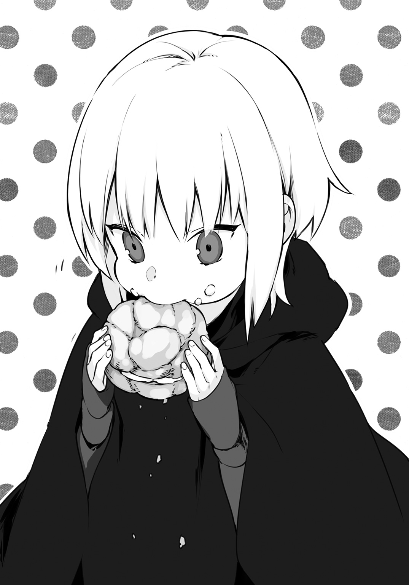
そう考えた俺は、これまであえて避けてきた話題を口にした。
「沙耶香はこれからどうするんだ？ 契約も終えるし、『流しの用心棒』みたいに、色んな奴を助けに行くのか？」
「立場上そんなことできないわよ。しばらくは地道に営業ね。政財界の要人にＳＭＧを売り込んでいかなきゃいけないし。警察庁と連携して、警護の必要な案件をピックアップして、直接交渉したりとかね。既にいくつか仕事も舞い込んでいるけれど、当面は私は動かず、部下を派遣するつもりよ」
「それじゃあ、用心棒はしばらくお休み？」
「そうね。入院してた上にこれじゃあ、身体が鈍ってしょうがないけれど」
「だったら続けたら、俺の用心棒」
自分の台詞ではあるのだが、無意識のうちにさらりと口を衝いて出たその言葉に、俺は思わず固まった。沙耶香にとってもこの申し出は意外なことだったようで、目をぱちくりさせて俺のことを見返してくる。
俺はガリガリと頭を搔くと、半ば自棄になっておざなりに続けた。
「ええと、ほら。俺って運悪いから。何だかんだで危険な目に遭うし。それに、俺の用心棒やめたことで、沙耶香が学校辞めることになったりしたら、せっかく仲良くなったクラスのみんなも悲しむだろ。菜々美なんか絶対泣くぞ」
沙耶香は何か言いかけたが、その言葉をぐっと飲み込んだ。そして恐らく、全く逆の思いを口にする。
「ごめんなさい。希純くんのボディガードは、これ以上は続けられないの」
「......そっか」
「勘違いしないでね。希純くんのボディガードはもう嫌とか、そういったことじゃないの。ただ、これ以上は希純くんを危険な目に遭わせられない」
「何を今さら。これまでだって、」
「違うの。これまでとは本当に、危険の質が違う。これは単なる杞憂に終わることなのかもしれないけれど、宇山のように、私の命を狙う人間が今後も現れるかもしれない。うぅん。きっと現れると私は確信しているわ。病院で昏睡状態のフリをしていたのも、本気で襲撃に備えていたからなの。これから私がしばらく誰のボディガードにも就かないのも、私のせいで警護対象者を危険な目に遭わせられないから。だから、ごめんなさい」
沙耶香は真剣な表情でそんなことを告げた。今回ばかりは俺のことをからかっている風もない。
沙耶香がどんな状況に陥っているのか、俺にはわからない。彼女がここまで慎重な言動を取るのだから、かなり危ない橋を渡っているのだろうと、そんな漠然とした推測が成り立つだけ。
けれど――いや、だからこそ。
俺は、明るく笑い飛ばしてみせる。
「ははっ。何だよそれ。俺への当てつけか？ 人を巻き込むことに関しては人後に落ちない自信があるぞ。何たって、俺の不運のせいで、菜々美は死にかけたし」
「笑いごとなんかじゃないの。本当に、」
俺は沙耶香の腕を取り、グッと引き寄せた。互いの息がかかるような至近距離で、しかし俺は怯むこともなく、沙耶香の目を見据え、力強く言う。
「撃たれたせいで混乱してんなら、俺がきっちり思い出させてやる。お前は来栖沙耶香。進さんみたいな凄腕の用心棒だ。だからそんな気弱なこと二度と言うな。何があったって護ってくれんだろ、俺のこと。実際に護ってくれたじゃねえか、俺の笑顔。お前を必要としてる奴がここにいるんだ。だったら颯爽と救ってくれよ、進さんみたいに」
沙耶香はしばらくの間、微動だにしなかった。目を丸くして俺のことを見返すのみで、呼吸すらろくにしていなかった。
だがやがて、沙耶香の虹彩に決意が宿っていく。口元に不敵な笑みが蘇る。それはまるで、不死鳥が天空を目指し、高く、高く昇っていくような、勇壮で美しい姿。
沙耶香は俺の腕を乱暴に振り解くと、スマホを取り出した。通報されるのかなとドキドキしていると、待ち受け画面になっている、俺の泣き顔を突きつけてくる。
沙耶香は嗜虐的な表情で、高圧的に言い放った。
「こんな顔をするくせに、生意気なことを言うわね。この泣き顔、世界配信してやろうかしら」
「あ待ってください。調子に乗ってましたスミマセン」
「んー、どうしよっかなー」
沙耶香は目を細め、口元にスマホを押し当てながら考え込む素振りを見せる。でもその様は、俺の写真にキスしているようにも見え、何ともごにょごにょ。
やがて沙耶香は、囁くような小声で告げた。
「私はあなたの笑顔を必死に護った。でもあなたは、簡単に私の笑顔を取り戻してくれるのね」
「え？ なに？」
「用心棒の件、引き受けるって言ったのよ。嬉しいでしょ？」
そいつは確かに朗報だ。だから世界配信だけは勘弁してください。
スマホをひらひらさせる沙耶香を追いかけていると、やにわに菜々美の声が聞こえてきた。
「あ、さっちゃん！ もう学校来ても大丈夫なの!?」
菜々美が四辻の角から駆けてきて、沙耶香に心配そうな眼差しを送る。
「さっちゃんって、持病があったんだね。言ってくれればよかったのに」
そういえば、銃で撃たれたんじゃなく、心臓の持病で入院ってことになってたんでしたね。学校で爆弾騒ぎがあったとき、突然倒れた沙耶香に俺が付き添い、必死に看病したことになってたんでしたっけ？
ちなみに爆弾魔の正体は薬物中毒に陥っていた隼人で、教育現場の防犯体制に警鐘を鳴らすつもりで計画した凶行とか何とかになってましたね。ＭＵＳＡＳＨＩとかＳＭＧとか、仕事増えるんでしょうね。さすが沙耶香のお祖父さん、うまくやりましたね。
それより、世界配信だけは。
あうあうとうろたえながらスマホを追い続けていると、京也とばったり出くわした。京也は沙耶香の姿を認め、ぱっと顔を輝かせる。
「あぁっ!? 沙耶香ちゃん、久し振り！ 元気になったんだねよかったぁ！ 沙耶香ちゃんがいない間、俺ってばご飯も喉を通らなくて――何だコラ希純ぃ。何か文句あんのかぁ？」
「おう、おはよ。今日も元気そうだな」
「え？ 希純が何か優しい。へへっ、おはよう。俺たち色々あったけど、やっぱマブダチ、」
「ところで水谷、ネクタイ少し曲がってるぞ」
「水谷？ ......あぁっ！ 俺の後方五十メートルほどに水谷の姿が！ 視力いいね!? というか、まずは近くにいる俺に挨拶しようよ！ 眼中に入れてよ！」
「俺が？ 京也と？ 挨拶を交わすだと......？」
「そんなにハードル高くないよね!? むしろ礼儀だよね!?」
学校に近づくにつれ、顔ぶれも増え、何だか騒がしくなってきた。俺の泣き顔を見られる前に行動を起こさなければ。
菜々美と会話を続けながらも、沙耶香は後ろ手でスマホを持ち、「どうしよっかなー？」とばかりにフリフリさせている。
（馬鹿め、隙ありぃーっ！）
半ばかっさらうように沙耶香のスマホを奪った俺は、液晶画面を見て遠い目をする。
......まあ、うん。わかってたことだよ。
奪い取る際、摑み所が悪かったんだろうね。世界配信の準備万端整った画面で、『実行しますか』のメッセージが出ている下の部分。『ＹＥＳ』の選択肢を、俺は自分の指で知らず知らずのうちに押していた。
俺は抜けるような青空めがけ、大砲の如く叫ぶ。
「相変わらず運悪いな、チクショ―――――――ッ!!」
あ と が き
初めましてこんにちは。望月充っと申します。誤解されるといけませんので先に書いておきますが、ペンネームの最後に付いています小さな「つ」は、打ち損じや校正ミスではありません。『望月充っ』が正式ペンネームとなっております。あしからず。
ここまで書くと、小さな「つ」を入れた説明が必要かなとも思いますが、特に誰も気に留めていないかもしれませんので止めておきます。意外と要望があればその時にでも。
いえそんな。暗にファンレターをねだっているとか、恐れ多い。......恐れ多いっ！
自己紹介はこれくらいにして、本作について触れます。この度は拙作を手にとって頂き、誠にありがとうございます。本書は第二回集英社ライトノベル新人賞で特別賞に輝きました、
『Ｓっ気のある美少女ボディガードを雇ってしまったので、いつも敢えて死にそうな目に遭わされたのちに護られる俺。』
を改題して刊行したものとなります。
......元タイトル長いですね。それ以前に作者の正気を疑いますね。ですがそれでいいんです。内容は元タイトル通りのラブコメディ。意外と熱い場面があったり、登場人物の思惑が錯綜したフェイクがあったりしますが、とにかくとことん笑って楽しめる作品を目指して書きました。改題改稿を経てパワーアップした本作品、少しでも気に入って頂けたなら嬉しいです。
本書が形になるまでに様々な方にご尽力頂きました。この場をお借りして感謝の意をお伝えしようと思います。
まずは選考に携わった、ダッシュエックス編集部の皆様。そして、ゲスト審査員の長谷見沙貴先生。どうもありがとうございました。特に長谷見先生からは、講評以外にも貴重なアドバイスを直に頂戴いたしました。今後の糧にいたします。
次にイラストレーターの中原様。魅力的なキャラが上がってきた時の感動は忘れません。イラストに触発され、ビジュアル設定を一部変えるくらいに気に入りました。お忙しいなか、キャラの性格まで加味した絵を描いて頂き、本当にありがとうございます。
担当の石川様。女性の担当者ということで、改稿作業で作中のちょっとエッチなシーンに触れる度に、「これセクハラにならないかな？ そろそろ土下座した方がいいかな？」などと密かに心配しておりましたが、何度か打ち合わせを重ねたある日、石川様の口から発せられた、
「――この作品に足りないのは、エロいモーションだと思います！」
の一言に目から鱗が落ちました。うら若き乙女が『おっぱい』を連呼するのを聞き、「むしろこっちが恥ずかしいわ！」と思った未熟な筆者を、今後も何卒お導きください。
最後に、本書をご覧になっている読者の皆様、本当にありがとうございます。皆様のご期待を裏切らないよう、これからもベストの作品を書き上げていこうと思いますので、よろしければお付き合いください。
※本書は第２回集英社ライトノベル新人賞特別賞受賞作
「Ｓっ気のある美少女ボディガードを雇ってしまったので、いつも敢えて死にそうな目に遭わされたのちに護られる俺。」
を改稿・改題したものです。
著者紹介
望月 充っ もちづき あたる
集英社主催の『集英社ライトノベル新人賞』及び『ジャンプ小説新人賞』をＷ受賞した愛媛県民。さして日を空けず催された授賞式。その後に開かれた、それぞれの編集部との会食。案内される同じ店。通される同じ部屋。目の前に並んでいく、数日前と同じコース料理......。パラレルワールドに迷い込んだかと思いました。
illustration
中原 なかはら
初めまして中原です。よろしくお願いしますー。
ダッシュエックス文庫DIGITAL
ボディガードな彼女いわく、サディスティック日和にて。
著者 望月 充っ
© ATARU MOCHIDUKI 2016
２０１６年２月29日発行
この電子書籍は、ダッシュエックス文庫「ボディガードな彼女いわく、サディスティック日和にて。」
２０１６年２月29日発行の第１刷を底本としています。
発行者 鈴木晴彦
発行所 株式会社 集英社
〒１０１－８０５０
東京都千代田区一ツ橋２丁目５番10号
０３－３２３０－６０８０（読者係）
編集協力 石川知佳
制作所 株式会社ＩＣＥ
本作品の全部また一部を無断で複製、転載、改竄、インターネット上に掲載すること、および有償無償に関わらず、本データを第三者に譲渡することを禁じます。なお個人利用の目的であっても、コピーガードを解除しての複製は、法律で禁じられています。